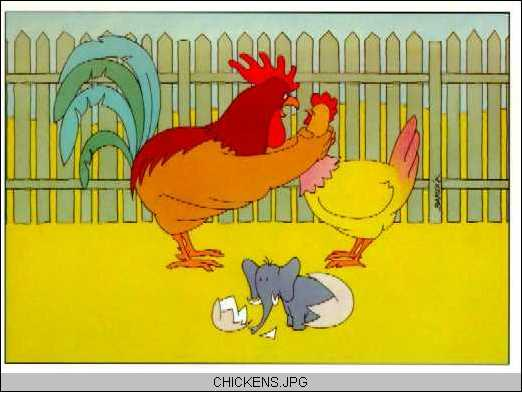
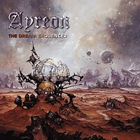
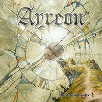
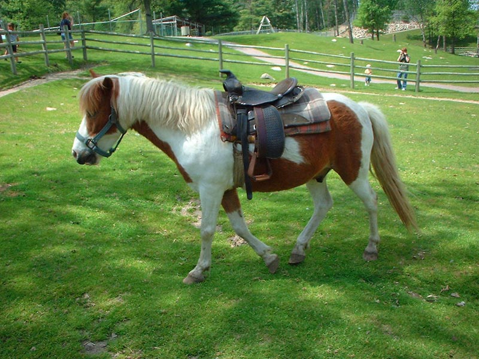
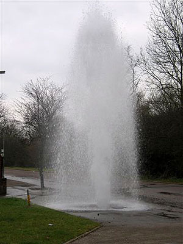
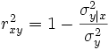
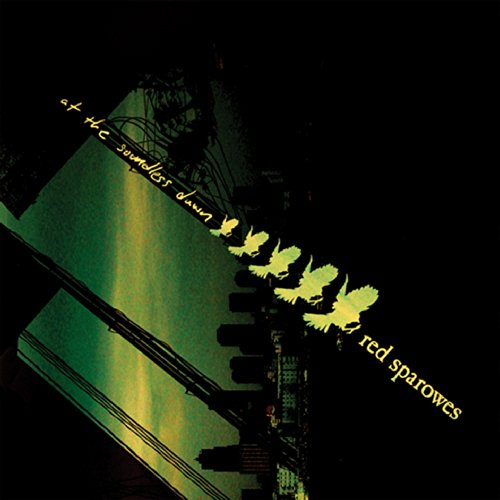
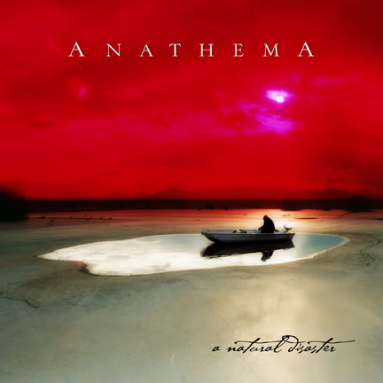
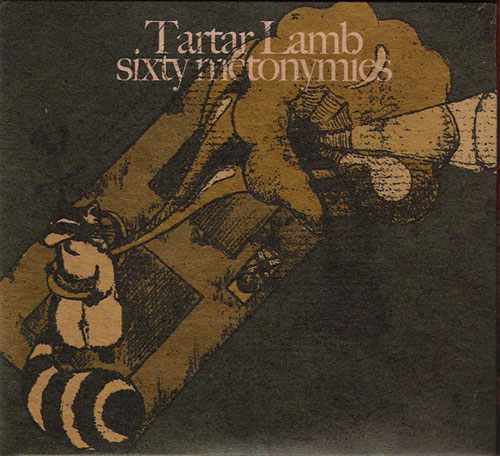

#5050 1 2005-11-05T14:09:05Z Borealis 35-2 Research Facility is a fairly good level, in that it's enjoyable to win with a good time, to SuperJump on the launch pads, even fun to die on. However, I found a totally different reason to enjoy it:

Yes, I realise that I died, but frankly I was too busy laughing my socks off at that!
#112571 3 2005-11-05T14:25:36Z Borealis Well, the drone got trapped, for a start.
I guess some people's senses of humour are different.
Attachment (lost): post-7-1167249000.txt
#112584 7 2005-11-05T15:02:18Z Borealis Whoops, yes, perhaps I should have explained. The thing that made it much funnier was that it was totally unintentional - and I only realised just before I ran into a mine.

Thankyou for the comment about my signature and avatar, nevermore.
#112585 16 2005-11-05T15:07:59Z Borealis Not being funny guys, we should make a guide for new users as for using NUMA. I found it hard myself.
#116200 17 2005-11-19T16:30:08Z Borealis "I seem to have lost my number, can I have yours?"
#116820 21 2005-11-21T17:49:22Z Borealis Maestro:
Yeah, but:
NewNova
MiniNova

Links removed.
#117024 460 2005-11-22T16:21:11Z Borealis Not really an anime fan, and the animation is a bit sloppy. 4/10.
#117393 714 2005-11-23T21:16:23Z Borealis Yeah, animations are good, but that bunny thing was started in '99. Therefore 8/10 for the animations, minus 6 for the number of years the bunny thing has been about, that makes 2/10.
#120886 4 2005-12-06T13:42:04Z Borealis <snip>..being able to dodge oncoming enemies or bullets...<snip>
You do know that is half of N's gameplay already. You just have to do it yourself with your superior dexterior skill, young padawan.
*cough*
#121276 13 2005-12-08T07:50:29Z Borealis Borleas, i have beaten the game.
Show me.
#121278 17 2005-12-08T08:04:44Z Borealis The destructible bridge thing can already be done.
Here#122870 33 2005-12-14T12:31:40Z Borealis #122984 41 2005-12-14T21:56:25Z Borealis Well, it's a PacmaN drone, at least.
#123934 43 2005-12-17T16:47:52Z Borealis PrintScreen, surely.
#124251 3 2005-12-18T13:16:05Z Borealis Don't show this guy a Cannibal Corpse album cover.
But, I guess it'd be good for any small kids that play N.
#125180 9 2005-12-20T13:54:07Z Borealis if Amerika would go to Iran, Germany could too, because our "goverment" changed...
Would it stop in Poland on the way?
#125197 23 2005-12-20T15:34:21Z Borealis #125201 79 2005-12-20T15:43:07Z Borealis Not very hypothetical that. I'll go and vote after this post.
If you could go anywhere in the world with anyone, where and who would it be?
(Kinda general, I know.)
#125587 352 2005-12-21T15:27:00Z Borealis How about uploading a userlevels.txt that has all of the Epic levels in it? I'm just too lazy to go onto Numa for all of them and copy across.

Also, sign me up for a level.
#125858 25 2005-12-22T09:12:15Z Borealis How about this?

#126306 3 2005-12-23T16:52:43Z Borealis This is an awful lot like the pinned topic Your top three suggestions...though it's not too similar.
Now to bat down each of your suggestions in the order you posted them 
1) that's what mines above your head are for.
2) just isolate the particular enemy with doors or tiles to create the same effect.
3) too complex and just un-N-ish
4) just a bad idea
5) that'd be a thwump, my man.
Hope you enjoyed the daily cynic, by Jiggerjaw!
Translation:
Quote: Jiggerjaw
These ideas are crap, and I'm trying to be funny by denouncing them, but it isn't because I've done the same before.
#126353 16 2005-12-23T19:07:51Z Borealis We're all going to die. On December 21st, 2012. That will be the end of the 5th age of humans.
According to the Aztecs anyway.
#126355 12 2005-12-23T19:11:55Z Borealis The only good thing about Newgrounds is RAB.
#5871 1 2005-12-24T12:15:33Z Borealis As you can see in my sig, I've been making some sig tags. I'll make some for you, or you, or possibly you *points at monitor* if you ask. Nicely.
Ones I've Already Made.- Me

- Sgt Poptarts

See all of them.[/u]
All of the individual ones.#126685 3 2005-12-24T19:24:36Z Borealis
There you are.
#127045 9 2005-12-26T12:20:20Z Borealis That's the greatest thing ever.
#127046 68 2005-12-26T12:25:11Z Borealis Emperor - Gypsy
Best cover, and best song ever. (It's a cover of a Mercyful Fate song, but with an Emperor twist.)
#127124 279 2005-12-26T20:25:31Z Borealis Hello everyone. I'm Dave "Borealis" Simpson, from California in the United States, and I'm 28 years old. I play many musical instruments, ranging from guitars to harps (Jamesons advert anyone?) My interests are in music, reading, and sports. I was educated in Graphic Design and Animation. I'm currently *working* for Naughty Dog entertainment, makers of the Jak and Daxter series. I make most FMV sequences and character animations. I also design websites and logos freelance.
As far as music goes, I'm into metal. From black metal to viking metal, and through power, thrash, and speed metal. I also like classical music. As I mentioned, I like reading alot. several books are really influential on the work I do, creating fantasy worlds not too far away from the ones created in the Jak and Daxter games. My favourite authors are J.R.R Tolkien, C.S Lewis, George Orwell, Terry Pratchett and their ilk. Food and drink wise, I think there is nothing better than some fish and chips and a couple of pints of Guinness afterwards.
Hey, in the next Jak and Daxter game, you may well see some influences from N!
#127298 285 2005-12-27T14:44:23Z Borealis Kirby: No, still only for the Playstation 2 (contract with sony runs out in 2008).
Wedgie: You mean, is there going to be a new Crash Bandicoot? My lips are sealed. But, otherwise, no, I joined essentially when the J&D concept was being worked out.
Krusch:Thankyou.
#5910 1 2005-12-27T14:49:35Z Borealis No bias here, but J&D are a great series of games. Almost as good as N!

As you may or may not know, I work for Naughty Dog. I make most of the FMV sequences with my team, and also the in game animations, such as weapons firing and such.
I know our PR dept has been getting lots of positive comments, but we haven't really ventured out onto a forum to find out what people think of our games. So, this is the unofficial Naughty Dog praise/complaining thread. Do your best/worst!

#127305 3 2005-12-27T15:15:48Z Borealis Indeed I do.
As I said, I work in the J&D section, so I wasn't involved with CTR. I did see the similarities though.
#127342 6 2005-12-27T18:19:17Z Borealis Personally, I think they ruined J&D when they put guns in it. The Eco and that sort of thing was working well... then you had to turn it into a shoot-em-up.
Funnily enough, I thought that too. It's not my ultimate decision, of course.
#127347 7 2005-12-27T18:38:24Z Borealis Or if I was playing N, I could put up a render of Jak.
#127362 8 2005-12-27T19:27:54Z Borealis I'll get on all of these tomorrow.
#127366 41 2005-12-27T19:40:55Z Borealis I could imagine N as an RPG.
= You walked into the door and found yourself in another similar grey room. =
> Examine Floorguard
You examine the floorguard.
= It was: Level 99 =
= Ninja was horribly mauled by the floorguard =
> Restart
#127646 13 2005-12-28T15:49:47Z Borealis Yeah, CTTR wasn't even developed by us.
#129214 20 2006-01-02T14:14:07Z Borealis I haven't forgotten, I've just got a rather strict schedule now I'm back at work. They will come, but it will take time.
#129483 24 2006-01-03T17:08:31Z Borealis The font is PF Qubit:
Download it here.#130773 4 2006-01-08T11:49:20Z Borealis E is kinda important. How else would you be able to edit the level?
#131154 82 2006-01-09T19:29:30Z Borealis Ode to My Fluffy Godly Liger, whom Many Find Awry, Or Rather Or Deathly Lapping New Carcasses May Askew Officially.

BRB (Be Right Back, Internet slang).
#6190 1 2006-01-13T10:27:13Z Borealis I hope this isn't considered spam.


Gold Rush is a medium paced race map. It is based on... well, a ninja scrambing around in tunnels getting all the gold. I would say it is fairly easy, but this obviously depends on your skill level. All gold is a challenge.
Notable features of the level include Sonic-style loops, and a one-way maze that is different from what meets the eye.
Have fun, and please comment!
==========
The Shooting Company Of Frans B. Cocq

This level is a fast paced action map. The trick in it - which has been exploited before - is that there are many mines in your path, so you must act quickly and precisely.
The name comes from a song by Ayreon.
==========
#135777 2 2006-01-25T17:42:37Z Borealis Here you are.

#133921 (forumer) 61 2006-02-01T18:12:00Z Borealis #138312 10 2006-02-01T18:45:39Z Borealis BSBen's Sig & Avatar- Avatar

- Sig

There you go. With no direction it is kinda hard to fulfill a job, but I just messed around in Photoshop with random filters.
#138667 2 2006-02-02T19:32:45Z Borealis Updated the main post.
Bump.
#138669 970 2006-02-02T19:38:44Z Borealis Rated 'Skylands Above' and 'Coal Miner 2'.
The two in
this thread. 'Gold Rush' And 'The Shooting Company Of Frans B Cocq.' I'd appreciate some comments.
#6607 1 2006-02-02T20:35:22Z Borealis In certain games where you create your own levels, we see many groups of people organising collaborations - where the map is split into quarters and 4 people work on 4 sections of the map. Obviously, this can result in a continued map, or in almost 4 completely different mini-maps that are all linked together.
There are of course some rules. You are not allowed to edit one person's section if you are after them, and all of the sections must link together somehow. But otherwise, it's free play really!
List!
Map 1- Solarion
- Greengooguy49
- Borealis
- Kamakaze3000
Map 2- Freakykiwi
- Monkey_Of_Doom
- Alabaster
- free
Map 3- SMTID
- Rocket_Thwumped
- Krusch
- BOBODAHOBO
Map 4- tl
- GeminiDreams
- Mysterypower
- free
Template is attached below.
Attachment (lost): post-21-1138913010.txt
#138704 94 2006-02-02T21:05:43Z Borealis Sorry for the bump or whatever, but ^THAT^ is begging to be an N level, or at least a tileset.
*Starts N*
#139851 17 2006-02-05T16:23:55Z Borealis Woops, sorry, didn't really look at this. Monkey of Doom's list is correct, yes. And, there will be more maps (depending on how many people sign up).
Teleporters will be allowed, as long as they work properly and join respective areas together.
Ok, Solarion, Maniak, SMTID - you can get started, then once you've done your section email the code to me (
fod.borealis@gmail.com). Then I'll pass it on to Greengooguy49 and Monkey_Of_Doom, respectively. When the fourth person is done, send it to me and I'll put it up on NUMA!
List!
Map 1- Solarion
- Greengooguy49
- Borealis
- Kamakaze3000
Map 2- Maniak
- Monkey_Of_Doom
- Alabaster
- Freakykiwi
Map 3#142104 26 2006-02-11T06:57:25Z Borealis Yup, once it is done, PM it to me.
#142230 3 2006-02-11T15:58:57Z Borealis I'd just put 4 locked doors around it, set it on a dumb ccw algorithm and then have the doors open as soon as the player starts the level (place it behind the player's start position).
#142516 31 2006-02-12T06:54:35Z Borealis No, the maps are not joined together. Each section is, however, by means of a gap in the tiles or a teleporter.
#142943 34 2006-02-13T06:52:29Z Borealis ^ That is how it is. Sorry for any confusion, but you each hold a section on the map. They all need to link together somehow to form 1 map.
#143097 9 2006-02-13T18:51:28Z Borealis They've banned 'Enter Sandman'?
#144072 8 2006-02-15T17:03:52Z Borealis You use the ones that NUMA generates.
such as this one.
#144512 53 2006-02-16T10:55:22Z Borealis Updated List!
Map 1- Solarion
- Greengooguy49
- Borealis
- Kamakaze3000
Map 2- Maniak
- Monkey_Of_Doom
- Alabaster
- Freakykiwi
Map 3- SMTID
- Rocket_Thwumped
- Krusch
- BOBODAHOBO
Map 4- tl
- GeminiDreams
- Mysterypower
- theshav
#144626 62 2006-02-16T20:14:55Z Borealis Great. Send it on to theshav.
#144851 66 2006-02-17T08:44:47Z Borealis @kamikaze: No, Greengooguy has not sent me it yet.
#144913 69 2006-02-17T16:27:16Z Borealis Send it to me, theshav.
#145239 72 2006-02-18T08:21:23Z Borealis Yeah, ok.
#145243 18 2006-02-18T08:49:13Z Borealis 
There you go. Unless you hate Coca Cola, too.

#6929 1 2006-02-18T17:28:26Z Borealis I know we have countless threads like this already, but, I can do some general phtoshop work for you. Examples of my work can be seen on my website
http://sb2k4.t35.com/, but I can do all sorts of work, as shown below in the sig image I made for MacAddict.
So, requests, anyone?
#145363 3 2006-02-18T18:43:16Z Borealis How about this:

#145370 6 2006-02-18T19:16:09Z Borealis @luminaflare; What's wrong with your current sig? You only just had that made for you as well.
@SMTID; I'll get right on it.
#145379 8 2006-02-18T19:53:05Z Borealis 
I didn't really know what you wanted for the background, but, there you go.
#145383 10 2006-02-18T20:06:13Z Borealis Just right-click on it and click
Save Image As....

#145661 76 2006-02-19T10:41:00Z Borealis Map 3 is done, I'll get it posted.
#145850 80 2006-02-19T17:50:25Z Borealis @tl; No, theshav has to send it to me.
@chasethebase; if Greengooguy doesn't get his entry in tonight, go for it.
#146297 29 2006-02-20T21:10:59Z Borealis And who is the one with an MD in Graphic Design?

#147862 2 2006-02-24T13:38:01Z Borealis [link=http://www.antipumpkin.com/External%20images/N-editor_manual.txt]Click here[/URL].
That code produces
[link=http://www.antipumpkin.com/External%20images/N-editor_manual.txt]Click here[/URL].
Can any one tell me why?
[URL=http://www.antipumpkin.com/External%20images/N-editor_manual.txt]Click here[/URL].
Click here.
Fixed.
#147945 6 2006-02-24T17:26:15Z Borealis Some constructive criticism - you only need about 4 of those rockets. That many just causes lag, and most of them will converge anyway.
#149624 121 2006-02-28T06:49:09Z Borealis Paint is the ultimate image editing program. It has an eraser tool!!!1!!111! Photoshop hasn't!!1111!1!!1!!
What?

#150666 41 2006-03-02T07:44:45Z Borealis There is an old saying that a stranger is just a friend waiting to happen.
Yeah, well, either that or rape in a dark alley waiting to happen.
#152199 3 2006-03-06T07:05:46Z Borealis No. Tell me how avian influenza can reach us without importing of birds, which doesn't happen anyway. No birds in large enough numbers for one to have avian influenza will migrate to the US. Reason? We have the Pacific and Atlantic oceans protecting us.
#152267 8 2006-03-06T14:46:44Z Borealis *ferme*
As a French moderator might say.
#152268 6 2006-03-06T14:56:56Z Borealis LV, Yes, there is bird flu in the SW. I should have made it more clear that I was talking about H5N1, the one that has killed nearly 100 people. That is not in the US, yet.
#152270 103 2006-03-06T15:14:56Z Borealis I don't know about an inscription yet, but I'd have Slayer's Jesus Saves played.
Quote
You go to the church, you kiss the cross
You will be saved at any cost
You have your own reality
Christianity
You spend your life just kissing ass
A trait thats grown as time has passed
You think the world will end today
You praise the lord, its all you say
Jesus saves, listen to you pray
You think youll see the pearly gates
When death takes you away
For all respect you cannot lust
In an invisible man you place your trust
Indirect dependency
Eternal attempt at amnesty
He will decide who lives and dies
Depopulate satanas rise
You will be an accessory
Irreverence and blasphemy
Jesus saves, no need to pray
The gates of pearl have turned to gold
It seems youve lost your way
Jesus saves, no words of praise
No promised land to take you to
There is no other way
#152555 8 2006-03-07T09:04:22Z Borealis I remeber at my old school searching for 'funny' was blocked but searching for 'dawn of the black hearts' was not. This was of course stupid, because if anyone knows about / owns the album by Mayhem they will know that the front cover is a picture of the deceased vocalist (I would describe it in more detail, but since this isn't in B'n'T, you can find out for yourselves.) Also, searching for the Orgrish and Rotten websites is not blocked.
#152582 3 2006-03-07T13:10:20Z Borealis Screen flip would be great. You could have some gold and switches on the bottom, and the door on the top. Then you hit the screen flip swith, the terrain swaps and N falls down to the ceiling (if you get my drift), allowing the player to continue with the level.
#152584 6 2006-03-07T13:34:28Z Borealis Here is what it would look like.

If you look closely, the time is almost half past three.
#152641 10 2006-03-07T20:33:54Z Borealis Ebola however - if that gets on a plane, we're all screwed.
#152787 6 2006-03-08T06:59:43Z Borealis Here's one.
I don't expect many people will be able to appreciate it, seeing as it's really more of a 'modern art' piece.
Genious!
#152788 12 2006-03-08T07:02:06Z Borealis Here is something truly shocking:
#152794 48 2006-03-08T07:24:54Z Borealis One day two ninjas decided to go out to the shooting range and kill their banana's evil half-brother who was unicycling over an abyss. Suddenly, 469,000 pubescent gorillas came out of Hell asking for their adeptness. Tobias, the head gorilla, wielded moldy olive loaves with intent to annihilate Linus Ferguson, everyone's favorite bulemic undertaker. This wasn't saying much for Linus, because he was the only bulemic undertaker in the history of the world. Tobias was only throwing phones at the great big evil half-brother, who swiftly called collect. suddenly the telephone exploded.
#153120 6 2006-03-09T12:31:57Z Borealis Yes. I won't be entering this contest, I already have Photoshop & various other programs "sourced" from various places.
#153204 13 2006-03-09T20:32:13Z Borealis Through The Fire And The Flames by DragonForce.
You can download it from the official site by clicking here.
I beat MTI with it, so it must do something.
#153738 7 2006-03-11T14:22:50Z Borealis OMGZBBQDWOFL!1!11ein!111uno!1111
DAT$$IZLIEKDA,,B3St1DE4 EVARR1!1
11!!1!1
1111
11!
!
...
!11!11

#153742 23 2006-03-11T14:54:52Z Borealis I can't seem to download this, it just gives me a 'page not found' error.
#154291 7 2006-03-13T07:07:33Z Borealis Here is the Creative ZeN Touch:

#154294 11 2006-03-13T07:29:41Z Borealis Genocide in my pants. (Bathory, Jubileum Vol.3)
Wish I Had An Angel in my pants. (Nightwish, Once)
World Of Promises in my pants. (In Flames, Clayman)
Spiel Mit Mir in my pants. (Rammstein, Mutter)
Arbeit Macht Fleisch in my pants. (Carcass, Heartwork)
Oops! I Did It Again in my pants. (Children Of Bodom, Are You Dead Yet?)
Procreation of the Wicked in my pants. (Celtic Frost, Morbid Tales)
Progenies of the Great Apocolypse in my pants. (Dimmu Borgir, Death Cult Armageddon)
This game wins.
#154642 3 2006-03-14T16:59:55Z Borealis What is the content of the file?
Is it a photo? If so, use JPG.
If it is mostly flat colours, like an N screenshot, use GIF.
If you have a little more room, save either as a PNG.
PNG's are the best compressed yet highest quality mainstream file. Like the OGG file.
#155028 50 2006-03-15T20:29:33Z Borealis Problay either Takk or Agaetis Byrjun, and once you've passed judgement on those, if you like it, go for ( ).
#155034 72 2006-03-15T20:54:36Z Borealis Quote
Q. How much gasoline would you have to drink to kill you.
United States
A. Speaking from personal experience, it depends whether it was lit or not.
However, I imagine if it was not, not much. All derivitives of petrochemicals are fairly poisonous if ingested.
United States
I'm the answer.
#155056 74 2006-03-15T21:53:58Z Borealis A. we arent just one. we are a whole. become one of us.
Take the red pill...
#155503 137 2006-03-17T16:58:34Z Borealis Intrinsically Pine Barometers
AOE3 (Age Of Empires Three, must include the number).
#155545 636 2006-03-18T07:26:42Z Borealis Make any comparisons you want.

I often hang out with

Who will be undoubtably joining these forums soon, but I tell you, he's a lunatic...
#7654 1 2006-03-26T08:30:55Z Borealis 
This topic will show all of the episodes I have made, containing links to NUMA and such.
Episode 00Please leave comments and such.
#158960 35 2006-03-28T19:28:23Z Borealis What do you call a black person flying a plane?
A pilot, you racist bastard!
#158962 4 2006-03-28T19:29:46Z Borealis There is one on 'Empty Spaces' by Pink Floyd.
#159239 41 2006-03-29T06:06:53Z Borealis What's the smartest thing that ever came out of a woman's mouth?
Einstein's penis.
#159241 10 2006-03-29T06:11:32Z Borealis I will remind you that there are ropes in TNG.
#159248 46 2006-03-29T06:18:21Z Borealis ^ Is a fan of the simpsons, has a brain-eater link in sig.
#159372 10 2006-03-29T16:55:57Z Borealis I will do Panama.
#159374 50 2006-03-29T17:05:24Z Borealis ^ Is wrong. I am an immense fan of the Simpsons.
#159732 2 2006-03-30T11:20:41Z Borealis Just register for a new account.
#160907 38 2006-04-02T10:36:28Z Borealis Would it be possible for people to do more than one map?
If so, I will gladly do Mexico.
#160947 13 2006-04-02T13:36:55Z Borealis Too true, Blizz.

#160972 42 2006-04-02T15:36:04Z Borealis Okay. I submitted it to NUMA.
Ransacking The Temples Of Tenochtitlan
Enjoy!
Also, MP. Why don't you just let people work on their maps now? It could be ages before formica gets his hands on Puerto Rico, why not now?
#160976 44 2006-04-02T15:44:08Z Borealis I don't understand.
#160983 12 2006-04-02T15:57:24Z Borealis *Says to self: Welcome back Erx!*
Oh, shoot. I hoped you were leaving for good.
Quote
Kidding.
#161008 1489 2006-04-02T16:57:16Z Borealis Rated Temple Tunnels, a 4. A really good tileset.
I wouldn't mind if someone rated any of my maps. There is a link in my sig, or you can use this one:
This link!
Thanks.
#162079 4 2006-04-05T10:43:01Z Borealis Quote
Borealis - Shaping the Future with Plastics
Borealis is a leading, innovative provider of plastics solutions based on polyethylene and polypropylene.
www.borealisgroup.com/public/

I was at least expecting something about the Aurora!
#162153 35 2006-04-05T16:25:14Z Borealis Firefox.
#162154 32 2006-04-05T16:28:06Z Borealis Chicken tastes like frogs legs on a stick.
The Buffalo buffalo that _____ed to Buffalo met with some buffalo and therefore _____ed all night long.
#162158 883 2006-04-05T16:41:48Z Borealis Hmmm... that's a cool effect, but nothing more. 6/10.
#162612 4 2006-04-06T20:36:20Z Borealis You could use Camtasia.
#162614 79 2006-04-06T20:48:52Z Borealis Car, it's the only vehicle with a length of less than 1.85m.
Blind Guardian, Helloween, Burzum.
I'll only accept an answer to the above if it has to do with the music they create.
#162615 1283 2006-04-06T20:50:51Z Borealis Granted, but you get a nasty STD.
I wish the universe to implode.
#162617 39 2006-04-06T20:56:36Z Borealis September
#165383 6 2006-04-16T13:32:02Z Borealis DISNEYLAND INTRODUCES EIGHTH DWARF
Dubbed "Ouchy," this happy animatronic dwarf encourages children to not attempt the old "shoot the apple off your head with an arrow" stunt.
---
My image:

#8100 1 2006-04-16T18:48:30Z Borealis I was wondering if anyone else has heard any albums by Ayreon. If you haven't, they're sort of progressive rock, with a touch of metal and folk thrown in. All I know is, Arjen (the solo member of the band) knows how to create epic soundscapes.
Start with this one:

Then go for this:

if you like it.
#8129 1 2006-04-17T17:00:40Z Borealis  Welcome to the Choose Your Fate topic, and contest!
What is this?
Welcome to the Choose Your Fate topic, and contest!
What is this?
Influenced by Jiggerjaw's Choose Your Fate level, I have decided to make a mini-series of five maps that will hopefully test your survival skills to the extreme. Obviously, the Choose Your Fate system is a little flawed. If you choose to have no enemies, surviving is incredibly easy, so I would discourage this (besides, it would be boring)! Instead, choose one enemy for an easy survival, 2 for a harder one and so on up to 4 which is incredibly hard to survive past 5 seconds.
Contest
I am presenting these set of levels as a contest. Simply put, if you survive for longer, you get more points, you move up the ladder. However, the contest will be stopped at 30 entries, and only 1 entry per person per level will be allowed.The scoring system is simple - the number of frames you have achieved, multiplied by the number of enemies you chose to survive equals the number of points you have. This comes across easier as a simple equation.
F x E = S
(number of Frames [x] number of Enemies [=] Score)
The winner of the contest recieves a dedication race map and a signature/avatar set made by yours truly.
Sign Ups
A list of people who are signed up will be here. To sign up, just say you want to in this thread!
- SuperSonicX
- Dark_Smiley_GX
- Yuiop78737
- thecalcgenius
Ladder
DarkSmiley: 3,660 points.
SuperSonicX: 3608 points.
Unofficial:
LittleViking001: 700,000 frames. OMGZROFLWAFL... But, since you didn't enter...
Levels
This is where info about all the levels will go.
LEVEL I: You can run...
Play it here!

This level, "You can run...", is also influenced by formica's level where N can only run in one direction. Well, in this level you can run in both directions, left and right. However, you will find yourself turning very rapidly at the sight of your enemies; and of course, with this being the Choose Your Fate series, you are able to choose the enemy(ies) you go up against.
In this level you are able to choose between Rockets, Gausses, Chaingun Drones and Laser Drones.
But of course, the most important thing to do is have fun, and good luck!#165807 3 2006-04-17T17:22:49Z Borealis Indeed, however I will check the demos, and will not allow any cheating. I'm asking people, in the spirit of the contest, to keep it fair and not abuse glitches or other situations.
#165822 6 2006-04-17T17:55:40Z Borealis I was given "Tunnel Of Light." THat's a great song, though. Oh, and Computer Reign (Game Over), which is alright.
It just played Day 13: Sign from THE, which is a beautiful song.
#165882 1331 2006-04-17T20:52:10Z Borealis Granted, but your SOL gets corrupted.
I wish for a big bar of chocolate.
#166087 8 2006-04-18T05:54:47Z Borealis I tell you what... I saw that coming,
A more informative post would be nice.
#166496 59 2006-04-19T06:30:58Z Borealis Master of Puppets, Enter Sandman, [countless others], by Iron Maiden
That would be
Metallica.
#167032 9 2006-04-20T06:13:06Z Borealis Couple of questions:
Where will you actually start counting frames as part of your total score? I'd suggest you start the frame count right as the ninja enters the actual survival phase (right after the huge line of gold).
How do you define a level? Is a level dependent on the number of enemies you have? (max. 4 entries) Or is it dependent on the set of enemies you have? (max. 15 entries, for the 15 different possible combinations of enemies)?
I'll most likely enter, I just want answers to the above before I do so.
By the way, shouldn't this be in Contests & Tournaments?
I'll count frames from the start to when they start the huge line of gold, then subtract that from the main frame count (the one at the beginnig of the demo data).
I think you misunderstood the second part. It is out of four enemies. So if you released the gausses, the rockets, the chainguns, and the lasers, your score (say of 200 frames) would be multiplied by 4, giving a total of 800. Similarly, If you only picked gausses and lasers, for example, your score would only be multiplied by 2, giving a total of 400. Thus, the bigger risk you take, the more points you get (effectively).
I didn't really know which forum it should be in. Mods feel free to move it.
#167431 11 2006-04-21T06:09:49Z Borealis Nope, only 1 entry per person per level.
I'll sign you up.
#167706 4 2006-04-22T11:54:58Z Borealis On a flat plane and over the exact same distance, does the N guy traverse faster by running or by jumping? Or does he travel at the exact same speed irregardless of how? Also, does the N guy progressively gain speed as he falls through the air?
N travels quicker whilst jumping. Espescially in 1 width tunnels. With the right technique you can avoid floorguards for about 3/4 of the map. N also travels quicker the longer he has been falling. Like anything, until it reaches terminal velocity.
#167822 12 2006-04-22T19:26:12Z Borealis But, please, make it an opt-out option! I can't live without my keyboard shortcuts!
#170388 39 2006-05-01T08:27:46Z Borealis Mine is still auto-checked...
meh.
#170481 25 2006-05-01T14:29:22Z Borealis Brocerius:
Y'know, not everyone here hasn't heard of
QI.
I strongly suggest any more intellectual types to check this website out, it is excellent.
And, watch this.
Video [Quicktime] LV: Mature Content Warning
#172363 15 2006-05-05T19:37:06Z Borealis I am so voting for Finland.
Lordi are excellent.
Here are the metal bands I have on my iPod (the ones I really, really like):
!T.O.O.H.!, 1349, Anacrusis, Ancient, Arch Enemy, At The Gates, Ayreon, Bal-Sagoth, Bathory, Behemoth, Black Sabbath, Blind Guardian, Bloodbath, Bolt Thrower, Borknagar, Burzum, Candlemass, Cannible Corpse, Canopy, Carcass, Cathedral, Celtic Frost, Children Of Bodom, Cryptopsy, Dark Tranquility, Darkthrone, Death, Decapitated, Demons & Wizards, Dimension Zero, Dimmu Borgir, Dragonforce, Dream Theater, Drudkh, Edguy, Emperor, Ensiferum, Entombed, Facing Death, Finntroll, Gamma Ray, HammerFall, Hypocrisy, Iced Earth, Ihsahn, Immortal, Impaled Nazarene, In Flames, Iron Maiden, Iron Savior, Judas Iscariot, Judas Priest, Kamelot, Korpiklaani, Kreator, Manowar, Mayhem, Megadeth, Mercyful Fate, Metallica, Morbid Angel, Napalm Death, Nile, Nokturnal Mortum, Norther, Obituary, Opeth, Persuader, Queensryche, Rimthurs, Satyricon, Savatage, Sepultura, Slayer, Sodom, Sonata Arctica, Star One, Strapping Young Lad, Stratovarius, Suffocation, The Kovenant, Therion, Thorns, Thyrfing, Tvangeste, Vader, Venom, Vintersorg, Windir, Zyklon.
A good mix of black, death, doom, thrash, and some other genres.
#172638 20 2006-05-06T06:10:40Z Borealis A good mix of black, death, doom, thrash, and some other genres.
Those are considered genres?
So, you don't like metal then?
What the fuck are you doing in this topic, moron?
#172664 25 2006-05-06T09:59:33Z Borealis Here is 28-0: Inverted.
Hey look, a face!#172666 27 2006-05-06T10:11:36Z Borealis Heh. I know what you mean Clovic. I get weird looks all the time. I've also been threatened of stabbing a couple of times, although, thankfully that's never actually happened. In certain neighbourhoods I have to play down my metalness.
#173049 32 2006-05-07T06:02:21Z Borealis Yeah, I am a HUGE fan of black and death metal, some doom, some thrash, and some generic heavy metal....Anyone know where to find music from bands like Witchery or Mayhem? Best Buy has almost all of that music, exept for the the more hardcore black metal, but even Best Buy didn't have either of those. Mayhem is either too old or too gruesome for stores to carry I think, and Witchery is so esoteric that most people haven't even heard of them...And seeing as that I am a hige [sic] fan of their music, I really want to find some....
Yeah, Amazon has it. Of course there are other options, but I much prefer to get the CD's.
#173071 58 2006-05-07T07:04:30Z Borealis Here is mine. Click on it to view in full-size.

#173073 19 2006-05-07T07:14:54Z Borealis I'm not sure where I stand, but I created a prototype anyway...

#173074 34 2006-05-07T07:18:47Z Borealis Hey, krusch a challenge for you:
Tell me the name of a good rock song that has ever used a rapping technique.
#173075 11 2006-05-07T07:29:42Z Borealis I think mysterypower wants us to create a map where all the objects are more than three blocks apart, thus creating a minimalistic level where there is lots of free space.
As is demonstrated in this picture.

#173092 37 2006-05-07T09:06:38Z Borealis Notice, I said good.
But, who cares about rapping. This is a metal thread.
#173093 27 2006-05-07T09:08:10Z Borealis At least the topics are in the right forum.
...
#173176 41 2006-05-07T13:50:40Z Borealis En As I Dype Skogen
Darkthrone
#173234 43 2006-05-07T16:12:42Z Borealis Gypsy
Mercyful Fate
#173310 6 2006-05-07T20:41:17Z Borealis I'm not promising I will get it to quite the standard you would like, but I can certainly give it a go.
#173579 46 2006-05-08T14:26:55Z Borealis Going from Pembie.
Upon An Oaken Throne
In Flames
#173617 48 2006-05-08T18:56:11Z Borealis That would be Metallica.
Nonus Aequilibrium
Emperor
#173859 50 2006-05-09T06:16:01Z Borealis Chapter Of Obeisance Before Giving Breath To The Inert One In The Presence Of The Crescent Shaped Horns
by Nile
#173978 53 2006-05-09T18:34:25Z Borealis Stemmen Fra Taarnet
Burzum
#174007 55 2006-05-09T21:03:13Z Borealis ^ Excellent song.
Tuli Kokko
Korpiklaani
#174009 66 2006-05-09T21:17:37Z Borealis Here, in reverse order, are, in my opinion, the top 10 heaviest songs. If you disagree, please share your ideas!
10. Day 69 by Decapitated [Organic Hallucinosis]
9. Ye Entrancemperium by Emperor [Anthems To The Welkin At Dusk]
8. Warpath by Hypocrisy [Virus]
7. Chimera by Mayhem [Chimera]
6. Scum by Napalm Death [Scum]
5. Sh*tstorm by Strapping Young Lad [Alien]
4. Lead Us by Vader [The Art Of War]
3. Hammer Revalation by Zyklon [World Ov Worms]
2. Decade Of Therion by Behemoth [Satanica]
1. Oh My F*cking God! by Strapping Young Lad [City]
#174213 58 2006-05-10T05:43:50Z Borealis Ea, Lord Of The Depths
Burzum
#174281 65 2006-05-10T16:02:45Z Borealis We're Not Gonna Fall
Children Of Bodom
#174282 2 2006-05-10T16:10:42Z Borealis Why not add it up yourself?
#174531 74 2006-05-11T09:28:33Z Borealis I dunno, Pembie.
Stand Alone
Iced Earth
#175766 90 2006-05-14T15:19:33Z Borealis Sadly Sings Destiny
Blind Guardian
#175795 1693 2006-05-14T17:05:57Z Borealis Rated "Stairway...", a 3.0
To be perfectly honest, it was nothing special, but an enjoyable level, nonetheless.
---
Please rate
Ransacking The Temples Of Tenochtitlan. I would also appreciate some comments.
#176301 1341 2006-05-15T20:57:52Z Borealis Very nice. Lovin' the 3D gears. 8.5/10.
#176303 456 2006-05-15T21:00:26Z Borealis ^ most likely to be incarcerated by spelling nazis over his atrocious spelling.
#178519 10 2006-05-21T09:52:57Z Borealis Ah yes, but who else to personify confusion but:

I come from Barcelona...
</british comedy reference>
#178678 14 2006-05-21T18:56:08Z Borealis Quote
!T.O.O.H.!, 1349, Anacrusis, Ancient, Arch Enemy, At The Gates, Ayreon, Bal-Sagoth, Bathory, Behemoth, Black Sabbath, Blind Guardian, Bloodbath, Bolt Thrower, Borknagar, Burzum, Candlemass, Cannible Corpse, Canopy, Carcass, Cathedral, Celtic Frost, Children Of Bodom, Cryptopsy, Dark Tranquility, Darkthrone, Death, Decapitated, Demons & Wizards, Dimension Zero, Dimmu Borgir, Dragonforce, Dream Theater, Drudkh, Edguy, Emperor, Ensiferum, Entombed, Facing Death, Finntroll, Gamma Ray, HammerFall, Hypocrisy, Iced Earth, Ihsahn, Immortal, Impaled Nazarene, In Flames, Iron Maiden, Iron Savior, Judas Iscariot, Judas Priest, Kamelot, Korpiklaani, Kreator, Manowar, Mayhem, Megadeth, Mercyful Fate, Metallica, Morbid Angel, Napalm Death, Nile, Nokturnal Mortum, Norther, Obituary, Opeth, Persuader, Queensryche, Rimthurs, Satyricon, Savatage, Sepultura, Slayer, Sodom, Sonata Arctica, Star One, Strapping Young Lad, Stratovarius, Suffocation, The Kovenant, Therion, Thorns, Thyrfing, Tvangeste, Vader, Venom, Vintersorg, Windir, Zyklon.
I imagine that's quite a lot of bands. Get your teeth stuck into that...
And Twistkill, there is a Cryptopsy song, where vocalist "Lord Worm" holds a scream for 28 seconds... rather impressive.
#8921 1 2006-05-22T11:31:36Z Borealis Counting down...
Quote
10. Pigs (Three Different Ones) [Animals]
Hey you, Whitehouse,
Ha ha charade you are.
You house proud town mouse,
Ha ha charade you are
You're trying to keep our feelings off the street.
You're nearly a real treat,
All tight lips and cold feet
And do you feel abused?
9. Bike [Piper at the Gates of Dawn]
I've got a bike, you can ride it if you like.
It's got a basket, a bell that rings
And things to make it look good.
I'd give it to you if I could, but I borrowed it!
I've got a cloak it's a bit of a joke.
There's a tear up the front. It's red and black.
I've had it for months.
If you think it could look good, then I guess it should!
8. Set Your Controls for the Heart of the Sun [A Saucerful Of Secrets]
Over the mountain watching the watcher.
Breaking the darkness waking the grapevine.
Morning to birth is born into shadow
Love is the shadow that ripens the wine.
Set the controls for the heart of the sun.
The heart of the sun, the heart of the sun.
7. Astronomy Domine [Piper at the Gates of Dawn]
Line and limpid green
a second scene,
A fight between the blue
you once knew.
Floating down the sound resounds
Around the icy waters underground
Jupiter and Saturn
Oberon Miranda and Titania
Neptune Titan
Stars can frighten you
6. Money [Dark Side of the Moon]
Money get back
I'm alright Jack keep your hands off my stack.
Money it's a hit
Don't give me that do goody good bullshit
I'm in the hi-fidelity first class travelling set
And I think I need a Lear jet
5. Time [Dark Side of the Moon]
And you run and you run to catch up with the sun, but it's sinking
Racing around to come up behind you again
The sun is the same in a relative way, but you're older
Shorter of breath and one day closer to death
Every year is getting shorter, never seem to find the time
Plans that either come to naught or half a page of scribbled lines
Hanging on in a quiet desperation is the English way
The time is gone, the song is over, thought I'd something more to say
4. Shine on You Crazy Diamond [Wish You Were Here]
Remember when you were young, you shone like the sun.
Shine on you crazy diamond.
Now there's a look in your eyes, like black holes in the sky.
Shine on you crazy diamond.
You were caught in the cross fire of childhood and stardom,
blown on the steel breeze.
Come on you target for faraway laughter, come on you stranger,
you legend, you martyr, and shine!
3. Waiting For The Worms [The Wall]
Ooooh, you cannot reach me now
Ooooh, no matter how you try
Goodbye, cruel world, it's over
Walk on by.
Sitting in a bunker here behind my wall
Waiting for the worms to come.
In perfect isolation here behind my wall
Waiting for the worms to come.
We're {waiting to succeed} and going to convene outside Brixton
Town Hall where we're going to be...
Waiting to cut out the deadwood.
Waiting to clean up the city.
Waiting to follow the worms.
Waiting to put on a black shirt.
Waiting to weed out the weaklings.
2. Comfortably Numb [The Wall]
There is no pain you are receding
A distant ship's smoke on the horizon.
You are only coming through in waves.
Your lips move but I can't hear what you're saying.
When I was a child I had a fever
My hands felt just like two balloons.
Now I've got that feeling once again
I can't explain it you would not understand
This is not how I am.
I have become comfortably numb.
1. Brain Damage [Dark Side of the Moon]
The lunatics are in my hall.
The paper holds their folded faces to the floor
And every day the paper boy brings more.
And if the dam breaks open many years too soon
And if there is no room upon the hill
And if your head explodes with dark forebodings too
I'll see you on the dark side of the moon.
Any thoughts? Substitutes?
#179074 4 2006-05-22T16:59:32Z Borealis I agree that the music is important, but what I'm highlighting is that some lyrics are worth noting, especially Pink Floyd as Syd and Roger were both great lyricists as well as musicians. I only posted my favourite excerpts from the songs.
I am also well aware that there is a top 10 thread already, but that was really for Sweep.
#179358 59 2006-05-23T06:33:09Z Borealis Stairway to Heaven in my pants.
Harlot ov the saints in my pants
When the Levee Breaks in my pants.
It goes on!!
#179418 5 2006-05-23T15:55:15Z Borealis I'll gladly do this - like a vertical Epic.
#179532 3 2006-05-23T20:16:34Z Borealis Dark Tranquility. Character totally whoops AILD's christian metalcore ass.
But If there was another option, I would choose Zyklon. They are even better than DT.
#179560 24 2006-05-23T21:05:17Z Borealis I'm interested, stardeash, what Burzum have you heard?
#179569 7 2006-05-23T21:15:51Z Borealis We don't want to start speculating again.
#179789 30 2006-05-24T07:41:34Z Borealis Oh, and LAMB OF GOD PWNZ ALL!!!!
So does Mayhem, Arch Enemy, As I Lay Dying, Burzum, and quite a few others.....
That is a quote from you. Apparently, Burzum PWNS ALL. I agree, Varg is a brilliant musician and Burzum's work is brilliant, very atmospheric. But, what I do not like is people saying they like a band, when they haven't even heard any of their music - believe me, Varg's music is very memorable, and so is the name - that's why I brought that to your attention.
Ian, Burzum are pretty well known in the (black) metal scene, mainly because Varg Vikernes (the sole member of the band), back in 1994, stabbed Oystein Aarseth (member of Mayhem), ironically while Varg was playing seesion bass for the "De Mysteriis Dom Sathanas" album. He's still in jail now, but his parole is coming up soon. But, let's just hope he carries on with the music, with less of the stabbings.
Kablizzy, did you ever find any of Ayreon's music? What do you think of it?
#179793 945 2006-05-24T08:35:25Z Borealis 5/10. Meh, it's a lens flare and a sphere...
#179830 16 2006-05-24T14:03:18Z Borealis So, when do we start?
#179919 47 2006-05-24T19:39:38Z Borealis Warm in 30 seconds!
#179924 32 2006-05-24T19:44:06Z Borealis What the hell are you talking about, man...
Burzum do definately exist.
Here is the official web page, proving that Burzum DEFINITELY DOES EXIST.
Prick.
#180204 37 2006-05-25T07:30:36Z Borealis OK, that was a little harsh. But even still, I hate people saying I'm wrong when I know I'm right.
Varg has made:
Burzum (self titled) - '92
Aske - '92
Det Som Engang Var - '93
Hvis Lyset Tar Oss - '94
Filosofem - '96
Daudi Baldrs - '97
Hlidskjalf - '99
As well as two demos. All of which I own on original Vinyl and Misanthropy CD.
#180210 7 2006-05-25T07:46:47Z Borealis That graphic is way too busy and distracting. The winamp skin is horrid. }And why you'd have to have a widget telling you about your CPU usage (unless you have a really bad computer) is beyond me. 4/10.
#180258 2 2006-05-25T13:25:53Z Borealis And what a great topic it is...
#180551 39 2006-05-26T06:50:55Z Borealis 
Dimmu Borgir are the wannabes, with their psuedo-goth crap. Okay, For All Tid and Stormblast were black metal, in a way, but still more in the vein of Emperor/Enslaved than Mayhem or Burzum.
Please, get informed.
#180623 3 2006-05-26T15:36:56Z Borealis Pfft... that's nothing.

In 2 days. However, I find it even weirder how your account says "Gmail" and mine says "Google Mail".
#181016 16 2006-05-27T12:50:22Z Borealis But, none of mine is spam, though.
#181033 5 2006-05-27T13:38:20Z Borealis #181042 7 2006-05-27T14:36:02Z Borealis Just wondering, how are you going to do the draw? Pick numbers out of a hat?
#181047 11 2006-05-27T14:47:54Z Borealis Yeah, I agree, scythe.
'X' at Six Flags Magic Mountain is the best one I've been on - it's cycle changes every month, so essentially, you have 12 different rides in a year.
#181068 9 2006-05-27T16:15:02Z Borealis Sorry, Zugbop, but your map was submitted to NUMA in April.

#181094 132 2006-05-27T17:12:55Z Borealis i want tutorials because yours are probably the best on metanet and i want to learn how to photoshop really well like you.
Photoshop is not a verb.
#181099 1585 2006-05-27T17:16:44Z Borealis Granted, but, since you are not following the rules of the game, you get Blizz-banned.
I wish for some boots, young padawan.
#181100 14 2006-05-27T17:17:37Z Borealis Nope, no-one loses. We all get entered into CTB's map pack anyway.
#181132 16 2006-05-27T19:22:02Z Borealis number 13 - the descent http://numa.notdot.net/map/43768
Hope you're feeling lucky.
#181301 78 2006-05-28T07:22:48Z Borealis In fact, all of these levels are shaping up to be good maps, in my opinion. I just hope I can come up with something to match the quality.
#181304 15 2006-05-28T07:36:49Z Borealis DCLXVI.
The Roman numerals, in descending value.
if you add them, they make 666!
OMFGBBQ!!11!11!1!!!1!1shift+one
But yeah, stupid.
#181306 41 2006-05-28T07:48:45Z Borealis Really, I count Celtic Frost, Hellhammer, and Bathory before Venom in the development of black metal. Venom named it, obviously, but in reality, the 3 other bands I mentioned were closer to black metal, whereas Venom were really speed metal at the time - 1982.
Heh, that was one of the first records I ever bought, as well.
Here is a test on some black metal, then...
Who is the Keep Of Kalessin guitarist currently playing session for?
Or, name 2 current Ukranian black metal bands, and their latest albums?
#181307 81 2006-05-28T07:49:41Z Borealis Yeah, roman numerals give it a more classical feel.
+I
#181349 84 2006-05-28T11:17:51Z Borealis Of course, it would be preferential if you did it sooner rather than later...
#181350 2 2006-05-28T11:21:00Z Borealis Which is your mother language? Some of us here can speak other languages, other than English.
I imagine a N2 is going to be made - not for a long time as the developers are working on another game for now.
#181360 7 2006-05-28T11:55:47Z Borealis Obmyślam poznaję mały język polski. Polska ma wielka ilość dobrego death metal bandy!
Translation: I think I know a little Polish. Poland has a lot of good death metal bands!
#181401 9 2006-05-28T14:16:33Z Borealis Wy mieliście wyładowywać najnowszą wersję. To ma partie większa ilość poziomy!
http://www.harveycartel.org/metanet/n_v1pc.zip
Uczciwie to jest wiele lepszy, warty wasz czas wyładowywać!
[
You should download the new version. There are lots more levels! Honestly, it is worth the time to download!]
#181427 18 2006-05-28T15:30:05Z Borealis I found a mistake!
88-4. Never include an impossible level again, Metanet!
#181428 11 2006-05-28T15:32:37Z Borealis Huh? I was reccomending it to him because 1.4 has many more levels!
#181434 14 2006-05-28T15:42:27Z Borealis Well, yeah, but I didn't know the Polish for "offline" or "illegal", anyway! I would have mentioned it, but my lack of knowledge left me wondering what to talk about.
#181436 2 2006-05-28T15:44:16Z Borealis Nope. You can convert v1.3 .sol's, but not as early as 1.2, as the encoding changed. Sorry, you're just going to have to redo the levels again.
#181737 23 2006-05-29T08:02:12Z Borealis I first, y'know, did the horizontal shuffle, about 10 years ago. I'd like to think that I waited long enough to be sure about my decision, as it is rather daunting, to most people, anyway (disregards the case of 11 year old british girl). For some reason, however, that particular relationship didn't last long.
I have also had sex with my fiancee quite the number of times. However, the worst thing is, with my current age and all (28), and my fiancee being 26, soon, we'll be ultimately trying for a baby. I'm not looking forward to it. Well, the sex is fine (
) , but the baby really isn't.
Just remeber, kids, if you do have sex, wear a condom, for god's sake. My friend's ex-girfriend had his baby when she was 16. Not a good thing, evidently, as he commited suicide a few weeks later. I don't wish to think about what was going through his head, but I think it was a little selfish of him leaving his baby alone with a young single mother. Still, as I said, think about it.
#181743 25 2006-05-29T08:24:00Z Borealis What?
No.
I kind of saw that coming though.
I was referring to this:
11 Year Old Mother
Who is in Britain.
Wow, that's insulting.
#181746 27 2006-05-29T08:37:47Z Borealis Probably quite quickly, especially if people get accused of sordid deeds.
#181779 1753 2006-05-29T10:20:36Z Borealis Rated 'Squiggly Mines.' 3.5, as tileset was nice but the level was really only a mine jumper.
Need 3 more on 'Ransacking...', link in sig, comments would be nice.
#181815 31 2006-05-29T15:09:30Z Borealis Savoury-wise I love Steak and Guinness pie, but made with shortcrust pastry, not puff.
But I do much prefer sweet pies. Cherry pie, apple pie, Black Forest Gateau pie (this is my favourite, but very fattening it is...), lemon meringue pie. All delicious.
#181860 1755 2006-05-29T19:34:49Z Borealis Could some people please rate the two levels in my sig, 'Interface to God' and 'Codec'.
#182178 1757 2006-05-30T07:34:28Z Borealis Rated Trencharous Path, 4. As far as mine jumpers go, this is a good one - it's quite enjoyable, compared to some which I certainly find very frustrating!
#182224 89 2006-05-30T10:49:45Z Borealis Wow, Mr Mongoose. That map is amazing. I voted 5/5, and it's on no. 1, top rated! Deserves it though.
#182272 117 2006-05-30T15:31:56Z Borealis Ye Entrancemperium
Emperor
#182968 121 2006-06-01T07:19:30Z Borealis As The Future Repeats Today
In Flames
#183010 2 2006-06-01T11:33:44Z Borealis I think I rate fairly. Some people may percieve my rates as being slightly generous, however, I don't.
#183015 28 2006-06-01T11:46:03Z Borealis Save it as a .png, (you can do this is Paint, IrfanView, Photoshop, GIMP, etc...) then upload it to imageshack.
http://www.imageshack.us
Copy the url (one which has no forum tags around it), then paste it into the the "IMG" dialog box when you're posting it.
#183408 3 2006-06-02T06:49:12Z Borealis Yeah, that's a good idea. Definitely something I would use to customise the flavours.
#183409 2 2006-06-02T06:52:40Z Borealis I would join this, but I don't really wish to divulge my address over the internet, even if it is in a private e-mail. However, I could sign a piece of paper, and then scan it, or something. Meh?
#183456 8 2006-06-02T09:54:05Z Borealis ... which does sorta defeat the purpose...
We're trying to do something much more difficult (and, hence, meaningful?) than just stuff over teh internet.
Aye, but you could always print it out and stick it on the paper.
As I said, I trust you guys, but like sweep said, how should I trust the person who sends it on to me?
#183530 10 2006-06-02T13:21:49Z Borealis *gets splattered by bits of Zacko's food*
This time, it's personal.
*Borealis flings Banoffee pie at Zacko*
#183531 123 2006-06-02T13:26:05Z Borealis Triumph
Devin Townsend
#183578 12 2006-06-02T16:21:44Z Borealis I don't think it's in jeopardy. Maybe, as I suggested, someone could upload their message then print it out and send it to M&R?! That way it still has the personal touch, of being handwritten and mailde, but it doesn't cost the organisers a small fortune, and there is no risk in it for the more wary of us, either.
#183579 14 2006-06-02T16:23:03Z Borealis *gets opiate-positive from poppy seeds*
*starts throwing stale fish fingers in random directions*
#183655 17 2006-06-02T19:20:26Z Borealis What about shipping internationally? Won't that cost a bit?
I think the paper should just be scanned. One person at a time is given an image to download and print out, he doodles a little, and then scans it and uploads it back to Bigblargh, who then sends it to another person.
(One person at a time because if you of course send some blank sheet to everyone, signatures & stuff will overlap or whatnot)
This way, it'd also be free, at Image Shack's expense
Yeah, that's sorta what I said.

I would be willing to participate in this, If you did it the way Keron described it. I could also pass it around some of ND as well, so you might get a few messages from me and my 'work' buddies.
#183914 127 2006-06-03T07:38:36Z Borealis Bonds Of Unholy Matrimony
~Marduk
#184149 2 2006-06-03T20:01:00Z Borealis Nope. Never heard of them. I have a Jackson JS20WR, does exactly what I want from it.

#184406 46 2006-06-04T08:14:52Z Borealis Neither was I, I was just quizzing you.
The fact is, the Keep Of Kalessin guitarist is a live member of Mayhem, he plays backup for Blasphemer and has been for several months.
Also you spelled Nokturnal Mort
um wrong.
They are a cool band, though. I love the folk instrumentation on top of the black metal! Their last album was
Weltanschauung. Other Ukranian band I was thinking of was Drudkh - If you haven't heard them, seriously, go check them out. Their last album was called
Blood In Our Wells.
Ever heard of Ved Buens Ende, psychohazard?
#184444 48 2006-06-04T10:56:47Z Borealis No. Neither does mallcore, goth, hardcore, goth-core, etc. Only real metal. That means:
- Black metal [Burzum, Mayhem, Blut aus Nord, Ved Buens Ende, etc]
- Thrash metal [Megadeth, Metallica, Kreator, Sodom, etc]
- Death metal [Zyklon, Nile, !T.O.O.H!, Decapitated, etc]
- Melodic Death metal [In Flames, At The Gates, etc]
- Folk metal [Finntroll, Korpiklaani, Falkenbach, etc]
- Prog metal [Dream Theater, Porcupine Tree, Ayreon, etc]
- Power metal [Sonata Arctica, Rhapsody, Hammerfall]
- Speed metal [Blind Guardian, Persuader, Venom etc]
- Grindcore [Napalm Death, etc]
And any other bands that are mixtures of those genres, such as Vintersorg, Sepultura, Strapping Young Lad, etc.
#184446 5 2006-06-04T10:59:23Z Borealis Yeah well. It depends what you want it for, obviously. That's quite a good price, though.
#184464 6 2006-06-04T11:41:33Z Borealis #184488 974 2006-06-04T12:51:38Z Borealis 8/10. It's Marvin, after all!
#184490 2 2006-06-04T12:54:00Z Borealis You have an account, yes?
Use Trillian.
http://www.trillian.cc/
It's like an all-in-one. It allows you to use ICQ, AIM, MSN, Yahoo and others all at the same time.
#184567 8 2006-06-04T16:21:51Z Borealis Could you try and make me a tileset similar to this picture:

It was a quick sketch, really, but the shaded bits are tiles, the white bits are open space. Only surrounding the two rocks, and the crags.
Could you make the surfaces quite ragged?
Thanks alot, if you please.
#184906 11 2006-06-05T06:37:29Z Borealis Okay, you officially killed that. And buried it, 6 foot underground.
#184908 60 2006-06-05T06:42:07Z Borealis If you mixed Burzum with anything, Varg would proably try to stab it.
I don't really like slipknot. At all. I grew up with the old bands, y'know? Mercyful Fate, Sabbath, Deep Purple. I never cared for grunge, and nu-metal is kinda the same, from my standpoint.
If we're saying what we're wearing. I am wearing a Mayhem hoodie.
#184968 25 2006-06-05T13:12:48Z Borealis I posted my map "Schnitstelle zum Gott" [Interface to God] with all the best german I could muster, I'm afraid.
. I agree with TDL, only go on there if you can actually speak a little german, don't use translations, because the grammar gets screwed up.
#184987 14 2006-06-05T14:17:18Z Borealis everyone followed your lead
My point was, something like that is titter-worthy ONCE, but it just gets old afterwards.
#184996 39 2006-06-05T14:32:37Z Borealis I think we should divide the grand ol' US of A into 4 groups: North America, Southern America, West Coast, and East Coast, like so-

In which case, I nominate myself for west-coast mapmaker.
The Eurovision-style voting appeals to me. Give up to 12 points to a team in these denominations:
1, 2, 3, 4, 5, 6, 8, 10, 12
for your country's selected nominations. Of course the team with the largest amount of points wins. No border-affiliation however! (Unlike the Eurovision...
)
#185005 10 2006-06-05T15:18:50Z Borealis I have plans for this a little later. Thanks.
#185018 67 2006-06-05T16:04:06Z Borealis 
Zugbop, the canyon one is good in concept, just not very well executed. At least your ones show artistic merit, unlike FK's.
#185019 18 2006-06-05T16:07:29Z Borealis Yeah, so as I was saying, yesterday, I totally had on a pair of bright pink underwear. It was great. Fun times.
#185023 27 2006-06-05T16:12:10Z Borealis Of course, Hitchhikers.
#185030 69 2006-06-05T16:31:58Z Borealis OT: N doesn't have a hood, he just has a triangle shaped head.
#185047 12 2006-06-05T17:34:42Z Borealis Borealis
Age: 28
Gender: Male
Tidyness: 4
Spontanueosness: 4
Activeness: 5
Playfull: 5
Niceness: 7
Race: Caucasian
Average height, long black hair. Any sort of accesories that fit with metal music fashion - black clothes, long jackets, etc. Eyes: Blue.
Please take some screenshots from time to time of interesting moments, and also of the house we're all living in.
#185324 18 2006-06-06T06:04:27Z Borealis That's a classic. Make sure I stick to ordering pizza and light snacks, I really am that useless at cooking.
#185325 10 2006-06-06T06:16:54Z Borealis This is what 06/06/06 is about! It's the end of the world... for Mac users!
#185332 94 2006-06-06T06:34:34Z Borealis Well, you could come to the west coast USA team. There's only me in it! Plus it's closer to Singapore than any other signed up nation/area!
#185419 8 2006-06-06T14:51:53Z Borealis Justified. Your post was rude and abrasive. The least you could have done is given Zugbop some constructive criticism.
#185731 12 2006-06-07T06:43:55Z Borealis Keron, well, what the hell happened there I don't know. I definitely posted in the right topic. Forum error?
Anyway, maestro, there may be "political tension" between India and Pakistan but I guarantee if you go to Kashmir you'll probably get shot at, at least.
#185736 114 2006-06-07T06:55:08Z Borealis Mine is getting there. I have a basic layout worked out.
#186272 6 2006-06-08T16:12:28Z Borealis 00-3 - the box, the box!
What is the russian for "Special Forces"? Cyrillic characters, please.
#186629 30 2006-06-09T07:59:59Z Borealis Ha deg en deilig tid p Norge! Det ar vidunderlig og nyderlig Land. Komme att snart!
Have a good time in Norway. It is a wonderful and beautiful country. Come back soon!
#187136 138 2006-06-10T08:53:30Z Borealis The Thousand Plagues I Witness
Behemoth
#187169 64 2006-06-10T11:28:40Z Borealis Yeah, but, it does get old after 3 albums of the same cheesy power metal. They should mix those solos into death riffs. Would sound awesome. Oh wait, it's already been done.
Symphony X
Tapping solos = hell yeah!
#187239 66 2006-06-10T15:33:40Z Borealis Yeah, PT rule. I have 'Deadwing', it really does actually sound like a metallised Yes.
#187298 6 2006-06-10T17:43:21Z Borealis Been there, done that. Got the t-shirt.
#187299 2 2006-06-10T17:46:37Z Borealis Damn this proxy.
You can't upload it on to YouTube, could you? Then everyone would be able to watch it.
#187305 8 2006-06-10T17:54:08Z Borealis Pfff. That's pre-pubescent talk.
#187574 68 2006-06-11T07:56:46Z Borealis Yes, and I don't think I'm gonna be selling it any time soon. Reason? It's an original. Hand numbered by Oystein, there were only 50 manufactured.
#188236 46 2006-06-12T06:03:53Z Borealis I woke up listening to 'Number of the Beast' by Iron Maiden. Then I went to work, and while I was there I printed off some letterheads for ND with the ID number 666. Then I listened to Slayer, because it's the
National Day of Slayer. Nothing much else happened.
#188372 21 2006-06-12T16:04:24Z Borealis #19:
Holidays in the Sun
Sex Pistols
Never Mind The Bollocks...Here's The Sex Pistols
I was listening to this earlier.
#188429 11 2006-06-12T16:48:30Z Borealis I wouldn't say Daft Punk were that weird. Very boring music, though.
#188881 12 2006-06-13T14:01:40Z Borealis Lara Croft!
#188899 11 2006-06-13T15:07:46Z Borealis The PS2 can have a hard drive added to it so you don't need to insert CDs, yet a computer can't. Oh well.
I lol'ed at this. PC's do have hard drives, it's what your data is stored on. And you can add another hard drive or upgrade your old one to get more space.
#188935 9 2006-06-13T17:02:26Z Borealis I lived alone,
My mind was blank,
I needed time to think to get those memories from my mind...
Yeah. 88-4 is the devil's handiwork, alright.
#189393 12 2006-06-14T16:47:32Z Borealis Thanks for the advertisement.
#189858 7 2006-06-15T16:16:09Z Borealis That's not exactly my style of music, but it's still good.
#190167 5 2006-06-16T06:59:58Z Borealis You're talking about AILD and then true metal. Haha. No way. AILD are a load of metalcore bollocks. Almost as bad as "A7X" or whatever, it doesn't interest me.
Give me Judas Iscariot any day.
And on the subject of Mayhem, I think you're being extremely poseur-ish there. Wow, Mayhem burnt churches? OMFG they must be the best band ever. Where have you learnt that they desecrated graves, as well, because that is a rumour, which real black metallers tend not to listen to.
I think you're fake, put simply. You've read this on the internet, yes. Try actually being there when it was happening.
I don't think you understand the lifestyle, because you're just a kid who likes crappy bands like AILD.
#190420 3 2006-06-16T19:28:59Z Borealis Congrats. Now move on to Mt. Doom and Mother Thwumping...
#190642 151 2006-06-17T05:55:39Z Borealis No Love Lost
~ Carcass
#190677 86 2006-06-17T10:29:58Z Borealis Good morning class. Now, I know you're itching to get off to lunch, but I have one thing to show you. I was playing 0-4 'Floating In The Breeze' and managed a quick demo.
http://pastebin.com/714579 85.575, 177 frames.
Anyone who meets this target, or beats it, will get an A*!
[out of character] Yeah, an A* means a sig/av set, from yours truly. Good luck beating it. [/out of character]
Come and see me in the morning to recieve your extra credit, class!
#190691 88 2006-06-17T11:06:09Z Borealis Did you do that fbf?
*readies cane*
#190707 91 2006-06-17T12:25:56Z Borealis Well, Qix wins. How would you like it?
#190724 13 2006-06-17T13:30:15Z Borealis Chaingun. Oh, and a 'git' is the name for a pregnant camel.
MTI or Mt. Doom?
#191052 2 2006-06-18T06:14:55Z Borealis Quote
ideas which add more keys to play will not be implemented, NO EXCEPTIONS. Please do not suggest them.
Although, I do agree with object copy. To be done in a similar way that you select tiles, I imagine.
#191061 18 2006-06-18T07:13:44Z Borealis Then of course there's OMGWTFROTFLMAOBBQ!!111111!!!
Translation: Oh my god what the f--- rolling on the floor laughing my arse off barbeque. The one's are added for comic effect, as it shows that the exclaimee is so frantic about it that they're forgetting to press shift+1 to make an exclamation mark.
#191120 8 2006-06-18T12:28:58Z Borealis You don't play Ned.
No, NED is part of N. N, of course is a game, and, therefore, when you are NEDiting, you are playing N.
#191487 9 2006-06-19T12:46:10Z Borealis I have Photoshop CS2, and the entire Macromedia suite. Well, on this computer anyway, because I'm at work.
#191489 39 2006-06-19T12:51:16Z Borealis Black.
Imperial or Metric?
#191490 35 2006-06-19T13:10:54Z Borealis
Sorry, being childish.
Oh, and, BWD, I
woulddownload that file from you, but it might have a virus in it.
#191867 2 2006-06-20T05:50:35Z Borealis Most of us know how to use forums.
Anyway, sign up in N. Go to the 'configure' menu, and enter a desired username and password. Then hit 'create new user'. Log in to NUMA with that user and password.
#191976 8 2006-06-20T15:43:00Z Borealis Wow, that's cool.
Mine says "Face it, you only click me to turn the computer off. I'm so lonely! ;("
#191981 3 2006-06-20T15:49:39Z Borealis I see what you mean about the blankness. I often go into threads thinking I'm going to post something, but then, often someone has already said it. Not on this thread, though.
You're a great guy too, TDL.
[Aha. didn't see that coming, didja... eh!?]
#191985 12 2006-06-20T15:52:21Z Borealis oO That'd make it huge, wouldn't it?
Yes, yes it does.
Joke, you fool.
It actually says 'Start', because I left it on it's default setting.
*stares blankly at maestro*
#192011 1874 2006-06-20T16:36:35Z Borealis Rated Key Castle Of Doom, 4.0. Nothing new, but nice execution, nonetheless.
Please rate
With Fear I Kiss The Burning Darkness. If you could. Comments, as usual, always appreciated.
#192013 15 2006-06-20T16:41:11Z Borealis #192016 505 2006-06-20T16:44:51Z Borealis Banned for using AIM.
#192384 6 2006-06-21T05:58:00Z Borealis As Kablizzy did, I'll guide you through the creation of my map,
With Fear I Kiss The Burning Darkness.
First off, I like to think of a name first. It seems to spur me on to create a level, even if the level doesn't really have any semblance with the title.
This one is from the name of an At The Gates album.
For the tileset, I laid down some tiles in that inverted U shape, and added the two '1' tiles on the edged. I thought this shape looked good, so I copied it for the two smaller 'U's. I then added some '5' tiles to add to the visual aspect of the level. Then, when I was moving my cursor down to do the bottom section (which was isnpired by the MetaNet-style-thin-corridor-trap-things) I accidentally drew 3 curved sections, which would become the platform which you go through to get to the door. See, not everything has to be planned out meticulously.
Object placement, in my case, was down to how effective the enemies would be at doing their job (i.e. killing N). For example, the floorguard guarding the exit switch, I feel, is probably the hardest section of the level. In the thwump part, I made sure that you could get the door switch, but then I tested people's greed by placing gold down there, so it would be more of a close call getting out of there. Close calls don't just have to be used in DDA's.
Of course, you can play my level
here.
Enjoy, and, I hope this helped you.
#192386 29 2006-06-21T06:05:52Z Borealis You need to keep the program running.
#192392 9 2006-06-21T06:16:56Z Borealis That's a good point, there, Kablizzy.
And, yes, please post some maps, and then we;ll be able to give some constructive criticism.
Kablizzy briefly mentioned havingf a 'style'. Some mapmakers, such as ATOB, Krusch, have a simple style, and some others, including me, have a more complex style. Some mapmakers make metanet-style maps (like "With Fear...") and others have a more original style.
Finding a style is all about experimenting to find your niche, and then exploiting it to make levels. For instance, Kablizzy's maps are pretty simplistic, and mine are more complicated.
Find your niche, then you'll sail away. But, before you do, just build a level that feels natural to you. Don't try and force a particular style or look upon it, or the level will play like it is forced. (For instance, my map
World Playground Deceit was built to have that style, and that's why it feels quite jerky and forced to play, so that's why it's only rated a 3.)
Again, hope this has helped.
#192401 526 2006-06-21T06:38:54Z Borealis Banned for being online.
#192466 8 2006-06-21T14:19:20Z Borealis Thorns - rie Descent
Quote
By the Moon's haze and Northern Moonlight.
Upon the Earth he rode.
He seeks that which never was
and never (is) to become.
The Moon rose, it was crimson in color,
as if the night saw the coming fall
that once crushed your domain.
It ever comes again.
And again.
The moon shone with a fuller red.
As a cross he was drawn to the Earth.
What once has been shall be no more.
Death, he craves his next.
It is decreed.
Oh, Lord, hide me from the secret council of the wicked
and from these wretched words of iniquity.
For my enemies be against me,
and they have laid waste my soul in council together.
Defend me from he that rises up against me.
Save me from he that bears horns...
cloven hooves.
For he lies in wait for my soul
and desires to take it down a fiery pit.
The wraith descends to a world
to feed upon Man's soul.
See you perished, fall.
So by the stone, decrees of faith.
Their kingdom lost.
The Moon rose, it was crimson in color.
Tolled one bell.
What once crushed your domain,
it ever comes again.
And again.
#192470 467 2006-06-21T14:36:57Z Borealis Quote
Oh yeah, it's wicked.
Dunno where that was from...
#192472 15 2006-06-21T14:42:30Z Borealis Pretty good. I'd rate it a 3 if it were on NUMA. You did make a few little mistakes though. The chaser drone got stuck in a loop, for some reason. You should look in to that. And, the floorguard to the side of where the left-facing thwump is is not needed. And you should place the mines a tile away from each other instead of the minor clustering you have there.
But, good first level overall. At least, your drone movement was good.
#192511 1876 2006-06-21T15:56:45Z Borealis Rated Which Switch, 3.0. Good level concept, not really a fan of being trapped though.
I'd like
Skin O' My Teeth rated, as well. Comments are vey much appreciated.
#192532 99 2006-06-21T16:38:30Z Borealis Are you still accepting? If so, here's my form.
Country name: Jyrk'on
Capital city: Gul (near the bottom of the island, on a hill)
Leader Name: Dave Simpson
Flag: black, yellow, black stripes with pagan symbol in middle.

Leadership: Democracy
Religion: Pagan (Asatruar make up 65% of the population)
Main Race: Caucasian.
Language: Old Norse, Icelandic, English
Population: 500
Military Force:
Budget: J$ 5,000,000 (Equivalent to $1,000,000
#192970 13 2006-06-22T15:01:10Z Borealis Metal is more like Venom
I could argue with you on that all day. Venom are more like a talentless Motrhead than metal. Proper metal is stuff like Behemoth, Morbid Angel, !T.O.O.H.!, SYL, Quo Vadis, Samael, Cryptopsy, et cetera ad infinitum.
Bands like AILD, Bullet For My Valentine, Bleeding Through, and Avenged Sevenfold are emocore, and they're also talentless, unoriginal and outright idiots. The Avenged Sevenfold guitarist said his favourite Metallica album is 'St. Anger'.
As explained before, emo music is anything that sounds whiny. Usually incorporates post-rock elements as well.
An important thing to note is that:
Emo =/= Emotional
In the music sense. Falkenbach's 'Skirnir' is a very emotional song, but it's not emo.
#193430 4 2006-06-23T06:52:14Z Borealis And, once you've got your problem sorted, don't use MSN again. Use Trillian, which is like an all-in-one IM program.
#193433 6 2006-06-23T07:14:25Z Borealis Yeah, but MIRC is only an IRC server. You'd still be able to keep your old msn address/contacts etc if you use Trillian.
#193434 31 2006-06-23T07:16:23Z Borealis Surely you could still do the work at home, though.
#193437 2319 2006-06-23T07:21:33Z Borealis An even bigger titanium pyramid is constructed.
#193921 374 2006-06-24T16:26:42Z Borealis Hanika-Pbh Nebozaky (Aneb Co Se Stalo U Slepho Koryta) ~ !T.O.O.H.!
#194175 376 2006-06-25T06:24:02Z Borealis Hvilels ~ Fleurety
#194177 29 2006-06-25T06:27:55Z Borealis I couldn't narrow it down to 1 band/artist, no way. However, my favourite genre at the moment is black metal, so here is my black metal top 5:
- Darkthrone
- Fleurety
- Drudkh
- Gontyna Kry
- Burzum
#194189 16 2006-06-25T07:26:54Z Borealis As I said before, I'm in full support of this, so if it is carrying on I will do this.
#194675 381 2006-06-26T07:27:18Z Borealis Si Monvmentvm Reqvires, Circvmspice ~ Deathspell Omega
#194761 46 2006-06-26T14:09:06Z Borealis Unfortunately, this infinite loop of fortunate and unfortunate events causes a lapse in the space-time continuum, and everyone ends up being pummeled by a 20ft wide shoe, somewhere near St Petersburg.
#194818 157 2006-06-26T16:32:47Z Borealis Austin Powers, The Spy Who Shagged Me
Excellent film.
Quote
We must kill them. We must incinerate them. Pig after pig. Cow after cow. Village after village. Army after army.
#194820 388 2006-06-26T16:34:21Z Borealis Englers Piler Har Ingen Brodd ~ Fleurety
#194845 390 2006-06-26T17:31:52Z Borealis Time (Pink Floyd cover) ~ Dream Theater
#194970 11 2006-06-26T20:08:07Z Borealis lol..i was on NUma for roughly a month before I came to the forums..am i just slow or are you resourceful?
I just noticed the N Forums link when I first went to NUMA (which I got to with the link in the N userlevels sidebar above the demo data) and I clicked it and registered. But I was a n00b then.
Was?
Anyway, it's not a bad first level.
#196201 406 2006-06-29T06:50:23Z Borealis Pedigree Butchery ~ Carcass
This whole album - "Necroticism - Descanting The Insalubrious" - proposes uses for dead bodies. This one, as you may guess, suggests turning them in to dog food.
#196832 15 2006-06-30T11:58:53Z Borealis im english. hey were do you live. you "cunt"
ive got scottish friends you know. you "cunt" go "cunt" yourself "cunty"
Anyone else notice that when he was unknown the press called him Scottish.. now hes good they call him british Typical english cunts.
You Arsehole.
Whered you think i live smart-arse... I hate england...theres a big Scotland Flag as my avatar....got it yet?...no? ... well its to be expected you are english afterall.
CMON PORTUGAL!!
This means that if I set the flag of Iraq as my avatar I am obviously fiercely anti-american.
#197467 39 2006-07-01T16:26:16Z Borealis You recieve a bow of elfin gold.
I insert "Mine Maze", by kirby.
#197484 14 2006-07-01T17:05:46Z Borealis Oh KA, you bought me a pony?!
*is overrun with joy*
#197598 2 2006-07-01T21:27:58Z Borealis The Beatles>Rock>Paper>A pen
I can't think of a connection, though.
#197795 274 2006-07-02T11:51:11Z Borealis ^ posted on July 02, 2006.
#197904 1933 2006-07-02T17:14:09Z Borealis Rated 'Bamboo Ascension', 3.5. Nice level, a little better than average.
Could some of you please rate my two newest maps, the ones in my sig.
'Guardians Of the Astral Gates' and 'Nagradzac'.
Comments are very much appreciated.
#197905 276 2006-07-02T17:20:32Z Borealis ^ Does not have a really silly "Current Earth Status" button in his sig.
#197995 67 2006-07-02T20:48:23Z Borealis Gets double the amount of toxic waste inserted.
*inserts Sony PSP*
#198012 280 2006-07-02T21:17:15Z Borealis ^ Misspelt his name.
#198247 14 2006-07-03T13:12:33Z Borealis Equally, what if it turns out that the Norse Gods had it right and we all end up in Tarterus?
I'm sure you mean Valhalla. I would love to go to Valhalla, drinking beer and listening to metal the whole time = excellent.
#198287 11 2006-07-03T14:48:04Z Borealis The trouble with 1 & 2 is that objects would need to have collision detection with other objects. This would be:
1] Hard to code
2] the cause of more lag
Imagine if a rocket struck another rocket, there would be two explosions, creating more lag. Now, if there are 5 rockets colliding, that would cause more lag.
Lag = Bad
So I can't see those two being implemented.
#198303 12 2006-07-03T15:09:19Z Borealis Yeah yeah yeah, you pedant.
#198342 22 2006-07-03T16:16:32Z Borealis Oh yeah. Isn't Hel supposed to be the Norse underworld?
Wrong on both accounts.
Tartarus is the Greek hell.
Hel is the godess of Norse hell, Norse hell is called Helheim.
#198621 15 2006-07-04T06:51:31Z Borealis 4th of July is great - no work!
#199591 283 2006-07-06T15:57:20Z Borealis ^ Has loads more posts than me.
#199592 32 2006-07-06T16:09:01Z Borealis I think the "Best Of NUMA" should have two sections, playable and non-playable. That way, people won't have to scroll through a whole long list of DDA's in order to reach the puzzle levels, for instance.
I edited the page on NWiki to reflect this thought.
#199600 7 2006-07-06T16:42:33Z Borealis #199898 288 2006-07-07T12:10:13Z Borealis ^ Came second and third in McP3000's Self-signature contest
#200285 178 2006-07-08T12:37:44Z Borealis Homokaz Aneb Bltiv Je Massa
by !T.O.O.H.!
#200382 181 2006-07-08T19:19:27Z Borealis Bye Bye, Missy
by King Diamond
#200643 1634 2006-07-09T15:43:59Z Borealis Please anti-alias that shark, it's all jagged, Good concept, though. 7/10.
#200696 190 2006-07-09T18:46:51Z Borealis Drown Into Eternal Twilight
by Xasthur
#200859 192 2006-07-10T08:12:39Z Borealis You Lost My Memory
by Skyclad
#200860 7 2006-07-10T08:14:16Z Borealis You're a god, ian.
#200932 194 2006-07-10T13:48:47Z Borealis Summoning The Rain
by Drudkh
#200938 12 2006-07-10T14:25:07Z Borealis I made a level with this map generator. Fair enough I edited it quite heavily, but even still, I think it turned out to be a good level.
Iconoclasm Sweeps Cappadocia
Brilliant program, very easy to use and good results, too.
#201220 197 2006-07-11T07:29:24Z Borealis Dette Er Mit Helvete
by Carpathian Forest
#201223 18 2006-07-11T07:37:48Z Borealis this may be one of the reasons there are so many noobish maps around, because they don't want to make a good one as it'll be stolen. 
No, not really. People mostly make nobbish maps because they are noobs. If someone wants to make a good map, then they will do it.
#201242 199 2006-07-11T10:19:19Z Borealis You seemed to miss my post, krusch. Anyway, I'll go from 'N'.
Non Serviam
by Rotting Christ
#201297 18 2006-07-11T15:30:01Z Borealis It's a good idea.
Here's my entry.

It's called
deux cts, because that is the french for 2 sides. Yeah, okay, I wasn't feeling imaginative...
#201308 31 2006-07-11T15:44:26Z Borealis Through GameHippo's review.
#201311 10 2006-07-11T15:52:41Z Borealis I went to the University of California in LA, to study animation, minored in graphic art.
It's a really good university, second highest in Cali (second to Stanford) and on the up. It's art department is what it's known for, so I made the right choice.
Look at the league tables, and see which is best of those, but I hear that Colombia and USC are good universities. Choose wisely, I guess.
#201312 22 2006-07-11T15:58:50Z Borealis Just do the detention like a man.
#201354 147 2006-07-11T18:35:26Z Borealis Gets thundercloud.
(Meteo is french for weather)
*inserts black pen*
#201377 201 2006-07-11T19:33:56Z Borealis Hvilels
by Fleurety
#201615 37 2006-07-12T07:29:43Z Borealis That's already been done.
Ninjas > Kung Fu > Jet Li > Films > Pirates Of The Carribean > Pirates
---
Gardening and Honduras.
#201629 10 2006-07-12T08:58:11Z Borealis Here's my scale.
Quote
0/5 - This level has no merits whatsoever. The tileset is bland and boring, and you've either placed a very little amount of objects, or you've clustered 30 mines together in a 1 tile space. It is not clear where I should be headed, and you've not placed the exit.
1/5 - This level is rather dull. The tileset is boring, your object placement is shoddy.
2/5 - Meh. It was okay, I wouldn't play it again, the tileset is bad, but could be improved, and your object placement, meh, I guess it's ok.
3/5 - This level is average. Everything about it is average.
4/5 - Good level. The tileset has flow, it's not impossible, and your object placement is good.
5/5 - Fantastic! 
That's basically how I rate.
#201630 3 2006-07-12T08:59:37Z Borealis I'm not too clear on this either. With this method, wouldn't you have to have each level as a separate file, or am I missing something?
#201631 16 2006-07-12T09:01:47Z Borealis I can't get in to MySpace, I don't see the appeal of giving all my personal details to random strangers. This just reinforces my view.
#201632 63 2006-07-12T09:04:32Z Borealis Yeah, it was a great penalty. Who tries to chip a ball into the net in a World Cup final? That amazed me. At first I though it was going to be one of those Geoff Hurst scenarios, but the replay showed it went in. Very good goal, there is no doubt Zidane doesn't have skill.
He probably lost a few brain cells doing that, though.
#10012 1 2006-07-12T10:17:09Z Borealis MSNBC News story
Even though Syd lived as a recluse for the last 30 years of his life, I will always remember his musical genius when I first heard 'Piper'.
Truly a sad day for rock musicians the world over.
Shine on, Syd.
#201711 434 2006-07-12T15:31:46Z Borealis Quote
Tanner> No tengo pantalones!
<smartalco> your not wearing pants?
<Tanner> ...
<smartalco> i didnt need that information
<Patrick> i did
* Patrick fap fap fap
<Tanner> Eww...
<Borealis> Oh god, it's everywhere.
<Patrick> All for you, man, all for you
<Tanner> It's in my eyeballs!
<Patrick> ahaha
* Borealis goes to get some towels and disinfectant.
<Tanner> heh heh
<Tanner> /innappropriate
#201755 77 2006-07-12T16:53:10Z Borealis The
excitement
is
too
much
to
bear.
Literally, I'm shaking to know what this is.
#202071 2 2006-07-13T07:25:51Z Borealis I used:
When things are looking down, look up.
I saw the literal side of the name, eh?
Thanks alot.
#202087 1730 2006-07-13T09:03:15Z Borealis You get straight A*'s, but the exam boards change the classification of an A* so you actually fail.
I wish upon a star...wondering where you are.
#202094 2032 2006-07-13T09:52:01Z Borealis Rated
Rocket Diamond, 3.5/5. Nice map. Good playability, not the most aesthetically pleasing map, though.
Could someone please rate my latest map
Beneath The Very Skies We Sought? Thanks very much. Comments are very much appreciated.
#202095 5 2006-07-13T09:56:03Z Borealis Various song titles here - they'd make good map names if you use them in the correct situations.
Blue Miasma
Flowering Entities
La Grand Danse Macabre
In The Lies Where Upon You Lay
Link to the map if you use these.
#202098 414 2006-07-13T10:04:31Z Borealis Happy Birthday, kirbs and Rincewind.
#202142 160 2006-07-13T14:00:06Z Borealis Gets plain cheese pizza.
*inserts Rolex watch*
#202144 165 2006-07-13T14:03:26Z Borealis Bruce Almighty
The Italian Job
And yet... I digress.
#202318 7 2006-07-13T20:23:48Z Borealis all in all he was just another brick in the wall...
Precisely the opposite.
Syd was one in a million, he definately wasn't just another brick in the wall.
#202326 32 2006-07-13T20:56:07Z Borealis Sniping really sucks!
It hasn't really happened to me, though, so I guess I'm one of the fortunate ones.
#10059 1 2006-07-14T08:49:05Z Borealis Yeah yeah yeah, LV did it before. Whatever.
Anyway, this is a video of me making a level called "Polyumvirate."
The quality is not the greatest, I compressed it a little too much I think. But I mean, objects and stuff are still visible, so that is all fine and dandy.
I just think it is good having an insight into how some people make maps, for instance, if you compared this with the map LV made, you can see that his style is perhaps more spontaneous than mine, even though both of ours started out with basically no planning.
Watch The Video!
Music:
Porcupine Tree -
The Sound Of Muzak
Ayreon -
The Charm Of The Seer
Well, whadd'ya think?
Also, feel free to post your own videos of yourselves mapmaking. It would be interesting to see.
Other's Videos[/u]
Youtube Playlist with all current maps.#202573 6 2006-07-14T14:24:16Z Borealis CamStudio, it's free. I compressed the video using Windows Movie Maker, which is free as well.
#202689 1638 2006-07-14T18:33:27Z Borealis Very nice sig. 8/10. Good work, Aju.
#202941 17 2006-07-15T08:43:09Z Borealis It would be easier if you uploaded it to YouTube. Then I could add to my playlist, and all that.
#203324 28 2006-07-16T07:39:27Z Borealis Aju, EvilBob, could you both try to upload the video to YouTube, like all the others? Then I can add to my playlist and all that.
#203362 2060 2006-07-16T11:43:10Z Borealis Hmmm. Seems a little haphazard. It'd definitely need some tweaking before I would think of making a level from it. It has some good flowy parts, although a little jagged.
Could someone please rate my first puzzle map, May Your Void Become As Deep As My Hate!.
The link is in my sig, the second map along.
#203369 30 2006-07-16T12:05:19Z Borealis Well, it's easy to partition them.
#203425 207 2006-07-16T15:19:42Z Borealis Nattens Madrigal
by Ulver
#203426 43 2006-07-16T15:24:51Z Borealis Bile > Too much alcohol > Party > House > Houses have roads outside them > Roads > Tarmac
Sharks and Bloodbath (Swedish death metal band).
#203705 3 2006-07-17T13:48:46Z Borealis legiax answered your questions, but, welcome to the forums!
#203717 2 2006-07-17T14:21:47Z Borealis *Borealis goes to type a response, but keels over asleep at the mere act of entering a topic about Myst*
#204020 48 2006-07-18T15:11:07Z Borealis W: Jump
A: Left
D: Right
I'm just so used to WASD configs that I started playing N with it. It's comfortable and allows me to play left-handed, which is good, because I'm a lefty as well!
#204074 2083 2006-07-18T18:08:38Z Borealis Rated both of spiker's maps. Both are pretty good, nothing that special though.
Could someone rate my latest level,
'Carrionshine'. Comments are also very much appreciated.
#204319 7 2006-07-19T07:03:13Z Borealis 
But even still.
YOU BASTARDS!!!!!11!1
#204328 16 2006-07-19T07:07:13Z Borealis Quote
<Tanner> You better get some huge-ass letter bombs, KA.
+1
#204336 24 2006-07-19T07:18:31Z Borealis
Pony love! Woohoo!
#204339 27 2006-07-19T07:23:33Z Borealis My avatar, bitches.
#204345 31 2006-07-19T07:27:16Z Borealis
MUAHAHAHA! My excitement had to go somewhere, so I decided to slaughter this poor defenseless pony.
BWAHAHAHAHAHHHAAHAHHHAHHAHA!1!1#1!
#205031 14 2006-07-20T10:26:16Z Borealis Haha... I love bad science. I'm not sure if the sites or ^obbys^ is worse science, but both are pretty dreadfull.
Jump away, kids. Have fun, now. You will acheive... nothing.
On a different note... a while ago in the UK they tried getting loads of schools to jump to see if they could affect a seismograph (which _is_ possible - seismographs measure shock waves, not grav. shifts.) So our school joined in, and an entire year (not mine, alas) went to try jumping... on an astroturf. For health and safety, they deliberately had a years-worth of kids jumping onto the most impact-absorbing surface around.
The seismograph was not affected.
ROFL. That's hilarious, and completely and utterly stupid.
#205420 20 2006-07-21T11:16:03Z Borealis I've made around 700 actual maps, with another 700 or so tilesets and rejected maps that are sitting in a .txt file somewhere.
Borealis wants to see some of these tilesets.
#205960 210 2006-07-22T14:09:38Z Borealis Next Of Kin To Chaos
by Napalm Death
#206270 16 2006-07-23T09:03:23Z Borealis Probably not until next year. I don't think there will be a beta version. Maybe only shown to a select few people, possibly.
#10230 1 2006-07-23T13:14:01Z Borealis Just ask, I'll make you a sig to your specifications.
However, I will
not do grunge, I will
not do scanslines. I appreciate the value of colour, and therfore I use it, not hampering it like the aforementioned techniques do.
For examples of my work, you can look at my sig, or Bigblargh's, or MasterJMD's whose sigs I made.
So, first requests?
#206432 1677 2006-07-23T20:04:34Z Borealis 7. It's a bit too plain, to be honest.
#206986 30 2006-07-25T07:59:58Z Borealis Artist: Lykathea Aflame
Song: Flowering Entities
Translation: To get new celebrities exposure! That actually made sense!
Question: Why do elephants never forget?
#207045 212 2006-07-25T13:43:34Z Borealis De Mysteriis Dom Sathanas
by Mayhem
#207062 42 2006-07-25T14:59:25Z Borealis Artist: John Zorn
Track: A shot in the dark
Translation: Spontaneity is the secret. A bit of luck involved as well.
Do you think lyrics to a song should be meaningful?
#207325 216 2006-07-26T06:52:32Z Borealis ShadowsFear
by Vader
#207335 1691 2006-07-26T08:11:22Z Borealis Choose one of the sigs, it's way too big. Your orignal one is better. It's simple but looks nice, whereas chase's is just...simple. Anyway, 7.5 for the first, 6 for the latter.
#207389 1693 2006-07-26T14:27:07Z Borealis Uh, I explained above. It's too simple, and it's too like yours. The text is even in the same font.
#207417 18 2006-07-26T17:01:57Z Borealis Here's mine.

#207423 16 2006-07-26T17:22:49Z Borealis I hate N, it's really crap. I haven't even unlocked the NED yet.

#207453 20 2006-07-26T18:21:01Z Borealis Who idiot need learn capitalisation???
#207820 16 2006-07-27T16:21:37Z Borealis I don't really have a suggestion for you.
I have a '64 Chevy Impala SS. 'Nuff said, beautiful car, I got it cheap as a wreck and had it restored.
#208649 2 2006-07-29T12:43:11Z Borealis I'm still calling you digits, however.
#208710 4 2006-07-29T16:54:57Z Borealis Here is the latest addition to MetaVille. Built by me.

"La Bella Ninja" italian restaurant.
#208779 14 2006-07-29T20:22:55Z Borealis Quote: Uncyclopedia
Warning: The following text might contain spoilers. This makes the article more aerodynamic, and thus more maneuverable at high speeds. Take caution and carry a first-aid kit at all times if you don't know that Snape kills Dumbledore, Maxim kills Rebecca, Rosebud is a sled, the Planet of the Apes was Earth all along, Gandalf reappears in Fangorn Forest, the Narrator is Tyler Durden, Austin Powers and Dr. Evil are long-lost brothers, Sam dies in "My Brother Sam is Dead", the Holy Grail is in the Louvre, Lassie doesn't actually die, she was just faking it to grab attention, Alex betrays everyone to get the Golden Sun, and our princess is in another castle!!!
#209074 2 2006-07-30T09:13:58Z Borealis Copy it on to your hard drive, then you'll be able to import it in to flash.
#209077 18 2006-07-30T09:20:38Z Borealis 
Seriously though, grammar annoys me. Even worse when it's German grammar. That thing is screwed up. There are like, 8 different meanings for "
sie." And that's really annoying when you're trying to learn to speak the language fluently.
#10347 1 2006-07-30T12:55:41Z Borealis Words Alone...Worlds Apart is my blog, where, basically, I write about stuff. Basically, most of the time I have a moan about stuff.
http://aloneapart.blogspot.com/
It is indeed particularly sweary, so that's why I put it in B&T. It also features mild innuendo, and discussion of adult subjects.
Heh.
General RantsMemo to Self #209205 2222 2006-07-30T18:17:37Z Borealis Rated spiker's map, 4.0. Very nice tileset, although it wasn't yours. Level plays nicely, good object placement.
Could someone please rate
Face In A Night-Time Mirror (Part 1)? It's my latest. Comments very much appreciated.
#209209 4 2006-07-30T18:22:48Z Borealis Rip it. Man, that's one of the first things you should learn.
#209216 4 2006-07-30T18:38:34Z Borealis What I like about this is that you could 'draw' your tiles out in paint or so and load it into this and get your own tilesets generated instantly.
#209488 5 2006-07-31T16:50:22Z Borealis Yeah, I'd gladly pay $40 for it.
(Although, M&R, don't actually charge this much...
)
#209505 2 2006-07-31T17:35:03Z Borealis Sorry to disprove this, but I heard it just fine, and I'm 28, and have been listening to heavy metal since I was 13.
#209911 9 2006-08-01T16:12:47Z Borealis G'bye, then. Thanks for flying Metanet airlines. We'll thank you kindly not to splatter on the runway when you land.
There is also a flashing light and a penny whistle to gain attention. Life-rafts will be inflated for senior members only.
#209958 6 2006-08-01T17:46:00Z Borealis http://www.goat...
And also, this ain't advertising. It's my own site. I just linked to it, for you guys enjoyment. It's not like I was linking to Google or anything.
Google
Google
Google
Sorry.
#210379 2 2006-08-02T13:25:36Z Borealis I vote for double negative use!!1!
...
#210420 2 2006-08-02T15:09:51Z Borealis #210851 1047 2006-08-03T08:44:42Z Borealis Haha, LV has the most facial hair on the entire forum, methinks.
Click on me, I'm Dave S.
Proved you wrong, sar!
#10442 1 2006-08-03T08:56:14Z Borealis I was debating with Jon why it is people sing in the shower.
I refuse to believe it is the water gushing over you, becuase not once have I seen a band who douse themselves before a show.
I'm leaning towards the acoustics in the bathroom, maybe putting some reverb on your voice making it sound amplified. However, then again I'm not sure.
What do you all think?
#210872 7 2006-08-03T10:16:14Z Borealis Nice idea! 9+10, please.
#10443 1 2006-08-03T10:30:49Z Borealis Here's the idea, you make up a reason for why you were apprehended, and any other offences recorded. Since I'm the first person, I'll post my NaughtDog one, as an example.
Quote: Police Report
- Suspect was apprehended while already incarcerated at Naughty Dog's offices -- currently investigating how he got past the guard dogs.
- Suspect is known to schedule instructions against their will.
- Suspect had been seen violently shaking code until all of its NOPs fall out.
- Suspect has been witnessed hanging out on street corners and pushing polygons -- rumored to also be a pixel pusher.
It doesn't have to be related to gaming, though. Just, anything, really. Ity's gotta be funny though.
#210998 5 2006-08-03T17:35:27Z Borealis I'll get on to these ASAP.

Here you are, LF.
#211018 5 2006-08-03T18:19:15Z Borealis I guess this is alright if you can't play guitar.
On a side note, our boss offered us one of these to play about with in our "breaks". Me and Jonathan brought our guitars in the next day and played Mayhem's
Pure Fucking Armageddon while he was doing his paperwork. He was cool with it and all, but he realised we didn't need a simulated game.
#211264 23 2006-08-04T07:34:18Z Borealis How is this going to be done, then? Passing it 'round via PM's?
#211332 26 2006-08-04T14:21:11Z Borealis #211410 4 2006-08-04T18:04:03Z Borealis 
not really sure what to think...

Nice smilies, guys.
#211708 26 2006-08-05T07:57:40Z Borealis What do I mean? "Progeny" means "offspring". A bathroom progeny, then, would be that prodigious hero of prophecy, the Child of Bathrooms.
Yeah, yeah, whatever. I meant prodigy. Easy mistake to make.
#211856 13 2006-08-05T17:53:58Z Borealis Do ve veally gotto go rape and pillage? I'm tired.
#211857 1777 2006-08-05T17:59:07Z Borealis You are a tool.
0/10.
#212169 139 2006-08-06T13:09:27Z Borealis And here is Borealis' first entry into a NedCon!11!1
Yeah, TS, it's going to be hard work for the judges alright!
Updated! I forgot to add the ninja to the first level. Whoops.
Attachment (lost): post-21-1154870026.txt
#212250 3 2006-08-06T18:40:06Z Borealis Of course not. Just as long as you tell Arachnid you've got a new nick so you don't get banned for multi-accounting, or something!
Plus, your maps are excellent.
#212668 1812 2006-08-07T13:44:22Z Borealis Pretty nice. Little too dark though. 8/10.
#212886 40 2006-08-07T21:13:43Z Borealis A particular song sums up my thoughts of this whole charade:
Quote
Stormtroopers Of Death - Fuck The Middle East
Fuck the middle east
There's too many problems
They just get in the way
We sure could live without them
They hijack our planes
They raise our oil prices
We'll kill them all and have a ball
And end their fuckin' crisis
BEIRUT, LEBANON-Won't exist once we're done
LIBYA, IRAN-We'll flush the bastards down the can
SYRIANS and SHIITES-Crush their faces with our might
Then Israel and Egypt can live in peace without these dicks
Obviously in jest.
#213084 9 2006-08-08T07:43:30Z Borealis Gene Simmons actually patented the use of "O.J." [referring to orange juice]. So, anytime someone uses that in a commercial environment, they have to pay him royalties!
#213086 75 2006-08-08T07:54:29Z Borealis We got the whole nine yards in my class, 14 years ago. And we were also taught about wanksocks earlier on, which brought on some hilarity.
#213114 1821 2006-08-08T09:18:04Z Borealis Nice use of colour, finally! 8/10.
I have a new one, down there.
*cough*
#213199 1824 2006-08-08T15:23:40Z Borealis Nice blues. Not sure about the curl effect though. 76%.
#213260 17 2006-08-08T19:18:27Z Borealis I think I joined just after you left.
Anyway, hey there. Welcome back. Much has changed.
#213496 21 2006-08-09T08:12:14Z Borealis Density? For water? Mud, maybe...
Water has different densities, depending on it's impurity content, and also many more factors I can't think of at this time in the morning.
#213662 562 2006-08-09T20:25:33Z Borealis Quote: ctrl+v
3771. Subcyde - [2005] Breed of Chaos
Obviously what I was listening to.
#213863 1195 2006-08-10T06:59:29Z Borealis Quite good. 7.5/10.
#213899 11 2006-08-10T09:58:58Z Borealis I make one map a day, fairly averagly. I only submit about 1/10th of the maps I make.
#213905 2 2006-08-10T10:58:33Z Borealis Yeah, you probably should get photoshop. Looks fairly ugly, to be honest. I guess it serves it's purpose of advertising the game, however.
#213930 4 2006-08-10T12:59:49Z Borealis Notice my lack of usage of the word 'buy'.
#213941 6 2006-08-10T13:41:34Z Borealis No, because they're playing "Seven Nation Army", which is unbearably shite.
#213966 3 2006-08-10T15:04:26Z Borealis Aju, krusch and Tanner all have nice sigs. Maestro's is a classic. Ngaged and elaxion's are also fairly nice.
#214276 21 2006-08-11T07:49:29Z Borealis they have a sysytem where they almost always get good ratings.
That would be multi-accounting.
#214279 5 2006-08-11T07:57:57Z Borealis Yeah, pretty nice. Put a border around it, however.
#214343 7 2006-08-11T14:11:03Z Borealis *removes Homestar Runner's roof shingles*
#214653 11 2006-08-12T07:55:37Z Borealis Yeah. Those people at last.fm call it song-whoring. I myself have listened to my favourite song only 19 times. And I thought that was a lot.
#214714 157 2006-08-12T15:41:06Z Borealis I think it'd be nice if the judging criteria was posted, to see which elements our maps are judged on.
EDIT: Nevermind, I see it.
Good luck, guys!
#214781 2523 2006-08-12T19:20:44Z Borealis Rated "Raining Bacon," 3.5. It was a good idea, just not well executed, to be honest. Map plays well enough to warrant an above-average rating, though.
Could some rate my latest map, a dedication to tl.
Invaded! [click here to play]
Comments are also much appreciated. Enjoy.
#214792 6 2006-08-12T20:17:28Z Borealis If you want to change it, do it.
As long as you don't change it to emoqueen51.
#214818 6 2006-08-12T21:57:05Z Borealis Ack, no more cross-marketing, M&R!
#214831 83 2006-08-12T22:25:06Z Borealis So, anything happening, here?
*post echoes*
#214834 10 2006-08-12T22:27:37Z Borealis Alright. Emoqueen is dead and buried. God, you guys know how to kill things quickly.
#215073 272 2006-08-13T14:48:02Z Borealis But due to lack of maintainance from the water company, the drainpipe bursts!

#217259 8 2006-08-19T21:52:58Z Borealis You must be missing your printscreen button on your keyboard. Create the scene you wish to capture in N, pause it, and hit printscreen.
#217480 29 2006-08-20T08:15:23Z Borealis Too many to count at Uni, but one in particular I remember. Well, I remember half of it. I was probably realy drunk, along with several friends, I decided it was fun to tape up your entire body in parcel tape. And leave it on through the night.
....
I actually have a scar on my right arm where a big chunk of my skin was removed along with the parcel tape.
#217483 84 2006-08-20T08:22:00Z Borealis Whoa! The map is looking really good. Nice one, guys.
#217960 1911 2006-08-21T16:00:38Z Borealis It's a great sig. Love the metallic effect, as well. 8/10.
#218039 42 2006-08-21T18:33:24Z Borealis Quote: Google
Borealis is a leading, innovative provider of plastics solutions based on polyethylene and polypropylene.
Take that, MetaNet!
Other than this, I am in a completely underground band. If you want to know, we play free jazz, electronic, ambient/minimalist and grindcore. All at once. I'd say it's a rather unique sound.
#10808 1 2006-08-22T16:42:52Z Borealis  Noctambulant
Noctambulant are a three-piece musical ensemble from Santa Monica, CA. Noctambulant specialise in creating atmospheric pieces of music, whether using conventional instrumentation, or other, less conventional forms (e.g., chain-link fences and aerosol cans, among other things). Noctambulant's music can best be described as experimental electronic, with influences from jazz, blues, noise, black metal, grindcore, folk and drone.
#218509 173 2006-08-22T18:06:31Z Borealis Wow, I thought I didn't have a hope in hell of getting through. Good luck, fellow competitors!
#218524 14 2006-08-22T18:51:51Z Borealis Nah, I'm not doing this any more. Not enough free time. Sorry.
#218540 3 2006-08-22T19:45:35Z Borealis Thanks very much for your thoughts. A spacey atmosphere was what we were going for on this track.
If you like Noctambulant, show it! Put this small button in to your sig.

#219488 7 2006-08-25T07:30:26Z Borealis This song is the "outro" track, therefore it is a little short.
There are 7 tracks on the album, totaling 60-odd minutes (we think).
1. Vis Minae (Plates 3-6) - The second part of Vis Minae, primarily smooth jazz. The first part is on our next album, so you'll have to wait! Instrumental
2. To Serve, and Defect - Primarily grindcore with a little noise and free jazz. Probably the weirdest song here.
3. Accursed (An Accumulation) - A loose cover of black metal band Darkthrone's song "Accumulation Of Generalization." Primarily doom-drone, with some dark electronic passages. Instrumental
4. Chasm - A long ambient song, the next to record. Around 17 minutes long as composed, although it fluctuates wildly due to the improvisational nature of the music. Clean vocals.
5. Do Not Speak - A grind/noise song, short and sharp.
6. Desolate - A glitch/minimalist passage, with a classical section mid-through. Instrumental
7. Serenade The Paranoid - The outro ambient track you've heard here. Instrumental
As you asked about vocals, 3 songs of the seven have vocal passages.
#220057 5 2006-08-26T07:47:51Z Borealis Note: Noctambulant did this back in 2004.
It's good, but it's not really the style of electronica I'm in to.
#220524 176 2006-08-27T14:32:01Z Borealis It's been a week and a day, and still no results. No rush, though.
#220660 4 2006-08-27T20:30:07Z Borealis I have a very wide musical taste.
You'd listen to something better than Lordi if you had a wide musical taste. They dubbed their Eurovision performance, for god's sake. Not like it's the hardest song to play, even when you're dressed in halloween costumes.
#220683 6 2006-08-27T21:01:15Z Borealis And Muse are the most diverse band in the world...
#221092 72 2006-08-28T21:10:34Z Borealis As BWD mentioned, this shit happens to everyone. Your dad may be screaming at you for menial things such as paperclips on the ground, but he's only trying to do you good. In this particular situation, he was trying to get you to make a habit of picking things up, when they are dropped. Otherwise, later on in life, your room/house/apartment will look like a fucking pig sty.
You also have it decidedly worse when you become a college/university student. For instance, do you pay bills? My guess is that you most likely do not. Water, Gas, Electricity, Phone/Internet. In California especially, these basic things cost a lot of money. It all mounts up, and when you're a student you have to pay for it yourself. You have to pay for everything yourself. Now, and for the last 2 years or so, I have had a secure job. But, since I was 18, therefore, 12 years (I got this job at ND when I was 26), in a insecure financial position. That was hell.
#221569 6 2006-08-30T09:55:12Z Borealis #221659 28 2006-08-30T16:20:07Z Borealis you feel the essence of power...
Pssh.
Sunn O)))#221714 3 2006-08-30T19:36:27Z Borealis This is the sign you see upon entrance.

Pure coincidence you understand, they just haven't got around to re-painting the sign.
#223648 23 2006-09-04T14:45:22Z Borealis Sounds fun-kay. I'm in.
capt_weasle DONE
LittleViking001
kamikaze3000
smartalco
Aju
Mr. Mongoose
Evil_Bob
sept
bufar
Red Reamer
elaxion
pembie
Rincewind SW
Jakel
Dark Ball Y-E
luminaflare
Borealis
#223651 185 2006-09-04T14:50:11Z Borealis I guess seventh isn't too bad of a place, especially when you look at the competition. Well done guys.
#223671 22 2006-09-04T15:22:05Z Borealis ULVER
01: Lost In Moments [Perdition City]
02: Your Call [Blood Inside]
03: A Song Of Liberty [Themes From...]
04: Tragediens Trone [Vargnatt]
05: Theme 3 [Lyckantropen Themes]
06: Naturmystikk [Kveldsjanger]
07: Nowhere/Catastrophe [Perdition City]
08: Darling, Didn't We Kill You? [Teaching In Silence]
09: The Future Sound Of Music [Perdition City]
10: Operator [Blood Inside]
11: Honsjelfbilde [Kveldsjanger]
12: Hymn II - Of Wolf and the Devil [Nattens Madrigal]
#224267 5 2006-09-05T16:59:14Z Borealis LeiblingsFussbalmanschaft.
Favourite football team.
I'm pretty sure "Kniv" is "knife".
#224744 18 2006-09-06T16:47:05Z Borealis I just talked with Jon and Justin, we'd be happy to record something as Noctambulant for the movie soundtrack or such.
How about it?
The animation will be the hardest part, really.
#225061 47 2006-09-07T06:02:39Z Borealis I guess a few of you know my situation. As I said, I'm tying the knot in March sometime. Me and my fiancee have been together for 2 years, which is a little longer than average from meeting to marriage. We know it's right, hopefully it'll last.
I was thinking of when I was a teenager. I had plenty of girlfriends throughout the various years of school, but none of them ever felt like true love or even 'love', just being together because I was single and so was she, and because there was an overbearing pressure to do so otherwise you were a complete loser. Playground peers, ignore 'em.
#225825 276 2006-09-08T17:02:26Z Borealis I'd say 15-16.
#226680 3 2006-09-10T07:44:07Z Borealis Ewwww indeed. Get some unpixelated images fast. Or change them back to the old ones.
#230344 143 2006-09-18T20:16:03Z Borealis Whilst at Uni, my mate Jon went to Spain on his holidays. Instead of bringing back a fluffy donkey in a sombrero, or such, he brought back a Civil War surplus German stick grenade.
A dud, he assured us. The lying bastard.
Like normal, sane teenagers we went up to the woods and took turns throwing it at each other whilst shouting "Achtung Spitfire" and "Gott in Himmel!" "Ha!" shouted Jon, pulling out the pin, "You think you're so clever!"
It was then he realised that it might actually be the real thing, and threw it, like a girl, as far as he could. It bounced off a tree, and landed at our feet.
"FUCKING HELL! RUN!"
We legged it.
Then there was a huge explosion, closely followed by a collective browning of the undergarments, if you get my drift.
Not me, but equally stupid.
#230755 24 2006-09-19T19:30:00Z Borealis I'll join add-ons for 2, thanks.
#230761 2 2006-09-19T19:32:42Z Borealis Nice effect. It could be simplified however. You can make the tree a brush, and then adjust that to different sizes and opacities as you wish, no need for layers, there.
#233268 73 2006-09-25T17:33:10Z Borealis Could I go after RR, please? With the current running order I won't have much (if any) time to work on it when my turn comes.
#233278 2 2006-09-25T18:05:13Z Borealis By the way, the worm isn't working. You're supoosed to make it all one image.
#233279 705 2006-09-25T18:06:11Z Borealis Rolling on the floor becuase my artificial limbs have fallen off.
ROTFBMALHFO!
#233280 10 2006-09-25T18:12:18Z Borealis
Jazzy bluesy droney noisey death metaly grindcorey folky ambient-y music.
#233739 6 2006-09-26T06:17:09Z Borealis Your problem lies with your browser. Normal browsers (IE, Opera) don't wrap around, where as you precioius FF does.
...
The bluesfear worm works perfectly for me.
#233865 16 2006-09-26T19:05:02Z Borealis Queen of Spades, if you will.
#233869 52 2006-09-26T19:21:43Z Borealis ...
Well, I'm waiting for Shark to PM the image to me.
#233888 2 2006-09-26T19:55:00Z Borealis Starts many topics.
Why as a matter of fact I'm swiffing it right now.
#234398 83 2006-09-27T17:07:24Z Borealis Hmm. Works for me.
I'll get right on it.
#234418 84 2006-09-27T18:00:49Z Borealis Sorry for DP, here is mine,

#234710 96 2006-09-28T08:55:32Z Borealis Darn it! I knew that would be hard to line up.

Okay, I had to shift the thing up by a pixel.
Trial and
improvement, people!
#234729 99 2006-09-28T13:22:11Z Borealis I really enjoyed doing this, it was a good challenge. Would it be possible for me to do another? Say, after Pembie?
#236809 250 2006-10-03T19:44:29Z Borealis Point much?
#236810 2123 2006-10-03T19:46:46Z Borealis Nope, not nice. No artistic merit, just looks ugly. 2/10.
#236813 14 2006-10-03T19:51:11Z Borealis Я имею немногую русское в мне!
Sorry. I imagine, by RR's translation, that the problem is solved.
#236835 11 2006-10-03T20:32:02Z Borealis Tracklist for Omen:
1. Omen
2. I Am - Remix of electronic/black metal song by Thorns.
3. Ages of Life - Dark ambient/smooth jazz piece. Lyrics adapted from poem of the same title by Fredrik Holderlin.
4. Devolute
5. White Winds
6. Astral Ascension
7. Extinguished
As Kate mentioned, Omen will be dark music, so when it's out you should listen with headphones in the dark. We're thinking it'll be ready sometime in February 2007.
Not music, if you will, but a sonic experience.
#237424 8 2006-10-05T05:48:44Z Borealis Quote: Bloodbath lyrics
I've had one desire since I was born
To see my body ripped and torn
To see my flesh devoured before my eyes
I'm here for you I volunteer as a human sacrifice
Carve me up, slice me apart
Suck my guts, lick my heart
Chop me up I like to be hurt
Drink my marrow and blood for dessert
EATEN... My one desire, my only wish is to be--
EATEN... The longer I live the more I'm dying to feel the pain
EATEN... I would do anything to be--
EATEN... My one desire, my only wish is to be--
EATEN...
I finally found you, my personal slaughter
As an appetizer, I let you taste my daughter
Call me sick but this is what I need
My only purpose here is for you to feed
Desecrate me
Tear me limb from limb
Eviscerate me
Chew me to death
What excellent lyrics. If I were a cannibal, I'd probably go for the arms first, as they are the least human-like element. I'd also probably then eat the skin. Fried of course.
#237504 5 2006-10-05T16:21:50Z Borealis I'm preesing the spacebar but it wont let meplay!!!!
#237514 17 2006-10-05T16:58:06Z Borealis Yeah, 'suki. "Mein Teil" means "My Part", as slang for "My Penis". So the story goes that Armin Meiwes chopped off, cooked and ate the penis of Bernd Jrgen Brandes. Apparently.
Good song, nonetheless.
#11584 1 2006-10-05T21:01:47Z Borealis I've always found the Teletubbies to be an accurate visualisation of what heaven is. Or, rather, the land which they inhabit (or should that be 'infest'?). There is something incredibly sickening about Tubby Toast, not least the idyllic surroundings that our brightly-coloured beings inhabit? I mean, a sun with a baby's face in it? What's not to like?
Another way of percieving heaven is by watching the movie, 'Toys.' I know that this is for children, but there is something I find deeply horrifying about it. I mean, endless amounts of people, on either side of a conveyor belt, assembling machinery, happy as pigs in sh*t, whilst some droll music is played over the speaker system. Frankly, I have never seen anything more Beckit-esque on the planet.
So, jokes apart, I was wondering how other people here percieve heaven. Obviously I am speaking from an agnostic viewpoint, so it should be interesting to see where others stand.
#237589 24 2006-10-05T21:05:12Z Borealis However, were it a female, I think I'd first wind up eating the part I'm most accustomed to eating.
Who would honestly say that they wouldn't? Nice one, Dave.
#237593 33 2006-10-05T21:10:57Z Borealis The farthest I've ever gone was shooting a 'warning shot' in to the air. I would never point a gun at someone unless I though I was really in danger of losing my life. Which has happened only once, when a mugger tried to take my Walkman (cassette) with a knife. I was not armed in any way, so I managed to turn around and run through some bushes. I was only 15 then as well, that was the reason I moved to a school closer to my house so I didn't have to go through the bad neighbourhoods (and of course in LA there are/were a lot of them).
#237594 3 2006-10-05T21:12:24Z Borealis Sorry, I should have clarified. Not your 'perfect place', as was discussed in another topic, but of the typical christian view of heaven. Y'know, pearly gates and all that.
#237602 746 2006-10-05T21:16:13Z Borealis :lol:
That'd be the laughing smilie.
#238327 29 2006-10-08T06:26:26Z Borealis Enderspeaker, I'm from a time when music was created acoustically, not purely from a machine. I don't use any plug-ins. All of Noctambulant's electronic-sounding stuff (like the dark-ambient/glitch passages) is actually created using acoustic instrumentation, then modified. Every sound is organic.
#238457 17 2006-10-08T16:04:33Z Borealis As long as I can just make 1 or 2 levels now and then, I'd be glad to join in on this.
#238463 18 2006-10-08T16:31:11Z Borealis Sorry for DP, but:
First Remixers Level!
Beat you to it, there!
Enjoy.
#238471 31 2006-10-08T16:38:47Z Borealis Enderspeaker, I'm from a time when music was created acoustically, not purely from a machine. I don't use any plug-ins. All of Noctambulant's electronic-sounding stuff (like the dark-ambient/glitch passages) is actually created using acoustic instrumentation, then modified. Every sound is organic.
That's very cool, but would you say that using plugins is bad? I think plugins are just another way to represent the sound you are trying to make.
Yes and no. There are limits to what you can do with plugins, whereas you can create (or at least, record) any sound you want via Noctambulant's technique.
</plug>
#238760 9 2006-10-09T16:05:11Z Borealis Jeez RW, you had to make that hard to blend from. Here is mine (attached), and that colour on the far right is pure black so it should be easy to blend to.
*cough*
Attachment (lost): post-20-1160409911.png
#238762 142 2006-10-09T16:08:21Z Borealis Here is mine:
[image lost: post-20-1160409911.png]
#238775 34 2006-10-09T16:43:05Z Borealis This is a kind of thing where you have to think outside of the box.
#238779 12 2006-10-09T16:46:41Z Borealis I reckon I just got lucky with MTI, but, for me, Mt. Doom was harder.
#238815 145 2006-10-09T18:57:13Z Borealis I'd like a third go, If you want. Put me at the end this time.
#238839 9 2006-10-09T19:56:58Z Borealis That's pretty good. A bit too big to go in your sig, though.
The Googlepages are column based, however you can upload your own .html files to it.
#239120 15 2006-10-10T06:24:33Z Borealis Tell me, can you modify the brush dynamics in GIMP? Because that is one of the most prevalent features in CS2.
#239236 9 2006-10-10T17:49:21Z Borealis TheAdster, deine Deutschkentnisse is mittelmig. Du hast keine Verstndnis fur Deutsche- oder Englische Grammatik. Du musst um diese Dativ-, Nom.- und Genetives Kasus kennen zu lernen.
...And that's after 10 years of barely speaking any German!
Anyway, welcome, MatZe. Wie geht's? If you can't think of an english word, say it in German, and one of us here should understand it.
#239269 16 2006-10-10T18:46:23Z Borealis And @Borealis: Do you mean with "...And that's after 10 years of barely speaking any German!" that you spoke german for 10 years or what? Are you from Germany?
Kommst du aus Deutschland oder was und bist ins Ausland ausgesiedelt?
Nein! Ich komme aus Amerika. Aber, ich habe Deutsch in der Schule studieren. Ich bin 28 Jahre alt, und ich habe an 18 Jahre der Schule verlassen. Darum habe ich fast keine Deutsch fur zehn Jahre gesprochen!
#239277 19 2006-10-10T19:11:09Z Borealis Ich bin 18 und mache eine ausbildung als Industriemechaniker (Technical Engeneer wenn ich mich nicht tusche)...
Ah! Ein Industriemechaniker... interessant! Ich habe viele Fcher in der Universitt studieren, und habe ich einen Beruf mit "NaughtyDog" machen. Ich habe Spiele wie "Jak & Daxter" usw. hergestellt. Naturlich, wie eine Mannschaft. Nicht allein!
#239279 2192 2006-10-10T19:16:34Z Borealis looks cool. knights rock!!! 8.243342/10
Hmm. Pretty good, fairly abstract. 7/10.
Refer to
this page before you rate my sig.
#239283 5 2006-10-10T19:19:21Z Borealis 4, no doubt. Much better colour schemes.
#239286 22 2006-10-10T19:36:31Z Borealis Sending .sol files is generally not liked by the community. It is seen as cheating, in most cases.
#239291 24 2006-10-10T19:46:03Z Borealis No need to apologise. Be sure to make a back-up copy of the file so you don't lose your progress.

#239526 34 2006-10-11T06:22:30Z Borealis I just don't get the music these whippersnappers are listening to these days - AFI is about as close as I've come to anything 'modern' lately, and even them are just... kinda... eh. Mediocre, at best. But Fall Out Boy and... whatever this silly band is, amoungst others. Just don't get it... Mebbe I'm fallin' off the wagon already.
I get this too.
Makes you feel old, eh, Blizz?
#239602 37 2006-10-11T13:43:22Z Borealis Aye, most certainly. I mean, I still listen to Queensryche, man. *Shakes his cane*
Operation Mindcrime is still one of the best prog rock/metal albums ever, though. I get people saying "...Who are Mercyful Fate?" and weird looks, and I'm like, "Jesus! You've never heard of Mercyful Fate?"
*shakes cane also*
You punk kids! Get off my lawn!
#239638 39 2006-10-11T18:17:21Z Borealis I told you to get off my lawn.
Mercyful Fate
Queensryche#239656 34 2006-10-11T18:46:03Z Borealis And Borealis: don't forget to conjugate the verbs
As long as you understand that's alright for me.
#240046 169 2006-10-12T16:23:31Z Borealis You see, I could blend well from RR's because his was done well.
#240164 4 2006-10-12T20:43:41Z Borealis I'd love playing messageboard games with myself.
Amongst other things.
#252357 (forumer) 23 2006-10-14T07:18:00Z Borealis Today I had 25* on the thermometer. Not bad for fall.
#252444 (forumer) 18 2006-10-14T13:36:00Z Borealis Of course it's impossible to satisfy everyone's musical taste. Then again, at least for me, it's impossible to answer the question "What is your favourite band?" because there are just too many bands I would consider. I could barely even tell you my favourite band of a particular genre.
#252654 (forumer) 16 2006-10-14T21:56:00Z Borealis Santa Monica, CA.
#252937 (forumer) 48 2006-10-15T08:01:00Z Borealis Nul points!
Only time when that's good.
#241374 10 2006-10-15T08:22:37Z Borealis Would i go to Iran, talk bad about Muslims and their culture, yet make open up a business and marry their women? I dont care if its "legal", its wrong...
You could go, but you probably wouldn't come back.
Ome thing that all extremists do is generalise. Whether it be muslim extremists, the IRA, they all generalise. So, as we see from AMLT's post, it happens on both sides.
I am not a Briton, but I do know a little more than the average American because my sister lives over there and she keeps me updated on news and other things.
One point I want to draw upon is Jack Straw's comment about the Muslim women wearing veils/headscarves. I'm sure most of the teenage Britons here will know that hooded tops have been banned from large shopping centres, because
they cover the face, and that may be seen as intimidating. Most veils do cover the face, so Mr. Straw made a similar comment, and loads of people kicked up about it.
From what I've seen and heard, the Muslim population seems to be taking liberties based upon the acts of extremism. Of course, I don't know for sure.
Guitars: Led Zeppelin - Stairway to Heaven
Drums: - Morbid Angel - Drum Check
Listen to "Drum Check" by Morbid Angel.
Pete Sandoval is insane. The video is stupid, though. Just listen.
#241642 20 2006-10-15T18:46:57Z Borealis Heal floorguard, x2.
Zap Drone- 20
Seeker Drone- 20
Laser Drone- 21
Chaingun Drone- 25
Thwump- 26
Mine- 19
Gauss Turret- 19
Floor Guard- 19
Rockets- 21
Gold- 22
Bounce Block- 22
Trap Door- 20
Locked Door- 19
Exit Door- 22
One Way Platform- 20
Launch Pad- 21
#241904 14 2006-10-16T06:13:29Z Borealis I guess I could say what I would be as a father (It's not that far away). I'd like to think I'd be authoritative-permissive. I don't think me or Kate would ever be neglective parents. Maybe it would be the 'normal' scenario. Me being the authoritative one, and Kate being the permissive one.
I'd like there to be a balance.
#242521 22 2006-10-17T18:41:25Z Borealis Bigger things are easier to aim.
Fact of life, folks.
#242556 25 2006-10-17T20:18:29Z Borealis if that is so,you must not hit the bowl very much.
I can split an arrow with it.
#242869 10 2006-10-18T16:52:36Z Borealis I wouldn't be able to adhere to any of these I'm afraid.
#243145 18 2006-10-19T05:26:35Z Borealis Quote: Wikipedia
Yes are an English progressive rock band that formed in London in 1968. Despite many lineup changes, occasional splits and many changes in popular music, the band has endured for over 35 years and still retains a strong international following. Their music is marked by sharp dynamic contrasts, often extended song lengths, and a general showcasing of its members' instrumental skills.
#243290 33 2006-10-19T18:15:31Z Borealis Clarification for DBYE: Women do not urinate through their anus.
If you didn't know that already. It seemed like that "I didn't know it went out that way in a male." So I presumed you thought women did. It's not. Honestly.
Heh. Young minds.
#243345 3 2006-10-19T20:21:21Z Borealis Maybe send a message to EA saying your code does not work. They may send you a new one. Maybe.
#243353 36 2006-10-19T20:24:32Z Borealis Man, I'm 29. I'm over double your age.
Notice I wasn't completely sincere in my post. It did seem that you thought that though. I know it's not good to presume but; meh.
Anyway. Carry on.
#243565 7 2006-10-20T06:04:17Z Borealis I'm afraid I don't like it that much. It's a bit boring. To me it doesn't have much artistic presence. Looks fairly good, though. 7/10.
#245329 28 2006-10-24T10:22:33Z Borealis I use pastebin.ca. If there is something I really need to save I'll do it in Notepad.
#245818 11 2006-10-25T20:20:08Z Borealis You can still get a job, man. Or at least do chores. Your parents will appreciate it - therefore if they're not tight-fisted they'll give you some money.
#245842 235 2006-10-25T21:28:16Z Borealis Een Stemme Locker
by Ulver
#246041 240 2006-10-26T12:20:50Z Borealis The Great Leap Forward Poured Down Upon Us One Day Like a Mighty Storm, Suddenly and Furiously Blinding Our Senses
by Red Sparowes
#246354 2 2006-10-27T10:29:44Z Borealis Hm. Nice. Icons are a lot better, the search works well, but the spell check doesn't seem to be working for me.
#246381 3 2006-10-27T12:03:50Z Borealis Age of Mythology. Wouldn't it make more sense to have Age of Empires 3, as it's more recent?
It's a stupid thread anyway. Most people here wouldn't know their Ulfsarks from their Hesperides!
#246854 2389 2006-10-28T13:09:05Z Borealis DB9. Nice. Although I fail to see where you've modified the graphic, it's just a screenshot from the game with your name added, after all. Looks nice, though. 7/10.
Back to an old sig for me.
#246961 4 2006-10-28T16:49:20Z Borealis sharks don't sleep
Wrong!
Quote: Florida Museum of Natural History - Ichthyology Dept.
It was once believed that all sharks had to swim constantly in order to breathe and could not sleep for more than a few minutes at a time. Oxygen-rich water flows through the gills during movement allowing the shark to breathe. While some species of sharks do need to swim constantly, this is not true for all sharks. Some sharks such as the nurse shark have spiracles that force water across their gills allowing for stationary rest.
#247362 107 2006-10-29T08:11:00Z Borealis I don't believe I've posted in this thread.
What do you think when I have a thick beard and hair down to my kidneys?
#247449 12 2006-10-29T15:04:42Z Borealis More Omen News!

Cover!
#247507 2419 2006-10-29T17:42:42Z Borealis That sig is pretty nice. Needs a border, though. 8/10.
#247609 62 2006-10-29T21:21:47Z Borealis It's a nice banner.
Too bad there are no ponies though.
#248260 59 2006-10-31T07:26:55Z Borealis You know, Albrecht Drer designed my signature image.
#248327 70 2006-10-31T17:42:29Z Borealis The earth actually has 5 moons.
#248388 2449 2006-10-31T20:48:58Z Borealis I still love Tom and Jerry. 7/10.
#248390 66 2006-10-31T20:49:55Z Borealis You know, Albrecht Drer designed my signature image.
Anyone pick up on this?
#248994 263 2006-11-02T07:09:04Z Borealis We Curse You All
by Nasum
#249171 106 2006-11-02T20:56:51Z Borealis The penalty for masturbation in Indonesia is decapitation.
Of which head?
#249185 5 2006-11-02T21:14:21Z Borealis As Qix said, not directly. Not "This level is too easy, 1/5," but "This level is too easy, that makes it rather dull to play and is very repetitive, 1/5"
#249189 266 2006-11-02T21:16:49Z Borealis Repined Bastard Nation
by Satyricon
#249427 274 2006-11-03T07:04:28Z Borealis Ekkhoeece
by Pan.Thy.Monium
#249429 28 2006-11-03T07:21:56Z Borealis Well, it might be like that for arts students now,, but when I was at university it certainly wasn't like that. I had 35 hours a week, and I remember on Mondays I had contact hours from 6am to 3pm, non stop. 9 hours. It was torture, but I'm not there now so that's good.
#249595 278 2006-11-03T20:04:52Z Borealis Youthanasia
by Megadeth
#249858 2483 2006-11-04T07:36:14Z Borealis A bit simple, maybe. I also don't like the blurring on the edge of the text. 6/10.
#250024 13 2006-11-04T19:21:39Z Borealis What would be nice is a customisable section in the .sol where you could add a directory for music to be read from. I'm not entirely sure whether that is possible, though.
#250027 29 2006-11-04T19:25:09Z Borealis all night long.
Mother, do you want to...
#250030 18 2006-11-04T19:32:59Z Borealis Arcades were never really my thing. I was much more of a home gamer.
#250036 15 2006-11-04T19:48:18Z Borealis Or maybe just get it to read from a directory? I've seen flash games that do that.
#250297 286 2006-11-05T08:44:47Z Borealis Skyggedans
by Satyricon
#250300 32 2006-11-05T08:55:47Z Borealis Yeah, nice thread.
Primary colours: black, maybe with a touch of red in places.
Theme: death, darkness, despair, solitude -- EMOTASTIC!
Renders/images: something which represents the above themes
Complexity: As complex as you wish.
Matching avatar (yes or no): yes
Dimensions (size): 430px by 80px
Preferred artist: Pembie or RR.
SPECIAL REQUEST: Don't put my name on it, just leave it blank.
Thanks.
Your mother is emotastic!
#250700 303 2006-11-06T06:48:08Z Borealis De Mysteriis Dom Sathanas
by Mayhem
#250819 310 2006-11-06T20:12:31Z Borealis Lavaging Expectorate of Lysergide Composition
by Carcass
#251599 31 2006-11-08T07:22:06Z Borealis ...having a rock-punk...
Please explain to me what one of these is.
I agree with your point though. The soundtrack music can definitely turn people off of some games - and that's why I have a Xbox 360 - custom soundtracks
. Yeah.
#251648 3 2006-11-08T14:34:12Z Borealis You need to shut down some of your processes. Just don't touch anything that says "SYSTEM" under 'User Name'. All of the other processes (of course, apart from "n_v14.exe" (This is N)) can be terminated.
#251650 3 2006-11-08T14:35:24Z Borealis Who cares? Just leave them be and we'll find out in due time!
#251797 3 2006-11-08T21:10:02Z Borealis Yay, we can be been-here-for-a-year-and-both-have-references-to-dreamspace-in-our-sig buddies!
#252958 326 2006-11-11T07:50:46Z Borealis To Become Shelter and Salvation
by Lykathea Aflame
#252959 11 2006-11-11T07:53:04Z Borealis You can find out now, if you look in the right places.
#254132 7 2006-11-13T20:09:36Z Borealis led zepplin
WHY CAN'T PEOPLE SPELL THE NAME OF THIS BAND!
#254504 8 2006-11-14T07:16:40Z Borealis Null vote.
#255067 10 2006-11-15T18:35:09Z Borealis http://n.wikia.com/wiki/Dreamspace
You'll learn more from this page now.
#255080 765 2006-11-15T19:10:04Z Borealis Quote
Licker> Type /nick [Nick]|Away
...
=-= Jagermeister is now known as [Nick]|Away
#255147 20 2006-11-15T21:30:28Z Borealis at Mullet-accounter.
"Yes sir, all of the 80's hairstyles are accounted for..."
But anyway, yeah, he probably is.
#256025 18 2006-11-17T16:15:50Z Borealis I have an acoustic, and a really nice electric, an Ibanez RG350DX in pure white.
In fact, I had three guitars, but I set one on fire in the video for 'Devolute.'
#256372 26 2006-11-18T07:10:26Z Borealis Gee, can't you people read?
Quote: http://n.wikia.com/wiki/Dreamspace
Dreamspace is a project to prevent drought in sub-saharan Africa.
#257785 154 2006-11-21T17:41:06Z Borealis Meh. It's an average name. 5/10.
#258439 18 2006-11-23T07:29:32Z Borealis Actually, count me out. I'm doing some more stuff that day that I need to be awake and alert for. Sorry.
#258607 28 2006-11-23T20:20:07Z Borealis Actually, count me out. I'm doing some more stuff that day that I need to be awake and alert for. Sorry.
#258972 15 2006-11-24T17:54:33Z Borealis Age of Empires 3 is insanely better.
#259023 14 2006-11-24T20:44:08Z Borealis T-SHIRTS!!!

Waves-Black, white print on black fabric.

Waves-Red, white print on dark red fabric.
Soon to be available (once the album is out).
#259459 10 2006-11-25T12:55:49Z Borealis #261438 10 2006-11-29T08:46:11Z Borealis Ktai Tams:
Erika szobja
Acoustic/Classical/Folk with Hints of Electronica
Ktai Tams - Zlderd
Ktai Tams - Zzmara #261591 31 2006-11-29T16:43:15Z Borealis #261615 12 2006-11-29T18:18:35Z Borealis So what, they're closest in behaviour terms to wiggers?
#261616 17 2006-11-29T18:20:04Z Borealis "Radiohead are the worst band on Earth"
#261622 33 2006-11-29T18:26:02Z Borealis #262192 24 2006-11-30T19:51:13Z Borealis I'm not normally one to brag, but;
 1964 Chevrolet Impala SS
1964 Chevrolet Impala SS!!1
I love this car, because it's mine.
#262201 11 2006-11-30T20:02:03Z Borealis */me strokes apg's head and pinches his cheeks*
...
Anyway, he certainly is a productive new member. The tileset thread must of taken a lot of work.
#262211 794 2006-11-30T20:26:05Z Borealis 
Along with some other nick fun.
#262223 796 2006-11-30T20:50:55Z Borealis NOW PROUDLY PRESENTING:
The Majik Saga!
Attachment (lost): post-13-1164919855.txt
#263775 73 2006-12-03T13:44:57Z Borealis And costs 1,000,000 Euros.
#263777 74 2006-12-03T13:46:09Z Borealis And costs 1,000,000 Euros. And has 10 radiators. And even then the engine has no cover because it produces so much heat.
#263783 95 2006-12-03T13:55:50Z Borealis Steal.
#264972 7 2006-12-05T19:46:10Z Borealis Quote: William Blake @ The Marriage of Heaven and Hell
[plate 4]
All bibles or sacred codes have been the causes of the following errors:
1. that man has two real existing principles: viz: a body & a soul
2. that energy call'd evil is alone from the body,& that reason,
call'd good, is alone from the soul.
3. that God will torment man in eternity for following his energies.
But following contraries to these are true:
1. man has no body distinct from his soul; for that call'd body is a portion
of soul discern'd by the five senses, the chief inlets of soul in this age.
2. energy is the only life and is from the body
and reason is the bound and outward cirNO. JUST NO.ference of energy.
3. energy is eternal delight.
This is my prime belief of god.
#266587 9 2006-12-08T18:15:22Z Borealis However, now we know that, in kinetic energy at least, this is calculated by 1/2(mv). Other types of energy can be calculated using other formulae, but this is closest to E=MC.
#266930 44 2006-12-09T07:50:46Z Borealis Guitar picks, my cellphone and ~$2 in change.
#267123 354 2006-12-09T17:32:11Z Borealis Troldskog Faren Vild
by Ulver
(even got the accent in there...
)
#267209 29 2006-12-09T20:36:29Z Borealis That's great for you guys. I'd also like to see a level pack area, as Caero suggested. But anyway, don't screw it up!
#267450 15 2006-12-10T08:19:41Z Borealis Deluxe Box Set Compo
Winners: Mr_M, maestro, LV, KinGAleX, krusch.
These lucky people have won a signed, deluxe copy of 'Omen'.
#268247 26 2006-12-11T18:04:34Z Borealis A simpler calculation to do would be
Q1 - IQR*1.5
for the lower outliers, and
Q3 + IQR*1.5
for the upper outliers. It's a simpler calculation, and for these purposes it's adequate. Rather than calculating the standard deviation.
#268922 600 2006-12-12T19:39:37Z Borealis 
Mmm. Simplicity.
#269034 163 2006-12-12T22:12:38Z Borealis Primary colours: blue, white and transition colours.
Theme: abstract
Renders/images: Arcturus logo,
Make this fairly small and blend it in, please. http://i63.photobucket.com/albums/h157/pan...cturus_logo.png
Text: My name, "Borealis" in a clean, serif font.
Complexity: Fairly complex, not too overwhelming though!
Matching avatar (yes or no): Yes.
Dimensions (size): 550px by 100px.
Thanks much!
#270107 845 2006-12-14T21:00:23Z Borealis Quote
Chasmyr (neil.will@private-9F3752FA.regn.hsdb.sasknet.sk.ca) has joined #N
#270115 30 2006-12-14T21:15:49Z Borealis I just finished my finals.
7 years ago.
#272047 201 2006-12-17T12:55:59Z Borealis Thanks Pembie and XRX, both are great.
#273293 12 2006-12-19T06:50:23Z Borealis 23, please!
#273301 119 2006-12-19T07:15:13Z Borealis #273997 377 2006-12-20T21:39:05Z Borealis Den Gjemte Sannhets Hersker
by Dimmu Borgir (on For All Tid)
#274025 124 2006-12-20T22:14:38Z Borealis Vgtz Halottkmek:
Dancing With The Sun
Avantegarde Progressive Folk Rock with Metal Influences
Csodaszarvas Idz #274313 385 2006-12-21T08:54:03Z Borealis We Stood Transfixed In Blank Devotion As Our Leader Spoke To Us, Looking Down On Our Mute Faces With A Great, Raging, And Unseeing Eye
by Red Sparowes (on Every Red Heart Shines Toward The Red Sun)
#274315 35 2006-12-21T09:19:39Z Borealis 
The product-moment correlation coefficient. The square of this is the coefficient of determination.

Okay, maybe not numbers, but that is a really useful mathematical equation.
#274870 390 2006-12-22T09:29:07Z Borealis Nr Alver Sina Runor Sjungit
by Vintersorg (on Cosmic Genesis)
#277105 25 2006-12-25T18:57:13Z Borealis Yeah, exactly. Sticks and stones... and all that. But even still, the word 'Homophobic' is gay.
#277107 4 2006-12-25T19:04:50Z Borealis I am satrar. I'm not offended by the fact you don't include my religion in this poll, it's impossible to do so. I do, however, do not have faith in your poll choices. Middle Eastern religions are all too similar to warrant choices.
satr embodies freedom. As an satrar, one is not bound by a spiritual leader, such as the pope, or a set of gods, for the gods are embodied within your soul. Obviously, I'm not talking of the soul that's governed by the senses, but of the inner, primal soul. Freedom is key, and satr is a key inlet of freedom.
However, one must not be scathing in the description of satr. It is not a paganistic religion, it is one of the few religions that can be in harmony with modern science and still make sense on both fronts. I knew that most mainstream religions weren't for me.
Wikipedia has a good page on satr, however some of the 'facts' that they present should be taken with a pinch of salt.
#277739 55 2006-12-27T20:24:53Z Borealis As long as Cheshire doesn't post in the Shaving topic, I'm fairly convinced.
Anyway, welcome.
#277928 392 2006-12-28T11:29:40Z Borealis Extemporized Ophtalmic Release
by Melechesh
#278854 42 2006-12-30T16:56:41Z Borealis *insert content here*
#279404 2 2006-12-31T19:27:58Z Borealis #279783 30 2007-01-01T20:25:52Z Borealis I'm in, although I can't do it this Monday.
#280093 64 2007-01-02T09:18:22Z Borealis #280116 3 2007-01-02T11:24:22Z Borealis I'm in.
#280153 3153 2007-01-02T14:09:18Z Borealis AAH SCANLINES!
Sorry. Fairly nice though. 6/10.
#13282 1 2007-01-02T15:39:34Z Borealis Post your music reviews here. It'd be nice if the reviews were somewhat substantial.
Quote
Ulver:Perdition City
Electronica/cut/experimental
For anyone more familiar with Ulver's black metal period, this record will surprise and shock you.
For Ulver have become a completely different band. Do not fear, however, because Perdition City is an album of substance. Encompassing genres as far out as smooth jazz, ambient and trip-hop, this trio has created something more than music. It is a bonafide journey through an encompassing world of music. Subtitled 'Music for an Interior Film', this album lives up to the statement and contains somewhat of a soundtrack-like quality. Each track has these qualities, the most obvious being 'Porn Piece or The Scars of Cold Kisses'. This song is divided into two sections, the latter being the most interesting part.
Trickster G's voice has many different tones, an immense scale, and is far beyond the atonal rasping we heard on Bergtatt and Nattens Madrigal.
Another point of note are the lyrics. Whereas most of the tracks are instumental, the aforementioned track, Lost In Moments and Nowhere/Catastrophe all contain lyrical passages, all of which are weirdly thought provoking, especially those in Nowhere/Catastrophe. The song describes a world without any music of substantial notice. Kind of what popular music is today. This song in particular ties in with the music very well. As with every song, it brings something new to the table for the listener.
On the back of the CD Garm reminds us to listen to this at night and with headphones on. This is true. The music is very densely layered, and this album is definitely not intended to generate background noise. Truly, it is music for listening to, picking up on every glissando. I'm a firm believer in placing things in passages well, and Tore Ylwizaker perfects this to a tee. Every sound is there to be listened to, whether it be the snooth saxophone solos in 'Lost In Moments' to the high-frequency glitches in 'Dead City Centres.
Even though this album lasts less than an hour, listen to it and you'll feel like a lifetime has passed.
96%
#280983 34 2007-01-04T07:07:03Z Borealis Axe-wielding murderers.
#280986 53 2007-01-04T07:34:55Z Borealis I sort of agree with Twistkill, although I imagine dying of natural causes in a hospital bed would be one of the worst deaths. Not physically painful, but... I don't like hospitals. I'd like to be at home, surrounded by my eccentric decor and other things that make me feel "at home", y'know? Rather than in the sterile environment of a hospital.
#281472 45 2007-01-05T14:16:32Z Borealis 31261.
#282367 10 2007-01-07T10:21:37Z Borealis 72%, in 313 seconds. I guess it's a bit crap for someone stateside, eh?
#282983 412 2007-01-08T18:06:45Z Borealis The Frantic Pace Of Dying
by Cryptopsy
#283526 31 2007-01-09T20:43:43Z Borealis I'm in.
ID: Borealis
None else!
#283821 25 2007-01-10T11:01:13Z Borealis Maybe 2 categories would be nice, just like on NUMA: Playable, and unplayable. That way, DDA Authors should get unfinished DDAs, without people who make playable levels having to deal with unfinished dda's or n arts. Or vice-versa. You see?
#283905 2 2007-01-10T19:34:26Z Borealis Place: leaning off the edge of the metanet logo
colour: dark blue
pose: leaning/falling-ness
name: Borealis
#284859 415 2007-01-12T19:53:09Z Borealis Eternal Sun
by Drudkh
#285148 18 2007-01-13T10:05:31Z Borealis 1. Madder Mortem - Desiderata
2. Decapitated - Organic Hallucinosis
3. Amon Amarth - With Oden On Our Side
4. Red Sparowes - Every Red Heart Shines Toward The Red Sun
5. Blut aus Nord - MoRT
6. Isis - In The Absence of Truth
7. Drudkh - Blood In Our Wells
8. Enslaved - Ruun
9. Darkthrone - The Cult Is Alive
10. Negura Bunget - OM
#285171 246 2007-01-13T12:31:15Z Borealis This level amalgamates some other thnigs that the player has learnt. Needs a bit of fine-tunig, but you'd get the gist of it.
http://www.therealn.com/nupb/paste/223.php
What do you think?
#286451 63 2007-01-16T16:47:16Z Borealis Hehehe. I know this one! Dashiell. Funky name.
#286508 47 2007-01-16T21:22:50Z Borealis Why does it have to be MetaCon '08? Can't you have two in one year or what?
#286842 15 2007-01-17T19:08:28Z Borealis One in progress (VBE), one completed. (Dreamspace)
#286859 4 2007-01-17T19:49:44Z Borealis Of course they are ..any good. They are fantastic. Only downside is the price.
#286924 17 2007-01-17T21:47:59Z Borealis and each level would play differently than before.
This is precisely why it won't be done. Having an extra drone would ruin the carefully planned levels, aswell as around 50,000 maps and all the ones included in the game. It won't happen. And also, it would completely kill the program unless a different programming language is used. Which is won't be on 1.5. It won't happen.
#288111 6 2007-01-21T08:19:46Z Borealis What's worse is that I originally thought you were referring to the image file type.
#288699 39 2007-01-22T16:27:08Z Borealis Well, until the Daves post here (Which they now will)...
Gee, Blizzy, you read me like a book. You can flick through my pages any time.
*takes sexual connotations away from thread about young forumers*
#288712 60 2007-01-22T17:03:37Z Borealis brickman?
#288714 3 2007-01-22T17:04:40Z Borealis Orly airport, Paris.
#289175 3296 2007-01-23T17:30:56Z Borealis It's fairly nice. I'm not a fan of the grunge style really, and the font doesn't really work with it. Nice colours, though. 7.5/10.
#289184 3298 2007-01-23T18:12:07Z Borealis Yours is a little, I dunno, bland. Plus those scanlines. Gah. But I like what you've done with the robot-y thing from Robotology. 7/10.
#13669 1 2007-01-23T18:40:43Z Borealis This is a game I thought up whilst in the shower this morning. The idea is that you think of an album, and draw a rough approximation of the cover in MS Paint or the equivalant. No need to be artsy, as long as the colours and other things are somewhat recognisable that is ok.
If the album has the artist's name/album name on it, please replace those names with the relevent text, "artist" and "album". Then others can guess.
Here is mine, for starters.

Have fun!
#289215 5 2007-01-23T19:16:22Z Borealis Don't forget, you can post your own, too.
And, har-di-har, Shaun.
#289480 13 2007-01-24T06:54:22Z Borealis 5. Faith No More - Angel Dust
6. In Flames - Whoracle
My first one was maudlin of the Well - Leaving Your body Map.
Attachment (lost): post-6-1169622358.png
#289481 3303 2007-01-24T07:12:05Z Borealis I don't like the border, and the colours of the render clash with the main image. You also could have put some blending options on the text, and the font doesn't really suit. And it's grunge. But I appreciate the effort you've put into it. 7/10.
#289817 34 2007-01-25T07:27:34Z Borealis Going back to anti-gravity, there is a state of matter, called a BEC (Bose-Einstein Condensate), that can exhibit properties only normally seen on a sub-atomic level. A BEC of a metal, usually either calcium or rubidium, when cooled to a few degrees above absolute zero (-273 Celsius), when placed in a beaker, will attempt to de-beaker itself, thus showing that the laws of gravity are not 100% shewn in stone. I'm not sure of the practical implementations of this, but, it is an interesting factoid nonetheless.
#290230 449 2007-01-26T16:44:16Z Borealis Red Ran Amber
by Pelican
#290679 177 2007-01-27T21:58:21Z Borealis King Sqflwaflironqrrrxd XIVIII?
#290847 461 2007-01-28T08:09:31Z Borealis Yatzar
by Electric Masada
#291308 466 2007-01-29T07:34:07Z Borealis 09-15-00 (Part One)
by Godspeed You! Black Emperor
You can use the E, or the 0 if you want a challenge.
#292863 476 2007-02-02T20:02:34Z Borealis Lord of All Fevers and Plagues
by Morbid Angel
#292867 53 2007-02-02T20:24:47Z Borealis So, will OSX Leopard completely blow this out of the water, or utterly annihilate it?
#292876 479 2007-02-02T20:40:43Z Borealis Sun I Call
by Solefald
#293164 3366 2007-02-03T12:39:35Z Borealis I agree the colours clash and don't work well with the dinginess of the sig. Plus I think the border is too thick. 7/10.
#293564 4 2007-02-04T09:05:06Z Borealis It's actually 616, btw. kthx.
#293570 52 2007-02-04T09:15:01Z Borealis CTB, could you change mine to be more of a 'falling' pose, like this:

Still right on the edge, though, with the top foot on the corner.
#293584 16 2007-02-04T10:38:36Z Borealis Final "Omen" Tracklist!
CD 1
1. Omen (28:19)
2. Ages Of Life (7:42)
3. Devolute (9:54)
4. Wanderer In Time (6:02)
5. A Natural Disaster (7:09)
6. Calm/Serene (12:26)
(71 minutes playtime)
CD 2
1. Our Fate Held in the Balance of our Greed, We Turned for Help, But Only Despair Responded (15:09)
2. Hoisted by Their Own Petard, They Sank Into The Earth, One By One (21:06)
3. Extinguished (A Foregone Conclusion) (16:48)
(53 minutes playtime)
TOTAL: 124 minutes playtime (2 hrs 4 minutes)
We like long songs!
#293938 15 2007-02-05T07:25:25Z Borealis Demigod. But it still gave me a little giggle.
#294054 18 2007-02-05T18:43:11Z Borealis Haha, there was a short contest, yeah. I might do another soon. And no, it probably won't be available in commercial stores. Y'know, being as it's not commercial music and all. It WILL however be available through our website.
#294090 31 2007-02-05T20:23:10Z Borealis Foremost I'm a musician. I play guitar, violin, alto saxophone, piano and various synthesisers. I guess I can also do a bit of imaging.
#13897 1 2007-02-06T07:09:44Z Borealis
Ved Buens Ende is a collection of levels by some nice authors I've met over the time I've been here. It originally started out as just being me, but face it, I'm no Tosho, so I didn't actually think I'd be able to pull it off on my own. So that's why I enlisted the help of some of my buddies here;
Caero, Demonz, Kablizzy, lord_day, Qix and Yahoozy. These 6 guys have helped add 30 levels, which is more than my total input. I'd really like to thank them for the awesome work they've put in. But, yeah, the pack?
The pack is non-episodic, so you can play the levels which/whenever, which is a nice thing. I personally think this pack contains some of my best work, but you can judge for yourselves on those fronts. Enjoy the pack, guys and gals! The file is attatched down there. It also contains some ascii art, for kicks.
And the name? It's Norwegian for
"At the End of the Rainbow", and just seemed rather snazzy to me.
Authors
Borealis
Caero
Demonz
Kablizzy
lord_day
Qix
Yahoozy
Please redownload. Some problems fixed. #294331 3 2007-02-06T07:37:13Z Borealis Hehe, it does now. Please redownload, guys.
#294388 6 2007-02-06T16:45:33Z Borealis Sigur Ros can do amazing things while playing a shooter game.
I also find
gtis byrjun to be good music for washing cars to. Well, not cars, just the one. People give me odd looks though.
#295060 7 2007-02-08T14:08:21Z Borealis A 25 year old is should be smarter than a 12 year old.
Game over. I win!
#295531 15 2007-02-09T21:27:49Z Borealis Both! Double penetration FTW!
#14000 1 2007-02-11T18:27:37Z Borealis Back when I was a teenager, the internet didn't exist. So, me and all of my friends used to buy porno mags and pass them around once we were done with them. It doesn't bear thinking about now, since we were hormoned-to the hilt teenagers then.
When I heard about the wonders of the interweb, I was amazed how you could 'surf'. And then, the first search engines came about. And then, the big revelation: Pictures. Obviously you can guess what happened then. At that time, the content was fairly similar to what you would get in a magazine.
But now, I can't help feeling a bit saddened by the state it's got itself into. There are so many types of fetish porn, that I can see a conversation like this going on;
Quote
A: Did you see so-and-so.com yesterday? They had a video up of two lesbians doing it with a strapon while a midget pissed over them atop a horse.
B: Was it a brown horse?
A: Nope.
B: Not interested.
I apologise for being vulgar, but it illustrates my point. And, B&T protection.
So, what do you think? Has the internet been a good or a bad thing for porn?
#296271 14 2007-02-11T18:40:28Z Borealis Is it just me or are we a little less active then before?
Noone is posting in this topic because noone likes you.
#297652 217 2007-02-15T18:28:10Z Borealis Nope.
spiker5?
#297667 60 2007-02-15T19:32:51Z Borealis Here's another one. Lets get this game going again!

#297669 3463 2007-02-15T19:39:02Z Borealis That is some nice sexity. 9/10.
#297689 62 2007-02-15T20:40:30Z Borealis Dream Theater - Octavarium.
#14092 1 2007-02-17T20:39:13Z Borealis This is a thread to post your links to collabos that you have done with others. I'll try to keep this main post updated!
Borealis
has made 3 collabos with:
spiker5:
Great blow for a day job.
Mr_Mongoose:
You won't last a second out there on the battlefield, son.
uber_haxor:
Who are you, that darkness, my shade?
Clifty
has made 1 collab with:
Bluenin:
Face Off
Mr_Mongoose
has made 3 collabos with:
Borealis: Link under Borealis.
Yahoozy/Demonz:
Slutcakes
Orion_:
Charlie
silent_night
has made 1 collab with:
IAABH:
Damn, you look fat in those socks.
This thread will get much larger, or at least I hope!
#298906 39 2007-02-19T13:27:39Z Borealis And, I kind of like the shower idea. Getting the soap to squeeze out at the velocity of the water (if, like me, you have a Power Shower) could be difficult to implement, but not impossible. (This is where prototype designing becomes tricky).
The soap would have to be mixed into the water at a precise point - like where nitrous oxide is injected into an engine, for example. It would have to be precise otherwise air bubbles would form and block up the shower head. If the water is still the soap (in liquid form) would sink to the bottom. The amounts of soap would be crucial. And, I assume, the soap container would have to be refilled. It is a good idea, however.
#299043 52 2007-02-19T21:51:25Z Borealis I'll go on Jakel's team, if he'll have me.
#299347 30 2007-02-20T21:49:40Z Borealis 860! Zomg!
#299621 26 2007-02-21T19:16:10Z Borealis I'm a late-y, in terms of things, but your mapmaking guide really inspired me! Awesome job on that, and good to see some of the regulars coming back!
#299942 14 2007-02-22T18:19:30Z Borealis My name was Dave for a few months, but I didn't expect people to go back and change every instance of blue_tetris to Dave.
Besides, I wanted to look more popular.
#299993 64 2007-02-22T20:53:14Z Borealis Attention all team three members: We need a name. If you guys aren't creative, I've made up Jakel, zey_, Navick, Elioskade, and all of the Mission 2.04 team names.
Team Warhorse?
Micah?
Flying Testicles?
I'm completely out of ideas.
#300561 6 2007-02-24T09:49:52Z Borealis Agalloch - Not Unlike The Waves
When we get to R we definitely need some Red Sparowes. They have "Alone and Unaware" on there, that will do nicely.
#300705 11 2007-02-24T19:18:04Z Borealis When we get to R we definitely need some Red Sparowes. They have "Alone and Unaware" on there, that will do nicely.
I think you'll find there's another band that will be fiercely competing for the R spot.
I'll leave you to think about that for yourself.
I was very well aware of that. I was just really suggesting post-rock, because quite a lot of people like it here. I guess Godspeed You! Black Emperor could be a good choice, or perhaps Explosions In The Sky or even Sigur Ros.
#300706 3 2007-02-24T19:19:29Z Borealis What the hell is "O"?
#300708 64 2007-02-24T19:32:07Z Borealis It's true, New England is very, very cold, and wet.
#301105 14 2007-02-25T21:41:31Z Borealis Hey, at least it's connected. I felt like a change, but it's recognisable at least.
#301327 132 2007-02-26T16:40:42Z Borealis Nevermind.
The theme sounds good, I like it.
#301332 28 2007-02-26T16:54:46Z Borealis ...I don't like it anymore.
You can change it back.
#301369 3 2007-02-26T19:48:20Z Borealis If you play in a helium-filled room the notes will be higher. You'll also be dead within 5 minutes. The cons outweigh the pros.
#301639 36 2007-02-27T20:27:52Z Borealis Al i see is pink elefants. But then i
am drunk.
#301792 30 2007-02-28T07:04:47Z Borealis Boris - Kuruimizu
#301795 35 2007-02-28T07:28:17Z Borealis You're all greedy. I'm going to give them double, because they're awesome and to make up for all you ungrateful people. *tsk-tsk*.
#302080 10 2007-03-01T21:15:04Z Borealis ...from your birth year onwards.
I'll just do from 1990 on at the moment, because picking 30 albums makes me sad.
1990: 1991: 1992: - Dream Theater - Images and Words
1993: 1994: - Emperor - In The Nightside Eclipse
1995: - Dissection - Storm of the Light's Bane
1996: 1997: - Godspeed You! Black Emperor - F♯A♯∞
1998: - Ulver - Themes from William Blake's The Marriage of Heaven and Hell
1999: 2000: 2001: - maudlin of the Well - Bath/Leaving Your Body Map
2002: - Arcturus - The Sham Mirrors
2003: - Kayo Dot - Choirs of the Eye
2004: 2005: 2006: 2007 (so far): - Explosions in the Sky - All of a Sudden I Miss Everyone
#302427 22 2007-03-04T09:27:03Z Borealis ;_;
Beautiful.
#302457 30 2007-03-04T13:56:58Z Borealis Left, Right, Z to jump, k to kill, "End" for boss mode.
#302499 33 2007-03-04T19:02:22Z Borealis Long names mean nothing. I could make War and Peace a title for my next map if I wanted to.
I guess I'm a 3.5, maybe. I dunno.
#302501 266 2007-03-04T19:17:24Z Borealis Teedle?
#302502 51 2007-03-04T19:25:28Z Borealis /me votes for Kuruimizu.
#302661 146 2007-03-05T07:30:12Z Borealis This was the image that I PM'ed to Borealis. It's just a simple background that's pretty large.
I received no PM.
#14301 1 2007-03-05T19:38:22Z Borealis Hey there, artists. I was wondering if someone could create a series of minimalist pencil drawings for the Noctambulant website. They all need to be 590 pixels in length and 330 in height, or in conventional terms 6.45 inches by 3.61 inches. These are the ones I'd like:
- Pyramids with vague shadows to the left.
- A Gramophone with wires fading out.
- A bare, hilly landscape with birds in the background.
- A seascape.
These need to be very minimalist with only a little shading, done on white paper and preferentially with a bold pencil. Full credit will be given on the website. If you're interested have a go at the gramophone one and PM it to me.
- Dave
#302747 3533 2007-03-05T20:36:52Z Borealis #302765 3 2007-03-05T21:17:48Z Borealis Well, I'll choose the best of all the different drawings, so it may end up that one person does all four, or there is one each from 4 people.
Thanks for your interest, though. It's appreciated.
#302773 63 2007-03-05T21:26:49Z Borealis Cult of Luna - Back to Chapel Town
#303740 9 2007-03-09T10:50:29Z Borealis Ahahaha. Legendary. Frank Zappa, Don't Eat Yellow Snow!
Quote
And each time you dream in colour, I'll be holding your head under
Who took my time away? I know you'll hear me now
I know you'll hear me now...You missed your way out!
#304087 11 2007-03-10T08:48:40Z Borealis If someone can get it off of google's cache, it would be great.
No, they only have 436 maps cached.
http://www.google.co.uk/search?q=http://nu...dr=all&filter=0#304113 21 2007-03-10T11:40:22Z Borealis You must admit that if people didn't make such a fuss over females, impersonations like this would be much less frequent.
Hey sexy.
")
#304212 35 2007-03-10T18:33:34Z Borealis I have a vagina, I'm leaving, bye.
#304439 68 2007-03-11T17:22:50Z Borealis I know at least one person will get this one.
I have no idea.
#305008 4 2007-03-13T21:25:09Z Borealis I'm not telling, but it's easy to find out.
#305135 93 2007-03-14T07:01:00Z Borealis #305221 5 2007-03-14T19:11:34Z Borealis If anyone is actually doing anything for this I'd like to know progress.
#305896 22 2007-03-17T20:52:06Z Borealis Roughly two seconds ago.
#306025 6 2007-03-18T07:31:32Z Borealis I'm not a big fan of the repetitive tiles, but the gameplay on 'Parallelowhatever' is awesome.
#306825 8 2007-03-21T18:36:22Z Borealis An MP3 CD. *WIN*
Ahem. In no particular order;
1. Sigur Rs - ( )
2. Godspeed You! Black Emperor - F Sharp A Sharp Infinity
3. Slint - Spiderland
4. Megadeth - Rust in Peace
5. maudlin of the Well - Bath/Leaving Your Body Map
6. Merzbow - 1930
7. Ulver - Perdition City
8. Ulver - Bergtatt: Et Eeventyr Til 5 Kapitaler
#307171 16 2007-03-23T06:53:18Z Borealis And, of course, CityDefender, which was out ages ago and none of you newbies seem to know about.
#307174 7 2007-03-23T07:19:15Z Borealis TERRIBLETERRIBLETERRIBLETERRIBLETERRIBLETERRIBLETERRIBLE
TERRIBLETERRIBLETERRIBLETERRIBLETERRIBLETERRIBLETERRIBLE
TERRIBLETERRIBLETERRIBLETERRIBLETERRIBLETERRIBLETERRIBLE
TERRIBLETERRIBLETERRIBLETERRIBLETERRIBLETERRIBLETERRIBLE
TERRIBLETERRIBLETERRIBLETERRIBLETERRIBLETERRIBLETERRIBLE
TERRIBLE.
Eugh.
#307232 12 2007-03-23T17:12:29Z Borealis Oh. Excuse my opinion. I wholeheartedly apologise for insulting these terrible bands.
#14587 1 2007-03-26T16:31:30Z Borealis Post-Rock is the most gorgeous genre of music on the planet. From the early progressive mumbles of bands like Talk-Talk and Slint, also Godspeed You! Black Emperor to Red Sparowes, Explosions In The Sky, and Russian Circles, and through post-metal like Jesu, Isis, Cult of Luna and Pelican, It simply rocks the socks off of so few people, bar a few bands who have become popular. So, discuss this wonderful form of progressive music here. If you haven't heard it, go listen!
SGNL 05 - Isis
Red Sparowes - Alone And Unaware, The Landscape Was Transformed In Front Of Our Eyes
Red Sparowes - Our Happiest Days Slowly Began To Turn Into Dust
Post more links if you have some.
#308062 4 2007-03-27T05:43:08Z Borealis #308284 11 2007-03-28T06:16:49Z Borealis [OPENING CREDITS]: October Tide - Ephemeral
[WAKING UP]: Opeth - The Moor
[FIRST DAY OF SCHOOL]: Pink Floyd - Set the Controls for the Heart of the Sun
[FALLING IN LOVE]: Lykathea Aflame - A Step Closer
[FIGHT SONG]: A Silver Mt. Zion - Sisters! Brothers! Small Boats Are Falling From The Sky! (In no way is this a fight song)
[BREAKING UP]: Faith No More - Everything's Ruined (Surprisingly appropriate)
[PROM]: In Flames - World of Promises (Geddit?!)
[MENTAL BREAKDOWN]: Sigur Rs - Untitled 5 (lafoss) (Again, surprisingly accurate. This song is really gloomy)
[DRIVING]: Ensiferum - Guardians of Fate (This is so totally a driving song.)
[FLASHBACK]: Anathema - Flying
[WEDDING]: Anal Cunt - If You Don't Like the Village People, You're Fucking Gay (Entirely inappropriate.)
[BIRTH OF CHILD]: Grails - Burden of Hope
[FINAL BATTLE]: Gojira - The Heaviest Matter of the Universe
[DEATH SCENE]: Red Sparowes - We Stood Transfixed In Blank Devotion as Our Leader Spoke to Us, Looking Down Upon Us With A Great Raging and Unseeing Eye (The music is certainly appropriate.)
[FUNERAL SONG]: Sunn O))) - F.W.T.B.T (I Dream of Lars Ulrich Being Thrown Through the Bus Window Instead of My Mystikal Master Kliff Burton) (Sort of appropriate. It's damn slow enough.)
[END CREDITS]: Exhumed - Postmortem Procedures (No, I'm not making this up.)
#308322 10 2007-03-28T14:22:24Z Borealis For some reason, I made a Sigur Ros wallpaper:
 View at deviantArt
View at deviantArt#308552 2 2007-03-29T15:02:34Z Borealis You can have a go at creating a logo for Noctambulant, if you like.
#308872 18 2007-03-30T18:28:56Z Borealis Try something grungy based from this album cover. Include the sparrow as the render, please.

#309083 14 2007-03-31T08:02:15Z Borealis Why the hell not, I mean, what has a Little Viking ever done for you?
"OY! LET US GO RAPE AND PILLAGE! .... The candy shop!"
Give me a break.
#309657 19 2007-04-02T19:19:27Z Borealis #309812 3615 2007-04-03T08:12:05Z Borealis I like the font, and the abstracty-stuff, but I'm not diggin' the colors or the scanlines.
#309974 35 2007-04-04T07:58:04Z Borealis Indeed. These are positively awesome. It may not seem like I use them, but I often do to lay down a base tileset. Nice work, apg.
#310341 2 2007-04-06T06:03:19Z Borealis Make sure it has "&userdata=" at the top, without the quotes.
#311807 145 2007-04-10T06:55:53Z Borealis Quote: Poulpe, April 08, 2007 10:30 pm
Isis - Backlit
I vote for this as well. In fact, I vote for the whole of Panopticon.
#311922 128 2007-04-10T20:31:51Z Borealis I can't commit to doing something like this, but if I'm free closer to the date I'll get my cellphone number to you.
#312090 2 2007-04-11T08:17:19Z Borealis It's a nice little feature, but I'm not sure how easy it is due to sites being hosted on forumer being limited in their modability.
#312155 32 2007-04-11T14:20:15Z Borealis Whoa, that was pretty quick. Nice to see 'ol glory.
#312157 4 2007-04-11T15:12:16Z Borealis Looks like the end of my hair brush on a hot day.
#312175 12 2007-04-11T17:36:02Z Borealis Pretty standard renders, and the color variation isn't too great. I see blue, and that's it, really.
#312183 2 2007-04-11T18:38:02Z Borealis As long as it's a sensual, arousing snowman.
Would you do the foxtrot with me?
#312201 132 2007-04-11T20:00:38Z Borealis I can't commit to doing something like this, but if I'm free closer to the date I'll get my cellphone number to you.
... Four days isn't close enough to the date for you? o_O
Seriously, my life is so hectic right now.
#312510 64 2007-04-12T18:31:04Z Borealis I demand Texas be added to the drop down menu, since we are a separate country.
The flag could be a picture of people inbreeding.
#312745 77 2007-04-13T11:05:21Z Borealis 
Wow, that's a pretty decent drawing. In Flames - Soundtrack to Your Escape.
#313004 1891 2007-04-14T07:07:37Z Borealis I whipped out the camera for a good 'ol spur-of-the-moment glamour shot. Yes, I have lost weight since that last photo. And for some reason my beard is thicker then it was.

I should have got more of the t-shirt in, the design is awesome. Pelican (the band) FTW!
#313013 593 2007-04-14T08:03:12Z Borealis I'm looking for a good time here!
Kablizzy and I will be more than happy to oblige.
#313135 270 2007-04-14T18:00:27Z Borealis "Apogee" means related to an object that orbits the earth. 9/10!
#313400 4 2007-04-15T13:39:10Z Borealis The solos in "Just Abondoned My-Self" by Boris.
#313422 13 2007-04-15T16:02:34Z Borealis pirate_ninja_borealis
I'm not feeling creative.
#313657 2 2007-04-16T06:21:09Z Borealis They're called "maps" or "levels", not tracks.
#313912 150 2007-04-18T06:30:21Z Borealis Yes! Isis, FTW!
And now, for my next trick: Jesu - Weightless And Horizontal
Indeed, this has my vote too.
#313915 47 2007-04-18T06:49:16Z Borealis The joys of living in California, we have In'N'Out.
#314272 14 2007-04-19T17:50:15Z Borealis Indeed, the new Black & Tan. I love that.
#314474 9 2007-04-20T06:18:22Z Borealis A "Close Your Eyes" DDA would be very interesting. Nice concept.
#314963 11 2007-04-22T11:40:07Z Borealis A "Close Your Eyes" DDA would be very interesting. Nice concept.
I'm missing the point of a DDA you don't watch
It appears you missed the point entirely. Use full stops at the end of a sentence in the future.
#14950 1 2007-04-23T05:49:16Z Borealis Yes, I have that ever-so-familiar sound problem. I downloaded a sound driver from here
http://members.driverguide.com/driver/deta...?driverid=84967 which has a name I recognise. When I download it it's a .sys file, and I have no idea how to 'install' it. It's probably really easy to fix and another sign of my being too old for this...
#315243 2 2007-04-23T18:13:48Z Borealis Oh, don't worry. I managed to fix it myself. Thanks for the help, everyone. .
#315523 142 2007-04-24T17:37:50Z Borealis You are trying to meet up with a bunch of (mostly) 14 year olds in a huge place in Southern California. It just doesn't sound very likely. I wonder how the others went...
Dude. Mostly 14 year olds? I know it was unlikely I would be going anyway, but I'm 29. LV is 20. So as far away from 14 year olds as you can get, to be honest.
#315524 14 2007-04-24T17:43:03Z Borealis 29. Despite this, I'm still not the oldest member.
#315712 21 2007-04-25T06:00:42Z Borealis wikiphagia, the act of intercourse with a wiki.
#315716 145 2007-04-25T06:03:39Z Borealis In fact, I would have been the youngest attending, but so not the most vulnerable.
Exacly, you're huge.
"Oh, you really are that tall, huh?" "Yeah." "..." "..." "Same time next year, then?" "
"
#315717 14 2007-04-25T06:18:55Z Borealis To be honest I don't find them useful. They might help to reduce the drag coefficient of the thread, however.
#315738 496 2007-04-25T10:06:10Z Borealis ...And with Her Came the Birds
by Cult of Luna
#315765 148 2007-04-25T16:35:40Z Borealis Indeed, I was making reference to it.
#315947 23 2007-04-26T05:44:06Z Borealis Yeah, I'm going to be 12 in June.
...underage b&?
Not... four... chan... dude.
Edit: I'm the only one in my demographic? *Sob*
/me gives Kablizzy a shoulder to cry on.

#316149 35 2007-04-27T06:32:00Z Borealis How does it feel to have been born after Jurassic Park was made?
How does it feel to have been born after Jurassic Park was made written?
Bunnies, Suki is not 54. I think I'm the second oldest here, HeartView is in his 30's, I think.
#316411 49 2007-04-28T07:10:00Z Borealis I own clothes older than some of the members here, in fact.
#316467 19 2007-04-28T13:07:38Z Borealis 100 is the magic number, I think. The idea of Ved Buens Ende was to do 100 but we fell somewhat short of the target. ^-^
#316729 23 2007-04-29T08:25:01Z Borealis Albums
1. Ulver - Perdition City
2. maudlin of the Well - Bath
3. Godspeed You! Black Emperor - f#a#oo
4. Slint - Spiderland
5. Sigur Rs - gtis byrjun
6. Ulver - Kveldssanger
7. maudlin of the Well - Leaving Your Body Map
8. Agalloch - Ashes Against The Grain
9. Boris - Pink
10. Arcturus - La Masquerade Infernale
Songs
1. Ulver - Porn Piece Or The Scars Of Cold Kisses (Perdition City)
2. Godspeed You! Black Emperor - The Dead Flag Blues (f#a#oo)
3. maudlin of the Well - Birth Pains of Astral Projection (Bath)
4. Vgtz Halottkmek - Trulj vilg (A Hall mresre tantsa)
5. Slint - Breadcrumb Trail (Spiderland)
6. Negură Bunget - Conoas Terea Tcut (OM)
7. Boris - Just Abondoned My-Self (Pink)
8. Thy Catafalque - Neath Waters (Tn Id Trlat)
9. maudlin of the Well - Geography (Bath)
10. Ulver - Vowels (A Quick Fix of Melancholy)
At this moment. It changes easily and frequently.
#317000 7 2007-04-30T05:55:43Z Borealis #322679 16 2007-05-20T07:39:37Z Borealis *ahem*
27623 songs
912 artists
~270GB
45 weeks
6412 albums
#323100 24 2007-05-21T17:57:17Z Borealis 4 words for you Keron.
godspeed you! black emperor
End of. #324368 6 2007-05-26T13:19:15Z Borealis Oh, definitely. Being a musician I find it's easy to relate the mood of the music to color. In fact, I did this before I came up with the song titles for 'Omen'. I shall try to find the bit of paper I wrote it down on, and scan it in.
#324413 249 2007-05-26T17:15:46Z Borealis Your first name is ABCDEFGHIJKLMNOPQRSTUVW.
#15420 1 2007-05-29T10:26:03Z Borealis 
The original RollerCoaster Tycoon is quite frankly awesome. It may seem to be just another game where you build to the game's requirements 50 times over, but all it takes is a little hacking and a lot of creativity to do something like this:

In fact that is a screenshot from one of the themed lands in my newest creation. Obviously it's unfinished, but it's worth showing what can be done with the game.
I know this is a long and arduous process, it takes much more effort than creating an N level, for example, but theming possibilities are nearly endless.
So, do as the description suggests, and discuss!
#325630 29 2007-05-30T07:14:56Z Borealis 29 years old, 5'11", 165 lbs. How very average of me.
#15474 1 2007-06-01T19:36:42Z Borealis I was wondering how people organise their music collection. Some people have only a single playlist, but I possibly can't do that due to the immense size. I have two categories, grouped by year and by genre.
Year
1632-1719
1720-1819
1820-1900
1901-1950
And then every year from 1950 through 2007
Genre
Black Metal
Death Metal
Doom Metal
Thrash/Heavy Metal
Post-Rock & Avantgarde
Jazz
Ambient & Electronica
Classical
In total 70 playlists, but only because of the year.
#326953 4 2007-06-03T13:59:06Z Borealis No, you are definitely your username.
#326960 79 2007-06-03T14:26:05Z Borealis Keron,
It seems you may have a problem with the image more than the music. I'm a metalhead, yes, I have long hair, I wear black. But that's like saying a bag of potato chips is a certain variety because it looks like a bag of chips of that variety, completely disregarding the taste of them. (I only use this example because I have a packet of chips in front of me and I don't have a philosophy major. Or minor. Or anything.)
The fact is that I may be just the most confusing guy on the planet, to people who have never talked to me. (Obviously people who have spoken to me on IRC will know I'm a pretty level-headed guy.) Take, for instance, the car I drive. I drive a '76 Chevrolet Impala SS, which is, for all the stereotypes, the type of car you would associate the owner as a 'blasting out rap music' kinda guy. I do get some surprising looks when they hear me listening to metal. However, I get equally surprising looks when I'm washing my car, which I usually do whilst listening to ambient and fairly soft rock. Also alot of downtempo folk and world music.
On to the music.
I've liked metal since 1990, when the seminal thrash masterpiece "Rust In Peace" by Megadeth came out. It was brash, loud, and fairly angry-sounding music, which appeals to most teenagers, especially back then because it hadn't really been done before. As I followed this path, I found even more brutal, and in some cases downright ugly music. Death and Black Metal.It's a natural progression, in the same way that someone's first experience of classical is Beethoven and then their taste evolves to something obscure, like Siegfried Alkan's baroque composition "Gru an die Saar".
You see, I like every type of music, aside from rap. To me, it just doesn't excite any emotion in me. But anyway, every type of music. You're limiting yourself really strangely to classical music, and maybe even to a specific era as some people do,for instance Post-Romanticism-Pre-Neoclassical. Fair enough, people do that in every genre. In the same way thaty someone would defend an argument for their favorite football team, they will inevitably do the same for the music they listen to. That's fine, I have no qualms. I simply like to inform and expand people's musical taste.
If you want to broaden you're horizons, you know where to find me.
- Dave
#327407 16 2007-06-04T19:23:23Z Borealis I'd love to, but I'm under 18. ,o_o
Expect some stuff from me, before my arthritis kicks in.
#328008 2 2007-06-06T14:30:49Z Borealis Metal by a mile!
#328009 8 2007-06-06T14:31:24Z Borealis Where's the choice for ambient/experimental d&b with influences from 60's Italian music?

#328096 15 2007-06-06T18:31:20Z Borealis O_O 972.
#330364 12 2007-06-12T07:53:36Z Borealis Nope. I love dogs, but they're too much of a hassle to care forat the moment. I mean, tomorrow, we're flying to New York to do some post-production. It would be unfair to leave the dog on it's own or in a kennel.
#330432 5 2007-06-12T16:52:19Z Borealis Just thought I would share my joy with you all.
I THOUGHT WE AGREED I WAS GOING TO TELL THEM.
/me wants a divorce.
#330781 32 2007-06-13T08:01:33Z Borealis Oh, right, tell them before me. ;_;
I see how it is. See if I have your children now.
Love you, dude. You guys need to come see me.
I know you are pretty lost, but read the topic! It's bindun.
Anyway, maximo, good luck with everything.
#15693 1 2007-06-14T17:07:48Z Borealis So, I make wallpapers, sigs, whatever. I'm the most experienced Photoshop user on the forums. You can request one or two or what you like.
Here is a link to my Deviantart gallery. Add me on there if you have an account.

I like this one.
#331448 6 2007-06-15T07:28:56Z Borealis Oh yes, indeed. ^-^
#15728 1 2007-06-16T17:54:07Z Borealis I realise some members of the forum are too young to work, but I was wondering, do you guys do anything for slave wages, or are you all bumming off at school/college?
I personally don't have a job per se, I do some freelance art and journalism. Obviously my music may earn me a little money when it's out. I also enjoy carpentry alot. For us, Kate, my fiancee, is the main breadwinner, being a doctor as she is. The situation may have to change if/when we have kids, but for the moment I'm the slacker. ^-^
#332081 11 2007-06-17T07:29:57Z Borealis 1. Ayreon - Amazing Flight (10:16)
2. Fly Pan Am - Rompre L'Indifference DE L'Inexitable Avant Que L'On Vienne Rompre Le Somme (10:54)
3. Ulver - Gnosis (8:00)
4. Godflesh - Mighty Trust Krusher (5:31)
5. Anglagard - Vandringar I Vilsenhet (11:57)
6. Explosions In The Sky - Have You Passed Through This Night? (7:19)
7. Red Harvest - "I Sweat W.O.M.D." (4:51)
8. Stars Of The Lid - The Evil That Never Arrived (5:05)
9. Ulver - A Memorable Fancy, Plates 17-20 (11:23)
Probably about 80 minutes.
#332604 3 2007-06-18T16:13:48Z Borealis Last night I got some. Woo.
#333875 11 2007-06-21T05:56:08Z Borealis Napalm Death, "You Suffer".
1.316 seconds long.
#334059 11 2007-06-21T18:26:13Z Borealis I have a SLVR on Verizon. It works and is thin.
#334062 9 2007-06-21T18:32:10Z Borealis I suppose if the map has been in The Sunday N it could be tagged 'sunday n', or similar.
#334483 20 2007-06-22T15:52:59Z Borealis Isn't anyone going to request one?
...
Umm...I don't do sprite sigs...sorry...I only just make comics, it takes too much time.
Don't do userbars, just sigs...sorry...
Maybe you should do some graphics instead of being such a hypocritical dick.
#337902 43 2007-07-02T16:04:23Z Borealis Holy hell, man. I'd love to use that first drawing, the one with the circle, for an image in the booklet for Omen. If you can.
/me hugs EB.
#338788 27 2007-07-04T18:12:59Z Borealis WITH JACK HAMMERS?
HOW COULD YOU DO THIS TO ME YOU LITTLE SLUT I DONT KNOW WHAT YOU SEE IN HIM I HOPE SOMEONE CHOPS YOUR COCK OFF SO YOU CAN NEVER PLEASURE YOURSELF AGAIN.
#339512 33 2007-07-06T18:59:19Z Borealis Pop music.
#340917 286 2007-07-09T16:25:35Z Borealis Sparowes.
#340929 8 2007-07-09T16:50:22Z Borealis "Noctambulant."
#341420 11 2007-07-10T17:49:18Z Borealis "Lat Longitude and the Prime Meridians."
Hell yes.
#341422 25 2007-07-10T17:57:51Z Borealis Au naturale, which is actually a pretty low percentage of Americans.
#342747 36 2007-07-13T19:13:22Z Borealis I fell out of a car going about 40 once, broke my leg and fractured my wrists. Luckily I kept the force away from the head.
Then there was the grenade incident. Don't ask me how, but one of my friends managed to procure a stick grenade. We went up into the woods and threw it at each other, shouting "Achtung Spitfire" and "Gott In Himmel" and other atrocities. We were young and completely drunk. One of us, not myself, decided to pull the pin.
You can work out the outcome. None of us were injured, although we managed to blow a sizable hole in the ground.
#343044 18 2007-07-14T19:23:20Z Borealis I'd nail him.
#343049 13 2007-07-14T19:41:10Z Borealis WOOO BOREALIS.
Whenever you want me, KA.
#343312 2 2007-07-15T12:34:04Z Borealis A Sharp, blatantly.
#343416 26 2007-07-15T18:01:10Z Borealis My Anathema poster.

Sometimes I roll over and see Kate, other times I randomly fall asleep in the bathtub, so on that occasion I see water and soap bubbles.
#343424 21 2007-07-15T18:29:12Z Borealis Noctambulant at the Troubadour setlist
1. Unknown #1 (Technical death metal cut jazz, new composition)
2. Devolute
3. Ages Of Life
4. Calm/Serene
5. Fly Pan Am medley (.../Tres Tres Retro/Arcades-Pamelor/Rompre Le Indifference.../La Vie Se Doit...)
6. Hoisted By Their Own Petard...
7. Unknown #2 (tech death/hardcore with gamelan orchestra)
8. Naki Kyoku (Boris cover)
9. Wanderer In Time
10. A Natural Disaster
#345047 8 2007-07-19T14:55:46Z Borealis I'm not sufficiently art-student enough to go to coffee houses, I'm afraid.
#345378 16 2007-07-20T08:16:36Z Borealis Surgical Sound Specimens From The Museum of Skin by Fantomas is 1 hour and 14 minutes long. That's pretty much the longest single track.
#345381 27 2007-07-20T08:27:09Z Borealis Diet Coke and Mentos, presumably. Worst for your stomach lining, anyway.
#345907 32 2007-07-21T20:47:02Z Borealis I have 20 100%'s from GHI and GHII. It kinda helps being in a death metal band for 7 years, one of our songs was composed entirely of hammer ons and pull offs, and tapping. Unfortunately my skill doesn't transfer when I'm drunk, and this game is so much more fun when you're drunk.
I'm waiting on a saxophone version of this game.
#346113 12 2007-07-22T07:58:38Z Borealis Quote
g er kominn aftur
inn ig
a er svo gott a vera hr
en stoppa stutt vi
g flt um nearsjvar hi
hteli
beintengdur vi rafmagnstfluna
og nrist
tj tj
en biin gerir mig leian
brot httan sparka fr mr
og kall - ver a fara - hjlp
g spring t og friurinn loft upp
baaur nju ljsi
g grt og g grt - aftengdur
nttur heili settur brjst
og mataur af svefn-g-englum
Sigur Ros, Svefn-g-englar.
#346510 10 2007-07-23T10:38:38Z Borealis I have a lyric from "The Triumph Of Our Tired Eyes" by The Silver Mt Zion Memorial Orchestra & Tra-La-La Band. "Tomorrow is a travesty, Tomorrow should be ours."
#347687 2118 2007-07-26T18:17:45Z Borealis 
Quote: LittleViking001
And he said, "Let there be light."
#347692 3 2007-07-26T18:57:24Z Borealis Django starting a worthwhile topic.
Oooh, burn.
#347878 2123 2007-07-27T06:13:00Z Borealis 
Serious Dave! I had to brighten myself up a tad because I took this picture going in to the sun. Idiot.

Non-serious Dave! /me tounges.
#348018 8 2007-07-27T16:02:12Z Borealis I inconvenienced LV last night.
Borealis thrust thrust thrust.
#349012 3 2007-07-30T14:59:18Z Borealis Sweden, the UK, Germany, Hong Kong (China) and Brazil so far. And of course, Canada.
#349015 27 2007-07-30T15:03:22Z Borealis Ah, God!! I clicked "Just Kablizzy" without reading the topic title! What does this mean!?
It means you have intercourse with yourself.
...
Pictures now.
#349446 13 2007-07-31T20:30:13Z Borealis Smort isn't exactly the sexiest name, but Purveyor of Demise turns me on just looking at it. 8/10. ^-^
And, for me:
http://usera.imagecave.com/auroraborealis/theabsolute.jpg
Any less than 20/10 doesn't deserve thinking about.
#349447 9 2007-07-31T20:31:50Z Borealis I'm 1000% in for this.
#349859 23 2007-08-01T15:37:17Z Borealis Eugh. We /really/ need a list.
Yay, we really have a list! Sign me up.
#350232 35 2007-08-02T14:19:44Z Borealis 
Here is mine. Took me a while to figure out what I wanted to do.
Jakel's turn next. .psd is
here, Jakel.
#350294 39 2007-08-02T17:41:47Z Borealis Drat. Unfortunately not, my upload limit is 500k, the file is 2.43 mb.
#350645 2154 2007-08-03T06:56:48Z Borealis 
Do what now?
#350691 2156 2007-08-03T08:44:57Z Borealis /me nods.
#350853 14 2007-08-03T18:56:48Z Borealis I believe it's good manners to stay focused on the face. If someone is boring the hell out of me, however, and they are female, I tend to drift downwards.
#351195 25 2007-08-04T08:14:04Z Borealis Ahem.
Vgtz Halottkmek.
Borealis has spoken.
#352276 2186 2007-08-07T07:43:06Z Borealis 
Oh dear. Those bastard mirrors.
#352279 549 2007-08-07T07:51:18Z Borealis St. Mark the XVI'th of the Andracan Steppes?
#353595 21 2007-08-10T17:40:05Z Borealis Godspeed You! Black Emperor
#353596 11 2007-08-10T17:42:45Z Borealis Ulver. Everything. Only amounts to 113 songs, but some of the stuff is pretty damned rare.
#353614 18 2007-08-10T18:38:30Z Borealis Being from California, the only acceptable expression of awe is "Dude..."
Duuuuuuuuuuuuude.
I tend to like "Whoa."
#354439 17 2007-08-12T07:57:01Z Borealis Some of the tribute bands, like The Australian Pink Floyd, are almost as good as the real band, playing-wise. You're either lucky or not with tribute bands.
I saw Roger Waters in London this May, and he had Nick Mason with him to do drum duties when he played the entirety of DSoTM. So I've seen half of Pink Floyd live. ^-^
#354776 27 2007-08-13T10:05:04Z Borealis
Forgive the flash, I was drunk.
#355165 43 2007-08-14T09:55:27Z Borealis I have a total of 522 artists. Take that for varied.
2,629 artists, says foobar.
#355224 356 2007-08-14T13:08:29Z Borealis VSNARES HELL YES
*cough*
#359605 28 2007-08-26T14:19:24Z Borealis Negură Bunget
#360559 29 2007-08-29T06:42:12Z Borealis I've probably said this enough, but I really like to listen to Thy Catafalque late at night in my insomniacal internet expeditions.
Many of their songs have words, but there are some in which they're so much in the background that they may as well be purely instrumental.
I agree very much. The instrumental sections of 'Neath Waters are gorgeous. In fact, the whole song is.
Az Ősanya Szl Ivadkaihoz I also love.
#360568 2289 2007-08-29T08:03:18Z Borealis 
Holding a ball of light is easy, you just need to lick your fingers first.
#360663 47 2007-08-29T20:28:52Z Borealis aw ezsryuieuetztiyofyywe558860kmjgr778 \
yk67ldofupp5475rg
This game hurts my nose.
#361253 22 2007-09-01T07:58:16Z Borealis Anal Cunt. That says it all, really. Lyrics are in spoiler.
You Robbed A Sperm Bank Because You're A Cum Guzzling FagSpoiler
You couldnt pick up a guy at the gay bar
Male prostitutes wouldnt take your money
You jerked off 8 times and ran out of your own
So you broke into a sperm bank, you cum guzzling fag
[Chorus 1:]
Youre fucking gay, youre fucking gay
I only wrote this song to piss people off who are gay
[x2]
When you broke in, Rod Stewart had already beaten you there
Luckily you were both good friends
You both sat around and drank 10 gallons of sperm
While listening to Los Crudos and watching Marilyn Manson videos
[Chorus 2:]
Youre fucking gay, youre fucking gay
If you dont like these lyrics, dont buy our records you fag
[x2]
#361639 15 2007-09-02T19:04:07Z Borealis I like music.
#362083 31 2007-09-04T06:50:29Z Borealis Expanding upon my last post, I like music. It would be impossible to post a list of artists, so here are the genres my foobar says I have more than 5 artists under. I'm discounting mixed genres like Blackened Death Metal here.
A capella
Ambient
Art-Rock
Avantgarde
Baroque
Black Metal
Blues
Breakcore
Classic Rock
Dance
Darkwave
Death Metal
Doom Metal
Drone
Electronica
Experimental
Folk
Folk Metal
Free Jazz
Grindcore
Gamelan
Gabber
Hard Rock
Hardcore
Heavy Metal
Indie
Industrial
Jazz Fusion
Mathcore
Melodic Death Metal
Noise
Noise Rock
Post-Rock
Post-Metal
Power Metal
Progressive Rock
Ragga-core
Rmur
Romanticist
Shoegaze
Sludge
Stoner Rock
Thrash Metal
Trip-Hop
Viking Metal
Consult your local Wikipedia for further information on these genres.
#362113 23 2007-09-04T10:37:14Z Borealis I like to ruin people's credit cards with them.
#362651 46 2007-09-06T06:38:25Z Borealis Turtles is different from Tsukatu in... uh... EVERY WAY IMAGINABLE.
#362721 2 2007-09-06T18:34:13Z Borealis Lydian at the moment, but only because I'm learning the oud and that's the mode the majority of oud pieces are written in.
#362723 20 2007-09-06T18:36:06Z Borealis Winblows XP on this computer, and unsurprisingly OSX Tiger on my Mac laptop.
#363354 6 2007-09-08T21:17:14Z Borealis I'm not much of a fan of shredding nowadays. I prefer melody to over-the-top-ness. 6/10.
Deathspell Omega - "The Repellent Scars of Abandon"
#363356 204 2007-09-08T21:19:41Z Borealis I would like to have my second go, please.
#364120 28 2007-09-11T06:21:16Z Borealis It's generally a bit cooler here in Santa Monica thanks to being next to the ocean. I have a pool any-which-way.
Talking of the tidal power capability, It's not really going to happen. Most of the coastline is beach or rocky headland. Where there are flats, most of these areas are protected areas for the wildlife like the Californian sea otter. It's a tricky thing to build anywhere on or just off the coast.
#364122 19 2007-09-11T06:28:36Z Borealis I wake up at 10:00, then hit the snooze button and go back to sleep again.
#364182 210 2007-09-11T16:20:19Z Borealis Ok, heres my awesome crappy contribution.
I may or may not have tried to continue the previous post a little too much.
I think I'll have to flag this one up. The healthpack is blurry and the lines are too pixelated.
#364239 275 2007-09-11T20:32:00Z Borealis Well, I would certainly give Raigan a bit of my magic, so I imagine Mare can't resist either.
#364651 387 2007-09-13T13:54:11Z Borealis Yo La Tengo or else I Will Beat Your Ass.
#364972 3 2007-09-14T18:33:57Z Borealis More like an ass forest.
#365231 8 2007-09-15T19:00:23Z Borealis 
Vexel. 1600x1200 wallpaper. Click for full-view / download.
#365319 77 2007-09-16T06:40:13Z Borealis 4147 songs
11.9 days
21.34 gig
538 Artists with 1210 albums
My collection has increased at the rate of 102 songs per week for the last 4 months. 
You must have really short songs. My black metal playlist has about 5000 songs and is 6 weeks long.
#366335 48 2007-09-20T17:47:29Z Borealis I listen to most of the metal genre(except for wussy 'Nu metal', which should just be called "We make money for having little to no talent"), but my favourite music is that of Psyopus, The Dillinger Escape Plan, Spastic Ink, and other bands similar. They all play progressive/Math/Tech metal, which includes ridiculously complicated rhythmic patterns, time and tempo changes and other jazz influenced mayhem.
You're my friend, yes?
/me snuggles.
#366336 40 2007-09-20T17:50:59Z Borealis You know me, man.
#366675 10 2007-09-22T07:08:04Z Borealis I personally use renoise. It works on both Windoze and OS X. It's 50 Euros, which works out about $70, which isn't too bad for the features it has. And hey, it's good enough for Venetian Snares.
Vache in Renoise (Youtube)
Renoise#366798 18 2007-09-22T20:30:07Z Borealis Unter!
You have a right to be backward.
#367500 4 2007-09-25T17:03:43Z Borealis Candy uber alles.
#367643 17 2007-09-26T06:08:35Z Borealis Too much fucking generalization in this thread. Vyacheslav happened to post the worst song by the particular band, and there is the basic kneejerk reaction "This is why I don't like metal."
I'll post you some Cryptopsy lyrics to show the balance.
Quote
We who end lives with a wink and a smile
And a song in our hearts and a twinkling eye
Do so with a noble purpose in mind:
To thin out the rabble of humankind
We are never where you think
We'll be
The shadow underneath your sink
Our teeth into
Your fragile flesh
Is ours to do with as we
Please! Oh, help me!
Here come the cadaver dogs:
They'll find where the dead girl lies:
Unlike us, they'll be soft with her
Like she were made of eyes
These lyrics have the same morbid curiosity, but at least they don't sound like they were written by 13-year-old satan-baiters.
#367709 24 2007-09-26T16:12:59Z Borealis #368419 2 2007-09-30T06:31:07Z Borealis BOREALIS
#368422 4 2007-09-30T06:34:14Z Borealis Heh. This is a fairly unique idea.
#368427 2897 2007-09-30T06:53:20Z Borealis A mopping stormtrooper? 7/10.
#369101 23 2007-10-02T16:06:27Z Borealis Yeah, if you guys have any questions to ask me, hit me up by PM or the IRC.
As for my musicating, I have an absolutely gorgeous melody that I plan to use throughout the song. Post-rock style, y'know. Dark, and hopefully I can get some gregorian chanting amongst this as well.
#369102 4 2007-10-02T16:23:11Z Borealis I take it you composed this in Guitar Pro. Can you upload the .gp5 file?
#17401 1 2007-10-02T16:33:23Z Borealis I had something nice going in guitar pro. I think. You need gp5 to open this.
Attachment (lost): post-55-1191342803.gp5
#369111 13 2007-10-02T18:01:42Z Borealis Yo, Blizz. Synth in this case means synthesizer, not synthetic.
Marcus has the proper thing - an analog Minimoog from the seventies. I'll see if I can borrow it.
#369114 2 2007-10-02T18:05:45Z Borealis My understanding of physics says that light can only change course when reflected, refracted or diffracted. It's probably considered wrong now, it having been a decade since I last studied physics.
#369297 4 2007-10-03T06:00:12Z Borealis GP can export to .wav with a plugin. I'll see what I can do.
#370291 17 2007-10-07T15:15:34Z Borealis Honey.
#370587 18 2007-10-08T18:53:40Z Borealis We're having a viking raiding party. Everyone dressed in shamanic clothing whilst getting completely drunk on homebrew mead and listening to folk metal.
Drunk + Metal + Vikings.
#17481 1 2007-10-08T20:51:01Z Borealis One of Our Aircraft is Missing is an ambient piece that I have composed, musicated on and edited for this project. It is made up of 2 layers, essentially. The guitar layer is drone-based but has exact playing, and a little western influence, which might remind you of the band Earth. In fact, Dylan Carlson once mused that all that matters is the notes, and how each individual note is arranged within the piece. I very much subscribe to that theory, and it's in evidence here. The guitar here is clean but powerful and bass-driven. The second layer is the ambient layer, containing ambient drones and glitches that contrast the guitar but do not override it. Enjoy.
One of Our Aircraft is Missing by
Dave Simpson:
Play / Download #371070 64 2007-10-10T18:53:58Z Borealis Hehe. I love how the majority of people think that all Brittish people speak with an old fashioned posh accent.
You still haven't faxed me some tea and scones yet. Goddamn you backward English.
Santa Monica, CA.
#371324 2342 2007-10-11T18:58:30Z Borealis Old picture of me in drag at a halloween party. Other people were in dresses too, shut up.

#371512 13 2007-10-12T19:09:58Z Borealis Ooooooooooo. I like this one muchly.
#371633 16 2007-10-13T07:48:13Z Borealis Music loops automatically in Knytt Stories.
#371714 81 2007-10-13T18:10:06Z Borealis 29.
/me dies of old age.
#371926 9 2007-10-14T14:13:11Z Borealis The thing with the Norwegian government was that they increased the maximum prison length for murder, then made it retroactive.
#372372 3 2007-10-16T06:16:15Z Borealis ...had to keep in to provide "musical variety", to get more marks. Ah, well.
What in hell. The people who mark coursework wouldn't know musical variety if it hit them in the face.
Anyway. I love this. If you can replicate it on guitar and play it at a slower tempo, it would suit Knytt Stories very well indeed with some ambient keys and some semblance of a drumbeat added.
#372409 6 2007-10-16T15:59:13Z Borealis This sounds somewhat western, in a way. But absolutely lovely. Scrumptious.
Weisslenny: I didn't mean a drumbeat, as such, I meant the more glitchy/ambient beats that are found in knytt stories music.
#17569 1 2007-10-16T16:28:51Z Borealis It appears that Kablizzy, the well-organized person that he is, has delegated the job of sorting out the group pieces to me and Sendy. I'd like to get the ball rolling on this.
How do you propose we organise this? Do you lot want to work yourselves into groups, or should it be done out of a hat or in a similarly random way?
#372747 10 2007-10-18T06:19:06Z Borealis Hahaha. If you did that, every piece would be at the same tempo.
#372829 14 2007-10-18T16:40:22Z Borealis Guys, we want this stuff to be as varied as possible. Record a guitar solo over some trip-hop beats then add in sound effects of you peeling an onion. Whatever the heck you like.
#373725 5358 2007-10-22T16:35:01Z Borealis It's a picture of you. Judge that in a good or a bad way, whichever you like.
#373726 21 2007-10-22T16:42:43Z Borealis Haha. Everclear. It's pretty much death in a bottle.
#373739 18 2007-10-22T19:06:47Z Borealis English (or I'd like to think I do) and High-school grade German. I'm also casually learning Icelandic. g tala slensku!
#374198 110 2007-10-24T19:25:50Z Borealis When I said "Gone 'Till December," I wasn't kidding. ;_;
Anyway, yes - If you wouldn't mind, that'd be excellent. I need this to keep going, but I've got literally no time for it.
Oh, shame.
OK, will do. I'll get started on the PMs now, actually. Would you like me to just forward the replied to you, or... how would they get into the Sub-Forum? Hmm, for the moment I'll PM any replies I get to you, and I'll answer all questions if I can.
Lenny
EDIT: No replies yet, all PMs sent though. I'll forward the replies on to you unless you tell me otherwise.
Hey, can you forward the original PM and any replies to me also? Thanks.
#374199 4 2007-10-24T19:29:55Z Borealis These are pretty nice beats, but I think for use in this project the bass would need to be a little more subdued. It is, after all, ambient, not breakcore. (I'm aware this isn't breakcore, I was making a comparison of extremes.)
#374200 5367 2007-10-24T19:31:28Z Borealis If you drew it, I really like mucho-ness. 8/10.
#374378 25 2007-10-25T14:11:12Z Borealis I was thinking about this last night. What I propose is that we select a group of four randomly, from a hat. If there are any numbers left over, then we can allocate them into groups. This way, there should be a good mix of talent, and no personal preference would be involved.
#374420 9 2007-10-25T19:15:29Z Borealis SJD_BG: To me, ambient can encompass all genres, if you know what I mean. You can use any instruments or methods to create ambient, so it's not really about checking up to any particular rules. For instance, we have stuff like Stars of the Lid which is very drone-based and soft, or stuff like Fennesz which uses white noise and is aggressive, yes, but it blends together into a wall of sound. Either approach, or anything inbetween.
#374421 31 2007-10-25T19:19:04Z Borealis 1 minute exactly. I probably could have done better.
#374986 15 2007-10-28T09:09:18Z Borealis Level 43, 1380 grains at the moment.
#376237 16 2007-11-02T07:31:28Z Borealis 
When me and my parents visited California for the first time. I was 3, so that was in 1980.
#376312 18 2007-11-02T19:09:27Z Borealis I imagine I was like "whoa, dude".
#376523 20 2007-11-03T07:30:42Z Borealis Well I doubt it could have sounded more cliche if you tried!
#377541 3 2007-11-07T16:35:08Z Borealis California Institute of Tech. has a very good program, my brother actually did an aerospace minor there, with engineering as his major. I was going to do it myself until I realized how useless at physics I was. I myself studied art and music at The University of California Los Angeles, so I'm no help.
The advantage of both of these is that they are in the same state as you. And me.
#377573 5 2007-11-07T20:56:05Z Borealis If you can provide me with the non-edited cover I should be able to knock up something nice for you.
#17836 1 2007-11-07T21:25:19Z Borealis This is
NOT FOR THE PROJECT, but, If any of you wanted to hear it, here is my composition "We Stood In Time" on solo piano and synthesizer. If you want to download it play it, then that's fine.
We Stood In Time#377737 13 2007-11-08T21:04:41Z Borealis I need glasses when I'm reading otherwise it's just a big blur, but otherwise I'm OK.
#378196 2 2007-11-10T09:24:43Z Borealis I have /alot/ of music. My computer crashed when I tried to copy it. 31,648 songs.
#378814 5 2007-11-12T17:46:11Z Borealis Pop music. Just pop music.
#379018 17 2007-11-13T07:17:47Z Borealis Oh, no, that wasn't directed at anyone in particular, just at folk who listen to only the most narrow definition of a single genre, and then consider that genre to be the only valid form of music ever, despite everyone else holding the exact same view about the same narrowly-defined genre of their own liking.
I only listen to a Death metal, metalcore, jazz, and classical fusion.
I call it deathcore jazzicalism...its for the real men
You should
totally check out Estradasphere, McP. It will be the closest you get to what you described, anyway.
#379113 48 2007-11-13T16:55:35Z Borealis I say Noughth. It sounds the most correct.
#379114 74 2007-11-13T17:09:55Z Borealis A midi file is ideal, and obviously some kind of tab or sheet music for the instruments that they are appropriate to.
#379630 19 2007-11-15T07:18:56Z Borealis Ginnungagap - Remiendre - Beautiful middle-eastern influenced drone.
Sunn O))) - Oracle - DRONEDRONEDRONE. </ears>
The Kilimanjaro Darkjazz Ensemble - The Kilimanjaro Dark Jazz Ensemble - I have to be in the right mood for this, but it's absolutely haunting.
Devin Townsend - Terria - ABSOLUTELY STUNNING.
Cult of Luna -Somewhere Along the Highway - Cult of Luna actually putting their own slant on the post-rock/metal genre. And completely awesome.
Alcest - Souvenirs d'un Autre Monde - Black metal/shoegaze. If you have any taste in music, get it now.
Jazkamer - Metal Music Machine - This is horrendous noise. It's about time too.
Stars of the Lid - And Their Refinement Of The Decline - Awesome. Awesome. Awesome.
#18023 1 2007-11-19T17:02:36Z Borealis Also called Power Electronics, Noise is often one of the most harsh subgenres of music. Classic examples of this type are Merzbow, Masonna, K2 and the Nihilist Spasm Band. Although, noise can be created in other forms, such as the music of Boredoms, or the very ambient walls of white noise utilized by Fennesz. Gotta love it.
#380900 21 2007-11-19T17:31:48Z Borealis My favourite letters are K, i, n, G, A, l, e, and X.
But not in that order.
#382672 14 2007-11-24T19:11:24Z Borealis Also, major flaw. Your USA has only 26 states.
#382690 16 2007-11-24T19:41:36Z Borealis I doubt it's possible to fit 'em all in.
Not without a bigger flag.
Don't listen to this oblivious COMMUNIST. It can and will be done. I will count 50 stars on that there flag.
#382911 9 2007-11-25T07:41:50Z Borealis Fantmas.
#383347 13 2007-11-26T07:38:00Z Borealis Dear god, you guys. You're mostly teenagers. If you aren't going to use the word 'penis' now, then when are you?
#383404 6 2007-11-26T16:55:26Z Borealis 2 weeks prior. I'm lazy.
#384395 16 2007-11-29T19:12:33Z Borealis Bark Psychosis
Anathema
Crippled Black Phoenix
Dead Can Dance
Ginnungagap
Lykathea Aflame
Stars of the Lid
#385105 16 2007-12-01T20:35:29Z Borealis nope, sorry
Anyone heard of broken social scene?
nice thread
Yes, fantastic stuff.
Anyone ever heard of Talk Talk?
Indeed, Talk Talk are one of my favorite bands.
The Kilimanjaro Darkjazz Ensemble, anyone?
#385108 13 2007-12-01T20:37:38Z Borealis Dead Can Dance - In The Kingdom Of The Blind The One-Eyed Are Kings. I could listen to that song all day.
#385111 58 2007-12-01T20:56:17Z Borealis I'm like the northern lights and that.
#385391 19 2007-12-02T16:00:12Z Borealis Nope.
Finntroll?
TROLLHAMMAREN
Ahem.
Devin Townsend?
#386098 9 2007-12-04T06:55:55Z Borealis In alphabetical order:
Alcest, Souvenirs d'un Autre Monde: This is gorgeous black metal/shoegaze type stuff.
Behemoth, The Apostasy: Blasting.
Crippled Black Phoenix, A Love Of Shared Disasters: I too love this.
Deathspell Omega, Fas - Ite, Maledicti, In Ignem Aeturnum: BEST METAL RELEASE OF THE YEAR. I love it to pieces.
Moonsorrow, Viides Luku - Havitetty: This album just oozes atmosphere.
Tartar Lamb, Sixty Metonymies: Odd, but there is some virtuoso playing in this.
The Flower Kings, The Sum of No Evil: This is one of the best purely prog releases in years.
Ulver, Shadows of the Sun: Obligatory Ulver. I have gotten lost in Garm's vocals.
Vintersorg, Solens Rtter: This surprised me. Very folkish progblackmetal.
#387497 14 2007-12-08T21:01:21Z Borealis Sunn O))), it's one hundred percent sub-bass.
#388292 27 2007-12-11T07:19:23Z Borealis Zyklon - "Hammer Revelation" - [World Ov Worms (2001)]
#388391 32 2007-12-11T20:17:21Z Borealis Bark Psychosis - "A Street Scene" - [Hex (1994)]
I love this so much.
#388627 2 2007-12-12T07:09:58Z Borealis Good god AUSTRAHLIA.
Looking funky, guys.
#388629 7 2007-12-12T07:13:45Z Borealis Some of this has a Coil-type edge to it, which is a good thing. Although I must say I'm not a fan of the vocals.
Added.
#388636 14 2007-12-12T07:29:07Z Borealis And some people do have their hair that long...
/me nods. It's sort of just above my tailbone.
#389367 61 2007-12-14T06:39:31Z Borealis Tanakh - "Like I Used To" - [Ardent Fevers (2006)]
#390283 9 2007-12-17T18:13:04Z Borealis #390603 9 2007-12-18T07:19:39Z Borealis Thank you both.
Both of these were written extremely quickly (from scratch in a couple of hours each) to test the process. I'm not sure how they'll stand up next to our more concerted works.
Dave, I guess you mean the 80s industrial coil? (quick search on wiki). And what was it you didn't like about the vocals? They part will probably be the most subjective element, I know, but it's always good to read decent criticism .
Indeed that Coil. Love them to pieces so it's a good start.
The vocals just seem a little bit, well, like you were drunk. A bit nonchalant and shouty.
#390605 2439 2007-12-18T07:30:57Z Borealis 
Hey, Badass.
#390698 12 2007-12-18T17:40:15Z Borealis The actual vocal performance isn't great. We'd drunk a few beers at this point and learning the equipment and laying down guitars had been a grueling task. Senses were frayed; While drunk might not be the exact term we weren't far off.
The shouty and nonchalant style will most likely stay and is more to do with the tone of the actual writing than being 'drunk', but I will admit that they could do with a greater delivery.
I know I repeat, but I must stress: please remember these are just demos and ideas and by no means representative of a final sound.
Thanks for the additions and feedback, both are greatly appreciated.
It's hard to pinpoint what I don't like about them. Maybe try something with just the deeper vocals, and perhaps a bit more industrial, more like the beginning part of Ark Lite? I absolutely love that first part of it.
#391549 38 2007-12-20T17:55:53Z Borealis 15?
#391853 115 2007-12-21T06:49:59Z Borealis jesu - "We All Faulter"
#393503 61 2007-12-26T08:55:44Z Borealis I got my PRS about a week before. It's a beauty to look at and plays like a dream.

I also bought a new cd-player deck because the laser on ours was ruined and was out of guarantee.
And a few band t-shirts including a jesu one which I love.
#395891 3 2008-01-02T23:11:22Z Borealis Dear god.
The recording quality is worse than Nattens Madrigal.
Turn the damn treble down.
#395892 28 2008-01-02T23:16:27Z Borealis Metanet levels are the benchmark.
#397362 5 2008-01-05T21:05:59Z Borealis Nothing sucks more than a set of old rusty strings, or ones that cut your hands to pieces. I too use Martin strings for my acoustic, but for my electrics I'm using good ol' Ernie Balls. And by that I don't mean my testicles. I have lighter strings on my Les Paul, which are 9-46. They are called "hybrid slinky" and they work well for a bluesy rock tone. My reason for using a slightly thicker gauge at the top is that they cope better with odd tunings, whereas a 9-42 tends to bottom out at drop C.
#397384 38 2008-01-05T21:46:05Z Borealis I am marred married.
My wife slapped me across the face. Playfully nonetheless, ouch.
#397634 303 2008-01-06T11:54:50Z Borealis Vintersorg - "The Enigmatic Spirit"
#397637 17 2008-01-06T12:09:23Z Borealis FAT BOTTOMED GIRLS YOU MAKE THE ROCKIN' WORLD GO 'ROUND
#397638 3 2008-01-06T12:18:54Z Borealis It was a dark afternoon, and the deep amber grain that stretched beyond was not lit up in glory as it usually was at this time. The clouds seemed to percolate and swirl around in the sky, as if planning something and preparing. Curious, I stepped into the outdoors and took a look around. And while I was heading down the dirt road a little ways, a sudden gust blew me off my feet. I fell back, stumbled back up, and turned my head toward the coming storm. My clothes were dusted in a fine layer of dirt, and I was dazed. Suddenly, another torrent of air, this time with downpours of rain. Then, in the distance, a sound of a train, roaring across the plains. As I turned toward the train tracks, I spotted no upcoming train. A tree branch flew through the chaos and nearly struck me down where I stood. The wind intensified, and with it, the screaming wind nearly deafened me. In a burst of adrenaline, I sprinted through the turmoil, barely seeing, until I reached my front door. The basement was completely dark, and I huddled next to the cold concrete as the tornado ripped through my beloved home. I fell into unconciousness.
I awoke on a pile of shattered timber, gazing into the bright stars. It felt like a dream, at least at first. And as I lay there, thinking nothing and feeling nothing, a sudden burst of reality came to me. I was ruined. I was lost. I was gone. There was nothing left, and there would be no more.
Hawt.
#398411 49 2008-01-07T19:06:45Z Borealis 
Sixty Metonymies by Tartar Lamb
 Spiderland
Spiderland by Slint
#398819 15 2008-01-08T17:53:43Z Borealis I'm technically a freelance artist, but I haven't had a commission in weeks. So I sit around the house and musicate.
#399685 15 2008-01-11T07:11:44Z Borealis John Petrucci
Jesper Strmblad
Yngwie Malmsteen
Andy McKee
Dave Simpson
I... well. Mucho thanks brethren, but there isn't any way you can rate me with those guys. The skill barrier is immense.
#399814 39 2008-01-11T19:53:01Z Borealis I was sort of musician-metalhead-pot smoker. A hybrid if you will.
#400193 2 2008-01-12T20:38:03Z Borealis Photoshop CS2.
Processor speed: 1749 MHz
Built-in memory: 511 MB
Free memory: 178 MB
Memory available to Photoshop: 439 MB
Memory used by Photoshop: 55 %
My computer = old'd.
#401229 19 2008-01-16T07:10:46Z Borealis Bla Fleck and the Flecktones, Naked City, Spiral Architect, Psyopus, Dead Can Dance and Agalloch to name a few.
#401822 1139 2008-01-18T20:22:59Z Borealis Quote
[12:01:41] <blue_tetris> If you can guess what Sheryl Crow song I'm listening to, you get ops, Borealis.
[12:02:27] <blue_tetris> I'll type it up before your guess.
[12:02:32] <blue_tetris> Then we submit at the same time.
[12:02:34] * Borealis warms hands.
[12:02:44] <blue_tetris> Whenever you're ready.
[12:02:52] <TS> Is that some 4chan reference?
[12:03:00] <blue_tetris> No?
[12:03:05] <TS> Oh.
[12:03:10] <Borealis> Everyday Is A Winding Road?
[12:03:12] <blue_tetris> "EVERY DAY IS A WINDING ROAD"
[12:03:15] <blue_tetris> WTF?!?!?!?!?
[12:03:17] <TS> ....
[12:03:19] <blue_tetris> BULLSHIOT
[12:03:19] <Borealis> BAHAHAHA.
[12:03:20] <blue_tetris> STNST
[12:03:24] <TS> AAGHAHGHAGHAGHAHGA
[12:03:25] <Floorhugger> ASHAHAHAHA
[12:03:28] <Borealis> AHAHAHAHA.
[12:03:33] <TS> (I just shat myself.)
[12:03:36] <Floorhugger> AHAHAHAHAHAHAHA
[12:03:46] =-= Mode #n +o Borealis by blue_tetris
[12:03:50] <Borealis> ...
[12:03:52] <TS> Ahahaha.
[12:04:00] <Borealis> :D:::DDD:D:D
[12:04:06] <Borealis> I like that song too.
We posted the same song name within 2 seconds of eachother.
#402389 110 2008-01-20T18:56:17Z Borealis I'm loving Dead Can Dance again. And that Xanopticon album, Limited Space. Symphwrak is such an insane thing.
#402395 34 2008-01-20T19:34:16Z Borealis Done inking, I guess I need to do colouring now. I want to do this one properly, I'mma look at some tutorials.
That's so potentially Gish-like. Really nice.
#403982 80 2008-01-25T06:52:16Z Borealis Hrm. 15?
#404723 5 2008-01-27T17:12:27Z Borealis Borealis holds lighter up into the air and sings along.
Wooo! Nice one, Yanni.
#405298 9 2008-01-29T18:38:37Z Borealis Pfffffffffff, you guys.
Low-fi just means that you couldn't afford a good sound engineer.
#405566 8 2008-01-30T19:01:26Z Borealis supplants the Union Jack? Surely there are enough So Cal boys like me mate LV who prefer that identifier over generic "American".
Representin'.
It sounds a bit farcical to me, but, if you want.
#406647 27 2008-02-03T15:31:24Z Borealis fb2k.

It's hawt.
#407848 16 2008-02-08T07:22:33Z Borealis Every two weeks, bearing in mind that I play gigs almost every two weeks as well.
I am almost guaranteed to break a string playing live. Pretty much because of the transition from one style of music to another. Sometimes we play at ~50 bpm, others at 250 (shred baby, yeah). The stress of fast picking really weakens them.
#409172 18 2008-02-13T20:44:45Z Borealis I'm about the same as Borealis. Whenever I take my guitar somewhere to play with someone else, I usually have to change the strings first, to make sure the Floydie is in tune. The Floydie also makes it an hour job to restring the thing. Speaking of which, I need to remember to change them in a week or so, for Uni.
I HATE FLOYD ROSE SO GODDAMNED MUCH
*ahem*
Re-stringing can be such a bitch.
#409344 2 2008-02-14T08:04:24Z Borealis I started off playing an un-named classical guitar in 1990, when I was 13. I got quite good but I /always/ wanted an electric. When I was 15 my dad got me an Ibanez RG, and he pretty much regretted it instantly.
So I've been playing for 17 years now, and I have this gear:
Gibson Les Paul Standard, Natural Flame Maple
PRS Custom 24, Whale Blue (yes, with the abalone birds on the fretboard) (it's gorgeous)
Ibanez RG350DX, White. This now has a DiMarzio Tone Zone in the bridge, an Air Norton in the neck. It has a Seymour Duncan Hot Rail in the bridge. It screams.
Washburn EA18 Acoustic/Electric, Tobacco Sunburst with Ash top
I have Mesa-Boogie tube amps, in 100W. x2
I have a Line 6 POD X3 Live, which is the floorboard version of the X3. It has something like 78 amp models and 98 effects. I still have some analog effects, like a Dunlop Crybaby Wah (Which are indispensable) and also an old Ibanez tubescreamer that I modified to be very distorted indeed.
#410383 644 2008-02-18T06:57:07Z Borealis Ulver - Nowhere/Catastrophe - Perdition City (2000)
#411394 5 2008-02-22T07:00:28Z Borealis Jacuzzi-hot. I can't stand cold showers.
#412340 5 2008-02-26T19:38:53Z Borealis Oooh.
'Climbing Up The Walls', please.
#413067 135 2008-03-01T14:18:58Z Borealis Right now, I'm digging Tom Lehrer's "Remains Of Tom Lehrer" album. It's awesome
Nice.
Listening to Cryptopsy right now. Anyone who's heard Flo Mounier's drumming knows why it's so intense.
I know what you mean. His drumwork is incredible.
/me np: Cryptopsy - "Graves of the Fathers" [None So Vile (1996)]
#415637 26 2008-03-10T20:54:48Z Borealis  What was that again?
What was that again?
Still not 4 years though, eh?
#417156 5 2008-03-15T18:35:39Z Borealis I use CS2. I can't be bothered to upgrade to CS3. Not much different really.
#417196 2619 2008-03-15T20:57:48Z Borealis 
OUTSIDE AGAIN. This is my birthday beard, or my hippy disguise. It's going in about 3 hours.
#420042 6 2008-03-22T14:37:19Z Borealis
Well, you do now.
#420120 33 2008-03-22T18:49:05Z Borealis Well, what I always do; I'd be a musician. Except I wouldn't be playing electric guitar. Probably a lute or something.
#421121 4 2008-03-24T20:06:34Z Borealis Polls like this are completely redundant because people will complain that their favorite genre isn't included. I for one notice you haven't included jazz, which is a crime. YOU SHOULD BE LOCKED AWAY.
Redundant.
#19684 1 2008-03-25T19:20:27Z Borealis Whenever I import my library into Itunes, all of my music has this weird square after the metadata. It annoys me. Any way to get rid of it, or stop it from happening?

#421525 5 2008-03-25T20:42:13Z Borealis Indeed, it's on every single song title. I can't use anything else to transfer tracks to my iPod, is the trouble.
#421790 11 2008-03-26T10:27:09Z Borealis This happened to me before. You might want to "get info" and press "ok" on the window that appears. That will usually get rid of the squares.
This worked on the first try, but subsequently it hasn't done anything.
On the iPod it displays the squares as a question mark.
#422359 15 2008-03-27T18:34:06Z Borealis Thanks for your help guys, it's been much appreciated.
I used WinAmp to transfer my stuff, works fine. Great piece of software as well.
#423895 24 2008-03-31T12:57:51Z Borealis Born in Seattle, WA. Moved to Los Angeles when I was 16. Moved to Santa Monica ~ 4 years ago. (It's still kinda LA, I guess.)
#423897 12 2008-03-31T13:02:28Z Borealis <picture>
In no way are you Hermes. You are easily Dionysus.
Anyway, I am Ares.
#426879 40 2008-04-10T20:36:42Z Borealis Axe-wielding murderers.
#428305 30 2008-04-14T06:24:32Z Borealis I had /just/ moved to California when the 7.3 Landers earthquake hit. I remember thinking it was cool (Hey, I was 14, everything is cool then. Especially things that are life-threatening.)
#430562 5 2008-04-21T19:37:15Z Borealis #431025 16 2008-04-23T06:32:36Z Borealis Edit: The best poll options for something like this are probably: ... Over 26.
You mean 'over 26' as "much more likely to die sooner than the rest of us", don't you?
#431105 2 2008-04-23T18:42:53Z Borealis I am currently making a fanned-fret 8-string bass. I have the body shape pretty much done now.

Yeah. It's made from Wenge and Zebrawood.
#431106 21 2008-04-23T18:45:41Z Borealis Oh, I get it now. That's why people drink. Silly me. I feel another hip going out.
Isn't that 3 now?
Oh yeah, it must be for your ultra Kablizzy-thrusting action.
#431346 25 2008-04-24T20:11:26Z Borealis Who need legs when you have wheels?
I've done over 200 kph on public highways.
Woops.
#431526 6 2008-04-25T16:13:22Z Borealis The Les Paul was lovely but I needed more money for my bass project so it went for $1600. With the remaining money, I bought myself a replacement:

a Jackson RR-3 from 2007. This one has Seymour Dunc humbuckers, I think a JB and an SH2N. It sounds faaarking awesome.
I succumb to temptation too much.
#432015 7 2008-04-27T18:58:13Z Borealis You should have changed your nick to Anominonatominator. For shits and giggles.
#432161 15 2008-04-28T06:06:59Z Borealis Very much so. Woo, minority.
#432163 9 2008-04-28T06:24:09Z Borealis Well, he's left plenty of times before!
#432368 10 2008-04-29T05:33:59Z Borealis Not really a dating story as such, but me and my wife met at an Explosions In The Sky gig. I get all emotional when the crescendo of "Have You Passed Through This Night?" comes on, because that's when we first met.
Awww.
#432481 4 2008-04-29T18:47:41Z Borealis http://www.gibson.com/robotguitar/guitar.html
This guitar is so sweet...it automatically tunes itself...it's essentially got a synth knob...overall awesome...and best of all, there are still three in my local music shop...now i just need a few thousand dollars
What do you mean by a 'synth' knob?
And also, Fender have one out where you can change the sound from single coil to humbucker with a switch. Washburn have their Voice Contour Control where you can 'blend' the single coil and humbucker sounds to whatever degree you like.
This makes me sad because I prefer having to spend shit-loads of time modding my guitars to get a different sound out of them.
#432482 17 2008-04-29T18:51:00Z Borealis I like this Strife guy. He's really cool. He reminds me of that guy that used to be on the forums. He even has a similar avatar.
You know the one. Liked evil stuff? Dressed in black? Worshipped Satan? Gah, name's on the tip of my tongue. Mm, yeah.
Maniac.
Oh.
I was really thinking he was like Heartview. Didn't Heartview used to be a satanist?
#433349 9 2008-05-02T18:18:57Z Borealis His music is borderline crap - there are one or two salvagable riffs. Although absinthe is awesome.
#433499 4 2008-05-03T07:55:00Z Borealis My composition is coming along fine as well. If you know Red House Painters, it's similar in style to that but more glitchy.
#433981 25 2008-05-05T17:53:35Z Borealis I too enjoy this and think it would be a good fit for a bleaker landscape in Knytt Stories. Just a recording note, though, it is quite hard to capture dynamics on a piano without an expensive recording set up. This track would take a substantial bit of editing and ideally no compression to work well enough.
#433983 41 2008-05-05T18:07:02Z Borealis 'Caveman' at the moment because I need a shave according to my wife.
#434333 73 2008-05-07T06:02:28Z Borealis #436073 11 2008-05-14T18:04:41Z Borealis Pfff.
Drums: Yanic Bercier (Quo Vadis)
Guitar: Leif Edling (Candlemass), Chris Arp (Psyopus)
Bass: Victor Wooten, Lars K. Norberg (Spiral Architect)
Vocals: Christophorus G. Rex (Ulver)
Lyrics: Justin Broadrick (jesu)
It'd be really thick sounding, and amazing technicality on the instruments, plus with awesome lyrics.
#20236 1 2008-05-14T18:12:04Z Borealis ONE WHOLE YEAR OF MARRIAGE AND SUCH
Woo! And I remembered to get a present and everything!
#436258 7 2008-05-15T05:45:54Z Borealis Wow a whole year. CONGrATZ!
Ahahahaha. You say it like it's some great achievement.
#437981 6 2008-05-21T06:31:15Z Borealis Pretty sweet. I'd like to see what you can do with the logos for Obituary, Death, or Atheist.
Personally I'd like to see what you could do with the Xasthur logo.

#438370 6 2008-05-22T17:55:10Z Borealis I only have my mom and my sister. My sister moved to england about 6 years ago. I get on reasonably well with her.
#439999 13 2008-05-28T17:54:44Z Borealis English, German and a bit of Icelandic. I used to be able to speak Czech reasonably well, but I forgot it.
#440000 24 2008-05-28T17:57:49Z Borealis Really I don't think it needs to. Play it a bit slower and it would be perfect for a smaller knytt stories area.
Second thoughts on this after playing it.
Maybe try playing the first 3 notes of the chords in the first bars as a triplet, then play the fourth note with a longer interval between them. This gives it a flamenco-like rhythm, which is nice with a pull off at the end of the Dadd11. If I re-did the tab:
E|--------------------------------
B|-------1-----0-----3-----3p0-
G|-----0-----0-----0-----0------
D|----2-----2-----4-----4-------
A|---3-----3-----5-----5-------
E|-------------------------------
Something like that?
Also, you use brackets to denote let ring? When I first saw the tab I thought it was a ghost note.
#441562 2 2008-06-03T17:41:26Z Borealis You've obviously got a reasonable budget.
I have a Washburn EA18 which I bought for portability, really, and it's looks. It's tone isn't fantastic but it's different to spruce/rosewood which I like. When I want pure tone, though, I use my Seagull. It's a 'Coastline' S6 with a cedar/cherry body and it sounds absolutely gorgeous. It's got the brighter highs for fingerpicking, and tons of mids as well. I don't like my acoustics too bass-y, so if that's your preference I don't really advise these. Seagull do however do one with mahogany sides which would be deep enough for you. I think it's the 'Maritime' series.
I must say though, Seagull guitars do have really wide necks, 46mm at the nut, so they're probably not the best if you have small hands!
#441563 931 2008-06-03T17:55:33Z Borealis Four Tet's remix of Catastrophe and the Cure, originally by Explosions in the Sky.
#441794 6 2008-06-04T06:32:09Z Borealis If you're looking for pure tone, the resonance of the note is affected by cutaways and the sustain of the harmonic overtones will be affected as well. So I'd probably say no, unless you really want to play from the 15th to the 22nd fret all the time.
I also agree on the Ibanez EW series being a good idea. My bandmate has the zebrawood one, the EW20. It's absolutely stunning to look at and play, but I felt the neck was a bit too much like an electric.
#442385 10 2008-06-06T05:51:52Z Borealis #442387 10 2008-06-06T05:56:26Z Borealis I don't agree. Icelandic is an awesome language, so go for it!
It's pronounced Eye-t-ur-lif, by the way.
#443298 12 2008-06-09T19:00:59Z Borealis I've been playing for about 6 years now.
I'm not up to par with Borealis, but from my experience I could tell you that going with a nice Martin or Taylor isn't bad. If you go martin get a body thats mostly one type of wood. Rosewood fret boards are real nice. Always playing before you buy is key. Now if you go with other guitars, you could try a nice Alvarez. Personally I have a 30 year old Alvarez that sounds divine. Just buy what feels good on your hands and what you think sounds nice. Acoustics normally if high priced (because it doesn't sound like you have a problem) won't dissapoint if you play them before you buy.
Yet, I am mostly an electric player.
I disagree with you on the 'one type of wood'. I personally think having a body with different back, side and top woods allow for more tonal variety, and also you can get nice 'blends' that can give a completely unique tone. I had an acoustic once (I broke it, before you ask) and it had an Ash top, Cocobolo sides and a Zebrawood back. It played really well.
However I agree on the rosewood fretboard. All of my guitars I have now (7) have them! Some I've had before had ebony fretboards, but that feels a bit clunky and not so responsive to me.
#443303 14 2008-06-09T19:06:55Z Borealis Aww, "utter waste of time" isn't an option.
#443306 25 2008-06-09T19:13:14Z Borealis #445322 86 2008-06-16T18:20:55Z Borealis Awesome, Animator.
Also, thanks, geti.
I was so going to edit your post, and make it "I've heard Lenny, Borealis, Maestro, Lenny, Lenny, Lenny's Podcast, Lenny... and most other people" but I thought I should probably try and be responsible.
I'd like to do other projects, but to do that we really need to get this more active first. Performers, play stuff please!
I'll do Atilla's music this weekend. Oh, and I got a C+ (about 75%) in my 6th grade Trumpet exam. Woo!
I'll multiple-Lenny your face.
Anyway, Animator.
The trouble with doing something like this is that it's pretty much never been done before. Kablizzy, Sendy and I agreed on doing a smaller project to 'test the water' - to see if doing something like this would work. Obviously with Kablizzy and Sendy's absence I've been trying to think over what we could do to advance it on in the proceedings, but it's difficult.
#445328 3 2008-06-16T18:29:50Z Borealis I do have some prejudice towards sample-based music, and whilst I appreciate working with loops in Garageband can be a good way to advance your compositional talent, it very seldom feels like a natural, flowing composition.
#20544 1 2008-06-16T18:37:42Z Borealis This album is PHANTASORGASMIC.
If there was one single record I could recommend that is out this year, this would be it.
Stream at this link:
http://www.sigurros.com/main/streaming.asp#445645 24 2008-06-17T17:20:59Z Borealis Not in any particular order.
Ulver
Sigur Rs
Drumcorps
Emperor
Judas Priest
Fennesz
Stars of the Lid
Yes
The Flower Kings
maudlin of the Well
#447810 989 2008-06-23T09:13:17Z Borealis Supertwister by Camel.
Prog.
#448471 9 2008-06-25T07:58:43Z Borealis Argh. I'd love to participate in that, but I have to go up to San Fran the day before. Scheduling never seems to go my way.
#448473 3 2008-06-25T08:00:14Z Borealis I am aurora_borealis there. I tried adding my music collection but got bored at the 500-mark.
#451113 10 2008-07-06T11:44:11Z Borealis Well, I've been playing guitar for 18 years now. Piano for about 8. Saxophone for 6. Violin and flute for about 4 years. Ah, and I also sing.
Guitar-wise, I started paying classical guitar when I was 12. My dad bought me my first electric when I was 15, which I still have. It's an Ibanez RG. It's white with a flourescent green and pink swirled pickguard and matching DiMarzio pickups, a Tone Zone and an Air Norton. It did have a single coil in the middle, once. It's been modified with a Kahler Trem and I did away with all the pots, so it just has the volume one now. I like the purest signal as possible.
I also have a PRS Custom 24 in whale blue. This thing needs no modification, it's beautiful as it is, looks and tone-wise. It did, however, cost $3,500 because it has an AAAA grade curly maple top, one of only 50 made.
I also have 2 acoustics, a Washburn EA18 and a Seagull C6 Maritime.
Amp-wise I have an Orange Thunderverb and a Mesa-Boogie Lonestar Special. I run them both through Mesa-Boogie 4x12 Rectifier cabs for that awesome thick, bassy tone.
My Piano is a Yamaha grand and my saxophone and flute were made by Yanagisawa.
Music-wise, I like virtually everything. It's my world.
#451115 20 2008-07-06T12:01:51Z Borealis Black as the night.

My beard turns brown-ish in the sun, though.
#451368 18 2008-07-07T11:09:28Z Borealis Flying is so much more annoying than anything. It's the waiting at the airports that I can't stand. You've got to wait to check in, wait to go through security, wait in the departure lounge, go to the gate and wait there, and once you're off you've got to wait to go through immigration, you've got to wait for your luggage, and then you've more than likely got to wait for a taxi or train to get you away from the airport. Last week I went up to Chicago by plane, the flight was 4 hours (give or take) but I spent a total of 8 hours travelling because of all that waiting.
Quote: IRC
Borealis SMASH
#452088 1047 2008-07-10T18:58:39Z Borealis "Eos" by Ulver.
#452098 36 2008-07-10T19:13:42Z Borealis That shit is 100% crunkcore, yo.
...I don't do impressions.
#454044 9 2008-07-20T14:14:38Z Borealis My order of preference at the moment is gtis byrjun, ( ), Me su eyrum vi spilum endalaust, Von, Englar Allheimsinns (the film soundtrack), Takk, and Ba Ba Ti Ki Di Do.
#455096 6 2008-07-25T21:05:54Z Borealis A square wave with a Ping-Pong LFO, controlling a staccato bassline.
#455327 17 2008-07-27T13:31:34Z Borealis You should try Minus The Bear; Highly Refined Pirates is probably the best one to start off with.
#455481 10 2008-07-28T10:22:05Z Borealis Good pictures. Lefty axe as well. One of my mates would be all "LEFTY POWER" if he saw that.
#455556 179 2008-07-28T18:17:02Z Borealis Has anyone heard of FinnTroll?
I don't think anyone, anywhere has heard of them...
They don't exist, you will go back to sleep now and when you wake up, the nice men in white coats will help you get better. Ok?
Funny you say that, since my friend was the one who introduced me to them.
And is your friend a psychiatric nurse? Because it would make an awful lot of sense.
Anyway. Dev/Null's Oldschool Jungle mix. Fennesz and Ryuchi Sakamoto's Cendre. "Polaris" by Exxasens. "A Livingroom Hush" by Jaga Jazzist. Merzbow's "Scissors for Cutting Up Merzbow". Dillinger Escape Plan and Mike Patton's cover of Aphex Twin's "Come to Daddy".
Yes.
#455774 1074 2008-07-29T12:36:09Z Borealis "Ausgebombt" by Sodom.
#455840 34 2008-07-29T18:43:29Z Borealis GHWT /does/ look awesome. Especially with the studio function, you'll actually get some resonable tones as well.
#457076 1084 2008-08-01T13:37:50Z Borealis Crash Up Against the Inevitable - TaTU on the Sun (Cardopusher remix) on Vorpal's The End.
#457621 7255 2008-08-02T17:19:09Z Borealis 1/10. It hurts my eyes.
3/10 - It doesn't hurt my eyes.
#457925 1094 2008-08-03T19:59:26Z Borealis "Riders on the Storm" by The Doors.
#21017 1 2008-08-04T09:05:29Z Borealis I'd like to briefly post about ambient sound design. Remember, the focus of this project is to produce ambient music, or at least music with heavy ambient influences, so we can't just be composing any kind of ideas. Because ambient music is such a conglomeration of ideas, we can pretty much make any kind of music, as long as it pertains to the original ideas of ambient.
Quote
Sitting, listening, chilling. Music for background or foreground. Music for tripping, for relaxing, or for making us uneasy and challenging us with a new perspective. At the start of the third millennium music to chill-out to makes perfect sense. As the Western world becomes faster, more complex, more rife with nervous energy, the joy of listening to instrumental music that expresses both our external environment (both man-made and natural) and our inner spaces (both emotional and mental) is now more popular than at any other time in the history of recorded sound.
Such music has many names: ambient, new age, contemporary instrumental, experimental, spacerock, chillout, ambient techno, ambient trance, mood music, world music, new acoustic music. The protests of some musicians and A&R people notwithstanding, I believe one of these names in particular - ambient - is a perfectly useful signpost for the phenomenon. It points to music across a hugely diverse spectrum: from the gorgeous solo guitar of John Fahey to the environmental techno of Biosphere; from the minimal avant-pop of The Penguin Cafe Orchestra to the chilled-out Celtic ambience of Enya and her clones.
It was English musician Brian Eno who first officially coined the phrase ambient. In the sleeve notes to his 1978 opus Ambient 1: Music For Airports he defines it as music "designed to induce calm and space to think". Eno's concept of ambience is music that can be either actively listened to or used as background, depending on whether the listener chooses to pay attention or not. Its been a highly influential if not entirely original idea; at best informing the resurgence of electronic ambient via the dance world, at worst being taken to its passive extreme by many new age composers.
Still, ambient is perhaps the slipperiest of all musical genres we ever dared give a name. Certainly instrumental music to chill-out to had been around for a long time before Eno chose to define it, in forms as diverse as Gregorian chants from the middle ages to certain forms of psychedelic rock from the late 60's. Some people complain that any definition is limiting, and beyond a point I would have to agree. So in this guide I haven't devoted long tracts to drawing lines in the sand and saying: "This is ambient". I do believe, however, it is worth spending some time giving the music some context by tracing a number of the sources that have informed eclectic ambient sound in the second half of the 20th Century and beyond.
Here are some key phrases, that will maybe spark some imagination.
- broke all kinds of rules in structure and linear composition.
- objects stuck in piano wires to create Asian-like tones and percussive textures
- outraged and perplexed his audiences with collisions of randomly created noise
- instrumental, often improvised, spacey and long
- certain producers in England and Europe who were aligned with clubland started producing sounds that were an explicit antidote to the muscular, unrelenting beats of the dancefloor
- music that was subtle, intelligent and often produced with the same technology that created the music these audiences were dancing to at raves
- the analogue synthesiser and its digital successors - has become such an important tool of expression that much dance, ambient and experimental music that's been released since simply wouldn't exist without it.
- Yes, ambient styles of music generally ARE relaxing, and therein lies its appeal for a substantial number of people. Obviously, you are free to use music for whatever purpose you wish.
- Electronics is beyond nations and colours...with electronics everything is possible. The only limit is with the composer.
Bearing those things in mind, I invite you to go out and create some ambient music.
#458089 20 2008-08-04T09:13:45Z Borealis Over the last 6 months, because my library is massive.
1. Ulver All The Love
2. Slowdive When the Sun Hits
3. Sigur Rs Flugufrelsarinn
4. Drumcorps Botch Up and Die
5. Venetian Snares Winnipeg Is a Frozen Shithole
6. Low On the Edge Of
7. Bark Psychosis A Street Scene
8. Coheed and Cambria Gravemakers & Gunslingers
9. Camel Supertwister
10. Fennesz Laguna
#458790 28 2008-08-06T19:48:28Z Borealis Hey Sendmeister. Glad that you're back. If you're still interested in the Metanet Orchestra project, send me a PM and we'll get discussing some ideas. ^-^
#458817 9 2008-08-06T20:58:12Z Borealis Ahah! But of course! This is my kind of thread.
I've been playing guitar for 18 years. I own 4 guitars, I slimmed down a little. 2 acoustics, a Washburn EA18 and a Seagull C6. My electrics are an Ibanez RG and a PRS Custom 24. I run them through an Orange thunderverb and a Mesa/Boggie Lonestar special, both through Mesa 4x12 rectifier cabs. I also have a Line 6 Pod X3 Live for effects, although I don't use it's wah, I have a Dunlop Jimi Hendrix Crybaby. I also have an Ibanez TS808 tubescreamer, it really pushes those EL38 tubes in the Lonestar.
Oh and Ryzor, Drop D is for wimps. Real death metal bands use Drop C or less. ^-^ I remember dISEMBOWELMENT telling me that they used Drop G on baritone guitars. That's true metal.
#458952 12 2008-08-07T08:32:49Z Borealis Ah. I was under the impression that you meant /actual/ melodic death metal bands like At The Gates, Ceremonial Oath et al.
#458953 32 2008-08-07T08:57:12Z Borealis http://nmaps.net/24958
OH GOD IT'S HORRID MAKE IT STOP.
#459047 8 2008-08-07T18:21:17Z Borealis I fixed the Webcomics name. But now that the orchestra is dead, its topics should be merged into Music...
...
FAR FROM IT
#459223 10 2008-08-08T06:42:32Z Borealis <_>
Well. It certainly isn't.
#459834 1062 2008-08-11T08:04:57Z Borealis Hello Metanet. Hello the WOOOOOORRRRLLLDD!
I'm announcing my leaving. It's simply a necessity, because my whole life has almost be turned on it's edge and I need time to sort things out, really. If you're wondering, me and my wife are going to have a baby, as much as we weren't planning for 'that' to happen, we had to make a big decision together and so we 'made that decision' in a 'roundabout way'. (Apologies for the innuendo). It's going to be 6 months from now, roughly, but my wife can't do some of the work she does when she's pregnant (obviously, she's a surgeon) so I need to go and get some income in one way or another. Woop. That's always fun.
I've had fun guys, and besides, who REALLY says that this is goodbye forever, huh?

- Dave